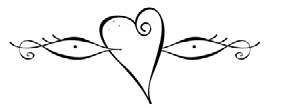

Bir Duyarlılık Çağrısı: Risale-i Nur
Derin bir duyarsızlaşma içinde yaşıyoruz. Duyarsızlığı yaşayanlar olarak, söz konusu duyarsızlığı fark etme fırsatımızı da kaybediyoruz. Fark etmediğimizin farkında olmayınca da, bir insan olarak yere, göğe, ağaca, güneşe, toprağa, suya getireceğimiz farkı da kaybediyoruz. Böylece tüm bir kâinatı ıskalıyoruz, bütün renkleriyle hayatı yitiriveriyoruz.
Duyarsızlık, herkese kaybettiriyor. Duyarsızlıkla, kendini inanmış sayan da, inançsız olduğunu varsayan da kaybediyor. İnanan, duyarsızlıkla, inanmanın lezzetini yakalayamıyor, imanın zevkine eremiyor; kalbi Cennetin ve ebediyetin tadına körleşiyor. İnanmayan da, küfür ve dalaletin sancısını hissedemiyor; ağrı çekmeyen kanser hastası gibi kendini iyi hissettikçe kötüleşiyor.
İnananların tarafında, sözüm ona ‘İslâmcılık’ olarak sivrilen tarafgirlik heyecanı, bu duyarsızlığın bıraktığı boşluğu sahte zevklerle doldurmaya çalışıyor. Müslüman olmanın lezzetini ve inanmanın zevkini, kendini birilerinin yanında ya da karşısında görerek telafi etme mekanizmaları üretiyor. Hakikati bunca tarafgirliğe hapsetmişken, “karşıdakilere”, “öteki”ne verecek bir şeyimiz de kalmıyor haliyle.
Risale-i Nur, bu talihsiz duyarsızlığın, bu derin anestezinin ortasında hepimize keskin bir sancı aşılıyor. Risale-i Nur, bir insan teki olarak, var oluşumuzdaki derin çelişkileri uyandırıyor, üzerine kül bastığımız temel acılarımızı tazeliyor. Her birimizi ‘doğuştan Müslüman’ kabul eden tarafgirlik kalıplarını hiç ciddiye almadan, ‘elimizde hazır bulduğumuz’ imanımızı dayanak yapmadan, sıfır noktasından hareketle, tüm insanları aynı kumaştan dokunmuş bilerek konuşuyor. Bizi tam da düştüğümüz yerden kaldırıyor.
Risale-i Nur, kalbimizi yeniden yazıyor.
Risale-i Nur, bize fıtrat temelli yaklaşımlar kazandırır, her birimizi kapsayıcı bir şefkatle ve derin bir anlayışla ‘fetret insanı’ kabul ederek, alabildiğine duru ve doğrudan mesajlar verir. Bunu yaparken de, fıtratımıza yakınlığı hiç şüphe götürmeyen, şifa ve hidayet verici, “insanla ikiz kardeş” olan Kur’an’la sahih ve canlı bağlantılar kurar, farkına varmasak da, kalbimizi vahyin sınırsız manalarına dokundurur.
Risale-i Nur bizi çok büyük ve global sorunlara taşımaz görünür. Bizi kendimizle buluşturur, kalbimizle tanıştırır. Risale-i Nur, okuyucusunu nefsiyle baş başa bırakır, interaktif bir iç muhasebeye sevk eder, enfüsî bir aydınlanmaya davet eder. Risale-i Nur satırlarında, usta bir psikoterapistin gıpta edeceği kadar incelikli, kıvrak ve ölçülü “içe bakış”lar gizlidir.
Bu ‘içe bakış’ hayata küs, dünyaya kör olmak için değildir. Tam aksine, hayattan ve dinamikten yana yönelmektir. Zira Risale-i Nur’a göre, hepimiz asıl kavgamızı küçük dairemizde, en temelde, kalbimiz ve nefsimiz arasında yaşıyoruz. Aksine, devlet, ulus ve dünya ölçeklerine düşen heyecanlı ve tantanalı gündemler enfüsî hesaplaşmamızı durağan kalıplara döküyor; bizi siyaset şablonlarının önemsiz malzemelerine indirgiyor. Bu önceliklere göre, et ve balık nimetini kör ve sağır sebeplere yağmalatmamak, tabiatın ya da tesadüfün eline bırakmamak, Et-Balık Kurumu’nun kime satıldığından daha öncelikli ve önemli bir “siyasal sorun” olarak karşımıza çıkıyor.
Risale-i Nur, insanı nefsine karşı konuşlandırırken, özel bir okuma metodolojisi de geliştirir. Okumak, Kur’anî manada, görüneni, yani ‘alem-i şehadet’i görünmeyene, yani ‘alem-i gayb’a şahit eylemektir. Risale-i Nur’da ‘mana-yı harfî’ diye kavramlaştırılan bu okuma usulü, her bir şeye mana-yı harfî ile, yani kendisini bir kere, Yazarını bin kere gösteren bir harf olarak bakmayı gerektirir. Zaten “alfabeyi sökmek” demek de, harflere “takılmamak”tan geçer; harfler, üzerinde kalınası şeyler değil, okunup arkasına geçilesi şeylerdir. Harf, kendini değil başkasını anlatan bir işaret, bir ayet olarak görülünce ancak, gerçek anlamda ‘harf’e dönüşür. Böyle olunca, okuyanın da başta kendisini bir harf olarak görmesi, kendini ötelemesi gerekir. Okuyan, kendi yaşayışını, kendi nefsini kendi kendini gösteren bir ‘kör nokta’ olmaktan çıkarmalı; arkasını gösterir bir pencere, bir aydınlık ayna, bir güzel mektup bilmeli. Bunun içindir ki, Risale-i Nur’un özel okuma gündemi uzaklara ve ötekilere dair değil, buraya ve beriye aittir.
Okumak ve özelde Risale okumak, insanın kendi fıtrat toprağını kazmasına, nefsinin kabuğunu çatlatmasına vesile olmalıdır. İnsan, tıpkı Exupery’nin Küçük Prens’indeki ‘yıldız tüccarı’nın yaptığı gibi, yakasına takamayacağı, boynuna dolayamayacağı ‘uzak yıldızlar’la meşgul olabilir; dilini ve kalbini ömür boyu onlarla oyalayabilir; ama en fazla rafine bir figüran olur. Oysa nefsimizi hatırladıkça, kendimizi okudukça, boynumuza dolayacak ufacık ve sıcacık bir atkımız, yakamıza takacak küçük ve güzel çiçeklerimiz olur.
Umulur ki, Risale-i Nur’u anlama ve anlaşır kılma niyetiyle kaleme aldığımız bu kitap, Risale’ye gölge yapmadan, yalın bir elçi olarak hepimizi hakikate taşır, Risale’nin fıtratımızda keşfettiği hakikat sancısını bize hissettirir.

Risale ve Ben
Üniversite hocası bilgeyi ziyarete gitmişti. Hoca alışık olduğu üzere çokça konuşuyor, çokça soru soruyordu. Bilge, tam tersine sessizce dinliyor, konuşma sırası kendine geldiğinde suskunluğu tercih ediyordu. Hocaya aynı sessizlikte çay ikram etmek için kalktı. Çaydanlığı aldı. Önce kendi fincanını doldurdu. Sonra hocanın bardağını doldurmaya başladı. Bardak doldu. Bilge çayı dökmeye devam etti. Bardak taştı. Bilge çayı dökmeye devam etti. Hoca dayanamadı. “Yeter! Bardak doldu!”, “Sen de bu fincan gibisin.” dedi bilge. “Buraya boş olarak gel ki, dolasın.”
Bir çocuk uçarılığında muhatap olmalıyız hakikate, değil mi? Fincanı alabildiğine boş!

Okudum… Hayatımın kabuğunu çatlatmak için
Bir gün bir kitap okudum ve hayatım bir kitabı okumaya dönüştü. Kırmızı kapakları arasından yüzüme vuran, oradan kalbime taşan sayfalar beni hem kendilerine çağırıyor hem de kendilerinden uzaklaşmaya ayartan davetler sunuyordu. Sayfalar boyu uzanan satırlar arasında, güneşler doğuyor, dağlar yükseliyor, yıldızlar parıldıyor, ovalar yayılıyor, kuşlar ve sinekler uçuşuyordu, çiçekler açılıyor ve dereler akıyordu. Nihayet bir kitap okuyor olduğum gerçeği, beni ne kadar sandalyeme ve masama bağlıyorsa, o kadar yerime sığmaz oluyor, bedenimden ve dünyamdan taşıp etrafa dal budak salan bir ağaç gibi gökleri, güneşleri ve kuşları kendime kardeş buluyordum. Sandalyesine ne kadar sıkı sıkıya bağlı bir okuyucuysam, o oranda da başını alıp gitmeye hazır bir seyyah heyecanı yükleniyordum. Sayfalara hem çok yakın, hem çok uzak durmanın sancısı, gözlerimi, hiç çaresiz, sayfalara kenetledi.

“Sen o mağrur seyyahsın”
Kitap, Sözler’ine “Sen o mağrur seyyahsın,” diyerek başladı ve devam etti: “Şu dünya ise bir çöldür.” Hemen ardından, şu sahranın Ebedî Mâlikinin ve Ezelî Hâkiminin adıyla yoluma gitmeye davet etti beni. “Lâkin gururun yüzünden, kendi adınla geziyorsun, kendini tek başına hadsiz düşman ve ihtiyacât içinde perişan ediyorsun!” diye bir ses yankılandı karşımdaki satırlardan. “Ne zaman bütün kâinatın dilenciliğinden ve her hâdisenin karşısında titremekten kurtulacaksın?”
Kendime güvendiğim doğruydu. Kendimi kuvvetli ve zengin sayıyor, her ihtiyacıma kendi başıma erişebilir olduğumu sanıyordum. Âciz ve fakir olmak başkalarına daha çok yakışıyordu. Bir tanıdık ve güvenecek kendimi biliyordum, sırf kendimi görüyordum. Zaten İkinci Sözü, bunları dememe fırsat bırakmadı. “Hodbin”, “hodgâm”, “hodendiş” kelimeleri, ağır bir hüküm gibi vuruldu boynuma. “Bir kendini gören, bir kendini düşünen, kendini kendinden ibaret bilen sen, gözüne musîbetli bir perde takmışsın,” diye üsteledi. Sırf kendi kendime bakışım, tıpkı sırf kendini seyre dalan bir gözün her şeyi karanlıkta bırakması gibi, etrafımdaki her şeye bir yabancı ve düşman libası giydirmişti. Her yerde, âciz biçareler, zorba ve müthiş adamların ellerinden ve tahribatlarından vâveyla ediyorlar gibi geliyordu. Önümde yol kesiciler, karşımda düşmanlar ve bitmek bilmeyen ihtiyaçlar içinde yolumdan oluyor, sarhoş olup yolcu olduğumu dahi unutmaya çalışıyordum.

Kitabı okudukça, okuma bilmediğimi anladım
Garip bir şekilde, kitabı okudukça, aslında okuma bilmediğimi anladım. Zira kitabın sadece kendimi göstermesi, kendimi kendimden ibaret bildiğimi hatırlatması, beni ilkokul sıralarıma yeniden götürdü. Okuma bilmediğim zamanlar, beyaz sayfalar üzerinde sadece kara renkli mürekkep ya da boya lekeleri görüyordum. O kara lekelerin benim için bir ‘harf’e dönüşmesi, onların sırf kendilerini değil, kendilerinden başkasını gösterdiklerini anlamamla başladı. Sonra harfleri birbirine vurdurmayı öğrenmiş ve böylece harflerin gösterdiklerini görmeye başlamıştım. Sözgelimi, şimdi karşıma “ağaç” kelimesi getirildiğinde, ne “a” harfini, ne “yumuşak ge”yi telaffuz ediyorum; harfleri görür görmez, hiç üzerlerinde durmadan derhal “ağaç”a atlıyorum. Hatta “ağaç” kelimesini de görmüyor, doğrudan hayalimdeki bir ağaca tırmanıyorum.
Demek, okumak gözümün gördüğüne razı olmamaktı. Okumak, gördüğümün gösterdiğine bakabilmekti. Okumak, gözümün göremediğini görebilmekti. Öyleyse her şeyden önce de kendimi başkasının manasını gösteren bir harf diye bilmem gerekiyordu. Şunca hayatım ve bunca eşya, bu beyaz sayfa üzerindeki siyah lekelerden daha az önemli ve daha az anlamlı olamazdı. Bunlardan esirgemediğim bakışı, onlardan esirgemek akıl kârı değildi.
Kırmızı kapaklı kitabın İkinci Söz’ünün “hodbin” kelimesi aslında okuma bilmediğimi söylüyordu bana. Bunu şimdi daha iyi anlıyorum. Çünkü “hodbin” olan, “hudâbîn” olamazdı. Yani kendini gören, hüdâyı ve hakkı göremezdi. “Kendini kendinden ibaret bildiğin için, başka her şeyi kendine kıyas ettin” diye düşünmeye başladım. “Böylece başta kendini ve dolayısıyla her şeyi, sırf kendisini gösteren birer anlamsız mürekkep lekesi zannettin. Kendi mahiyetinin ‘harfiye’ olduğunu bilemedin, başka her şeyin başkasının manasını gösteren işaretler, ayetler olduğunu göremedin. Okuma bilmeyen birinin sayfalara boş gözlerle bakması gibi, kâinat kitabının satırlarına ecnebî kaldın. Okuyamadın.”
Okuduğum kitabın bana okuma bilmediğimi öğretmesi böylece olup bitti. Sayfalara hem çok yakın, hem çok uzak olmanın tatlı çelişkisine, şimdi hem okuyor olmak, hem okumuyor olmadığımı okumanın çelişkisi de eklenince, gözlerim beni yine yeni sayfalara götürdü. Satırlar dışındaki şeylere de bir harf gibi bakmamı öğütlüyordu kitap; öyle ki sonunda kendi sayfalarını kapatsam da, hiç kapatamayacağım bir büyük kitabın ortasına bırakıverdi beni.

Satırlar şeffaflaşarak aradan çekildiler
Okumayı biraz olsun söktükçe, okuyucu kalmakla gezgin olmak arasındaki çelişki, yerini tatlı bir uyuma bıraktı. Kitabın sayfaları giderek arkasını gösterir oldu; satırlar şeffaflaşarak aradan çekildiler. Ben okudukça ayaklarım yere değdi; gözlerim kâinat sayfalarında gezindi. Kâinat kitabı ile tanıştım. İnsanlardan ayrı düşüp, ayrılığa ünsiyet ettiğim bir sayfada, Çam Dağı’nın yüksekçe bir tepesine çıktım. Kendimi büyük bir çam ağacının tepesinde bir menzilde buldum. Kendi kendime, “Bak kitâb-ı kâinatın safha-i rengînine...” diye başlayan rengârenk ve zengin bir şiiri söyledim. Sonra gözlerimi semanın yüzündeki yıldızlara dikip, onlardan şirin bir hutbe dinledim:
Şu zeminin yüzünü yaldızlayan, nazenin
mu’cizâtı çün melek seyranına
Şu semanın arza bakan, Cennete dikkat eden, binler mudakkik gözleriz biz.
Derken “Haşir Bahsi” sayfalarına geldim ve kendimi bir bahar sabahı bir göl kenarında buldum. Kitap ve ben, “Şimdi bak Allah’ın rahmet eserlerine...” diyen Kur’an ayetinin emrine uyup, arzın sonbahardaki ölümünün ardından baharda nasıl diriltildiğini seyre koyulduk. Gözbebeğimize düşen her bahar suretinden, haşre ve ahiret âlemine kapılar açıldı.
Kitap, her defasında gözlerimi yuvalarından dışarıya çağırıyor ve “İşte gel, bak!” diyordu. Her fırsatta ayaklarımı bu dünya toprağından çekip, “Gel, bir parça gezelim.” diyordu.
Bir ara “bir harf kâtipsiz olmaz, biliyorsun,” diye fısıldadı kulağıma. Ve aklımı her yerde görünen îlannâmelere, beyannâmelere çevirdi; her mal üstünde görünen tuğra ve sikkeleri, damgaları okumaya davet etti:
“Sen anlaşılıyor ki, bir parça firengî okumuşsun. Bu İslâm yazılarını hem okuyamıyorsun, hem de bilenden sormuyorsun.”
Ardından ay ile güneş bir lambasıyla aydınlatılan ve yüzü her bahar bir nimet sofrasına çevrilip, taamların en güzel çeşitleri ile doldurulan dünyayı, meyveleri ve ağaçlarıyla şöylece okumaya başladı:
“... Had ve hesaba gelmeyen şu sergilerde olan misilsiz mücevherat, şu sofralarda olan emsalsiz mat’ûmât gösteriyorlar ki, bu yerlerin padişahının hadsiz bir sahaveti, hesapsız dolu hazineleri vardı. Hâlbuki böyle bir sahavet ve tükenmez hazineler, daimî ve istenilen her şey içinde bulunur bir dâr-ı ziyafet ister. Hem ister ki, o ziyafetten telezzüz edenler orada devam etsinler; tâ zevâl ve firak ile elem çekmesinler. Çünkü zevâl-i elem lezzet olduğu gibi, zevâl-i lezzet dahi elemdir.”
Meğer suretlerde kalmışım
Kitap, nihayet gözümle gördüklerimden ve duygularımla yaşadıklarımdan bahsediyordu. Fakat şimdiye kadar, “sadece gördüğüme inanırım,” deyip, gördüklerimi gördüklerimden ibaret bilmiş, yaşadıklarımı sadece yaşamakla kalmıştım. Kâinat ve hayat satırlarının arkasını görememiştim; suretlerde kalmış ve hakikate geçememiştim.
Oysa bu sergilere ve ilânlara dikkat edip okuyabilseydim, mu’ciznümâ bir padişahın antika sanatlarını teşkil ve teşhir ettiklerini, onun kemâlâtını gösterdiklerini, misilsiz manevî cemalini beyan ettiklerini, onun gizli güzelliklerinden bahsettiklerini görecektim.
Böylece son hamleye hazırlandığımda, karşımda beni ebedî bir hayata götüren bir kapı buldum:
“Gizli kusursuz kemal ise, takdir edici, istihsan edici, ‘mâşâllah’ deyip müşahede edicilerin başlarında teşhir ister. Mahfi, nazirsiz cemal ise, görünmek ve görmek ister. Yani, kendi cemalini iki vecihle görmek biri muhtelif âyinelerde bizzat müşahede etmek, diğeri müştak seyirci ve mütehayyir istihsan edicilerin müşahedesi ile müşahede etmek ister; hem görmek, hem görünmek; hem daimî müşahede, hem ebedî işhâd ister. Hem o daimî cemal, müştak seyirci ve istihsan edicilerin devam-ı vücutlarını ister. Çünkü daimî bir cemal, zail müştaka razı olmaz.”
Derin ve sancılı bir çelişkinin ortasına düştüm
Sonra gözlerimi kendime çevirdim. Kendimi, dönmemek üzere zevale mahkûm bir seyirci yerine koydum. Zevalin tasavvuruyla, çok beğendiğim güzellikten ve mükemmellikten ayrı kalacağımı sanmam, muhabbetimi düşmanlığa dönüştürüyordu; hayret ve hürmetim tahkire meylediyordu. Ne garip ki, şu dünyada ancak bir misafir gibi kalıp, çabuk gidip kaybolmaya hazırlanıyordum; dünyada tecellilerini gördüğüm o kemal ve cemalin bir ışığına, belki zayıf bir gölgesine, bir anda bakıp doymadan gidiyorum.
Demek, hayatımı bu hayattan ibaret bildiğimde derin ve sancılı bir çelişkinin içine düşüyordum. Gördüğüm şeylerin bunca mükemmel ve güzel oluşu, bana, bu hayatın ve bu dünyanın bir başka dünyanın ve hayatın çekirdeği olduğunu hatırlatmalıydı. Bu kararsız misafirhanenin ve bu dağdağalı hayat seferinin ardında, bütün mükemmellikleri ve güzellikleri ayrılık korkusu olmadan, elemsiz ve endişesiz, doya doya seyredebileceğim bir daimî seyrangâh olmalıydı.
Çok geçmeden arkadaşlık ettiğim kitaptan, onun satır aralarında gezindiğim kâinat kitabından da aynı şeyi duyacaktım:
“Demek, bir seyrangâh-ı daimîye gidiliyor.”
Bir harfe dönüşüyorum
Böylece iki büyük harfi daha kalbimin dağarcığına kattım: Hayat ve kâinat. Hayatı ve kâinatı sırf kendilerine bakan şeyler diye tarif ettiğim için, kendimi bu daracık dünya hayatının duvarları içine itmiştim. Oysa harf olmaları, bir başka ifadeyle çekirdek olmaları, kendilerinden öte bir hayata ve bir âleme davet ediyordu kalbimi. Öylece zamanın duvarları yıkıldı; gelip geçiciliğin peçesinden sıyrılan hayatım, kendi kabuğunu çatlattı. Bir an içinde, ebedî saadeti buldum. Önce duygularımı sıkı sıkıya sarmış “hodbinlik” kabuğunu parçaladım, kendisini göstermeyen ve görmeyen, ama Kâtibini bin kere gösteren ve gören bir harfe dönüştüm. “Hudabîn” oldum. Hakkın görücüsü ve göstericisi oldum. Sonra da, beni dört bir yandan kuşatmış gelip geçici dünya toprağından sıyrılıp, Kemal ve Cemal Sahibi Rabbimin misafiri olduğumu anladım. Âleme dal budak salan bütün hasse ve latifelerimle O’nun Esmâsının tenvir ettiği bir âlemin yüzünde boy verdim. Hayatım, ebedî saadetin nesimiyle nefeslendi.
Sayfalar boyu biraz daha ilerledikçe, her şeyin temeli ve aslı bildiğim hayatım, yavaş yavaş asıl ve temel olmaktan çıktı. Tıpkı okumayı öğrenirken, harflerin asıl ve temel olmaktan çıkıp, başka manalar adına var olan işaretlere dönüşmesi gibi, hayatım da merkezî konumundan uzaklaştı. Aslında, bu bakışım hayatın lehine idi. Kendisini kendinden ibaret olmadığını görmekle, bu hayat ebedî bir hayatla ihya ediliyordu.
Çekirdek mahvolunca hayat buluyor
Sonunda, kitap, hayatı bir çekirdeğe benzetiyordu. Çekirdek, adı üzerinde kendi adına var değildi. Kendi varlığını kendinden ibaret bilse ve keyfini bozmamak uğruna kabuğunu hiç çatlatmasaydı, onca toprak altında çürüyüp kalacak ve yok olacaktı. Aksine, kendi kabuğunu kırıp, kendisini bir ağaç adına mahvetmesi, görünüşte aleyhine, gerçekte ise lehine idi. Mahvolduğu için ağaç olarak hayat buluyordu.
Kitabın en başındaki “Sen o mağrur seyyahsın,” sözü, yeniden yankılandı böylece. Demek ki, gururum sebebiyle, hayat çekirdeğim etrafındaki kabuk sertleşmiş ve kalınlaşmıştı. Ağaç olma vazifesini unutan bir mağrur çekirdek misali, dört bir yanımı saran dünya toprağına razı olmuş, kendimi sadece bu hayatla yetindirip, ebedî yokluğa ve karanlığa atmıştım.
Bu hayatın kabuğunu çatlatmam, asıl mahiyetimin acz ve zaaftan, fakr ve ihtiyaçtan dokunmuş olduğumu bilmemle mümkün oldu. Şu ifadeler kendi hayatımı bir harf gibi okunur kıldı:
“Nasıl ki açlığın dereceleri nispetinde ve ihtiyacın envaı miktarınca, taamın lezzeti ve derecâtı ve çeşitleri anlaşılır. Onun gibi, sen de nihayetsiz aczin ve fakrınla, nihayetsiz kudret ve gınâ-ı İlâhiyenin derecâtını fehmetmelisin.”
“İşte senin hayatının gayeleri,” diye sürdürdü kitap okuyuşunu. Diyebilirim ki, en büyük dönüşümü bu cümleyle yaşadım. Zira bu ifadeler, hayatımı, sayfaların dışından içeriye çekip, kitabın anlamlarının süzüldüğü cümlelerin orta yerindeki en hayatî kelimelerin yerine oturttu. Kitabı ve kâinat kitabını okuyuşum, beni de okunacak bir kitaba dönüştürüyordu. Okuyuşum aynı zamanda kendi hayatımı yazışım demekti. Şimdi, her nefesimle, bir kalem ucu kadar uzun-ince bir yola ayak koyuyorum, her sözümle bir nokta gibi kesin bir hükmün içine yerleşiyorum.
Kendimi bir büyük kitabın ortasında buluyorum
Şu an gözlerim, “Hayatın bir kelime-i mektûbedir, kalem-i Kudretle yazılmış hikmetnümâ bir sözdür; görünüp ve işitilip, Esmâ-i Hüsnâ’ya delâlet eder,” diyen Risale satırlarına mıhlanmış, satırların gösterdiklerini görmeye çalışıyorum.
Yani, hâlâ okumaya çalışıyorum. Hâlâ, Risale-i Nur’u okumaya çalışıyorum, çünkü Kur’an’ın kelâmıyla birer söze dönüşen hayatı ve eşyayı görmek ve onların gösterdiklerini görmek istiyorum.
Her şey bir harfe dönüştükçe, ölmüş veya yatmış mevcudât-ı âlem, onu okuyan ve okutan Kur’an’ın sedâsıyla işitenlerin zihninde diriliyorlar, hüşyâr oluyorlar, kıyâm edip zikrediyorlar. Hem o karanlık gökyüzünde, birer câmid ateşpâre olan yıldızlar ve yerdeki perişan mahlûkat, suskunluklarını yırtıyor; gökyüzü bir ağza, bütün yıldızlar birer hikmetnümâ kelimeye, birer nur-u hakîkatedâya ve arz bir kafaya, kara ve denizler birer lisana ve bütün hayvanât ve nebâtât birer kelime-i tesbihfeşân sûretine dönüşüp, hakikî yüzlerini gösteriyor. Kendimi bir büyük kitabın ortasında buluyorum.
Okumaktan başka çare bulamıyorum.
Kalbimizi Yeniden Yazabilmek İçin
Ben onu bir kış akşamı sohbetinin çay kokulu sıcağında tanıdım. Hepsi kırmızı kapaklı kalın kitaplar üzerinde aynı isim yazıyordu: “Bediüzzaman Said Nursî.”, “İçlerinde yine bildik öğütler vardır” diye düşünmüştüm. O sıralar muhterem pederimin onca ısrarına rağmen namazda nazlanıyor, dine ve dinî olan şeylere biraz mesafeli duruyordum. Zaten, “Din Kültürü” hocamızın evinde olduğumuza göre, farklı bir şey beklemem de gerekmiyordu. Derken, kitaplardan birinin kapağını araladı hocamız: Sözler. Yirmi Birinci Söz’ün o ünlü sorusu ilk kez çarptı kulaklarıma: “Namaz iyidir. Fakat her gün her gün, beşer defa kılmak çoktur. Bitmediğinden usanç veriyor.”
Namaza dair okuduğum, dinlediğim onca öğütten biri de bu sorudan sonra başlıyordu. Gelen günlerde, bu sorudan sonra gelen cevap, her nasılsa beni namaza ikna etti. Doğrusu, beni ikna eden biraz da sorunun kendisiydi. Soru açıktı; ürkek değildi. Soru netti; mertçe sorulmuştu. İlk defa, bir ‘dinî kitap’ta dilimin altında sakladığım kaygı açıkça dillendiriliyordu. Evet, her gün beşer defa namaz kılmak zordur. Üstelik kimse itiraf etmese de namaz usanç veriyor olabilir.
Said Nursî, soruyu benim tarafıma geçerek sormuştu
Said Nursî, soruyu benim tarafıma geçerek sormuştu. Cevabı da, “Nefsimi dinledim; işittim ki aynı sözleri söylüyor” diyerek benim tarafımda kalarak veriyordu.
O günden bugüne Risale okumaya çalışıyor, namazımda da kaim olmaya gayret ediyorum. Çünkü o gün farklı biri, farklı bir yöntemle konuşmuştu benimle. Said Nursî, “benim tarafımda” kalarak konuşmaya başladı benimle-beni karşısına alarak değil; beni anlamaya vakit ayırmadan, kendi doğrularını bana dikte ettirmeye kalkmadan. O gün bugündür, hep benim tarafımda kaldı Said Nursî. Benim tarafımda kalarak, hakkı tanımanın sancısını benim adıma yaşamış biri olarak, beni hakka taraf eyledi. Satırlar boyu, yalın bir birlikteliğimiz oldu. Hiç ayrılmadık.
Bu yüzden, onun mezarını aramaya kalkmadım. Onun adına oradan buradan itibar devşirmeye kalkmadım. Ölüm yıldönümlerini de hatırlama kaygım olmadı. İnsan olan yanım, hatalı olan tarafım onun dudağından dökülen diri kelimeler boyu hep onunla oldu. Benim için ne ‘şark uleması’ unvanı, ne ‘gönüllü alay kumandanı’ rütbesi, ne ‘asrın müceddidi’ davası heyecan uyandırdı. O, benim dimağıma sözleriyle geldi, kalbime şefkatiyle dokundu. Beni her bahar Onuncu Söz’le haşre yakın eyledi, kimi geceler Volga kenarından yazdığı mektuplarla hüzünlendirdi, her sabah, varlığını bize yeniden fark ettirdiği cevşen duasının harflerinde Esmâ-i Hüsna’ya yakın eyledi. Bana hiç uzak olmadı, beni kapısından çevirmedi.
Sözler Sahibi, beni yalın bir ‘çocuk’ olarak kapısına istiyor
Benim için sade ve siyasetsiz bir adam Said Nursî. Yalın ve tekellüfsüz, duru ve karmaşasız sözleriyle her satırda yeniden tutar ellerimden. Bana göre o sadece ‘Sözler Sahibi’ ve kalbimi yeniden yeniye yazıyor. Ben ‘çocuk’ oluyorum, onu dinliyorum. Her defasında, bilmediğimi biliyorum.
Sözler Sahibi, beni yalın bir ‘çocuk’ olarak kapısına istiyor: Çocuk olarak, yani tüm iddialarımdan arınmış olarak, tüm birikimlerimi bir kenara bırakmış bir ümmî olarak. İllâ duruluk ve berraklık içre kalarak. Öyle ki, talebelik, melekler misali ve dolayısıyla çocuklar misali, “Seni tesbih ederim ki, ben bilmem, bildiğim ancak senin bana bildirdiğindir” diyebilmektir. Hikmetin kapısı ancak bu sözden sonra açılır.
Emirdağ’daki dertli ifadesiyle, İslâmiyet ve imanın erkânlarını zorlanmadan ve müşkilsiz ruhumuza alabilmek için zihnimizin dünyevilikle iğdiş olmaması gerekiyor. Yoksa “âdeta gayr-i müslim birinin İslâmiyeti kabul etmek derecesinde zor oluyor, yabani düşer.”
Bu yabanilik dünyaya düşkünlükten geliyor olmalı. Dünyayı kalbimizin merkezine koyunca, bazen dinimiz adına bile dünya mutluluğunu önceleyebiliyoruz. Elimizdeki her veriyi, zihnimizdeki her bilgiyi öncelikle dünya refahına malzeme etmeye kalkabiliyoruz. Bu anlayış, öncelikle “saadet-i dünyeviye”yi nazara alma refleksini içeriyor. Dünyevîlik terbiyemiz, Kur’an’ın ve Resulullah’ın[asm] bize öncelikle ve bizzat “saadet-i uhreviye”yi dikkate alarak verdiği mesajları da derhal alışık olduğumuz eksene doğru çeker. Az daha da ileri gidip Resulullahı[asm] bize enflasyonsuzluk ve refah vadeden bir büyük ekonomist kimliği içine oturturuz. Buradan nefsimize bir mükellefiyet çıkmaz. Kendi kulluğumuzu hemen aradan çıkarıverir, unuturuz. “Benim Peygamberim, ta 1400 yıl önceden...”le başlayan cümlelerle, kendimizce belirlediğimiz Müslüman-kâfir ayırımı ekseninde, karşımıza aldığımız birilerine karşı kozumuz olur. Nefsimiz bir kez daha, Hıristiyan’a, Yahudi’ye, laiklere karşı “Müslüman” olmanın gururuyla sarhoş olur.
Risale’nin diyalektiği kalbimiz ile nefsimiz arasındadır
Oysa Said Nursî ne anlatırsa anlatsın, öncelikle, nefsin mükellefiyetini hatırlatır. Risalelerde, ‘cihad’ cephesi, dünyevî terbiyemizin bize dikte ettiğinden apayrı bir yerde açılmıştır. Bu cephe, kendi ölçülerimizle tanımladığımız ‘Müslümanlar’ ile ‘kâfirler’ arasında değil, kendimizle nefsimiz arasındadır; kalbimizle nefsimiz arasındadır. Kendimizi bu cepheye koyduktan sonra, Risale’nin kapıları aralanmaya başlar, Said Nursî konuşmaya başlar. Buna göre, meselâ “iktisat”, moda deyimiyle, az tüketmek değil, çok tüketmek de değildir. İktisadın nicelikle ve tüketmekle doğrudan ilgisi yoktur. İktisadı anlatmak için, Said Nursî bizi yaşayageldiğimiz ve belki de benimsediğimiz vatandaş-devlet, eşya-tüketici gibi dünyevî eksenlerden sıyırıp, bambaşka bir eksene davet eder: Kul-Rab ekseni. Bu eksen içinde, kimliğimiz ne olursa olsun, öncelikle ve bizzat bir Rabbin terbiyesine muhatap bir abd’iz. O Rab bizi türlü türlü nimetlerle terbiye etmektedir; öyleyse, paramızla alıyor olduğumuz bir mamul çıplak anlamda bir eşya değil, terbiyemiz için tasarrufumuza verilmiş bir nimettir, terbiye vesilemizdir. Verilmiş bir nimete muhatap olduğumuza göre, aslında “tüketiyor” değil, imtihan oluyoruz, terbiye ediliyoruz. O halde, “tüketici” değil, terbiyeye muhatap bir “kul”uz. Terbiyemiz de az ya da çok tüketmekle değil, nimete şükürle karşılık verip vermemekle ilgilidir. Yani, ekmeği Onun adına mı yiyoruz, yoksa kendi adımıza mı yiyoruz? Nimet vereni hatırlıyor muyuz, hatırlamıyor muyuz? Kabul; nimete şükürle mukabele etmenin bugünkü ekonomik düzene doğrudan bir katkısı olmayabilir, buradan lâiklere karşı nefsimize çıkaracak pay da olmayabilir. Ne gâm amacımız nefsimize saltanatlar aramak değil, nefsimize sultan olacak hakikatler bulmaktır. İşte böylece gelinir Risale’nin kapısına. Bir çocuk, bir kul olarak. Kendini kul olmanın dışında hiçbir kurumla tanımlamayan bir insan olarak gelinir. Orada kendini sorgulanmaz Müslüman sayarsak, nasibimize bir şey çıkmaz. Kendimizi mevcut siyasal düzlemin tanımladığı çerçeve içinde, dolayısıyla, salt tarafgirliğe ve garaza dayanan cepheleşmelerin adamı olarak tanımlarsak, Risale kapısı kapalıdır.
Risale, aklı başında, kalbi yerinde her insana yoldaş olmuştur
Said Nursî muhatabını seçerken, muhatabının ‘insan olmak’, ‘kul olmak’ dışında hiçbir özelliğini kendine referans almaz. Aslında, Risale muhatap dahi seçmez denebilir. Buna göre, herkes Risale’de dillendirilen Kur’an hakikatlerine eşit uzaklıktadır ya da eşit yakınlıktadır. Yani, nefsi olan herkes Risale’ye muhatap olarak, kendini Kur’an okulunun kapısından içeri sokabilir. Siyasî tarafgirliğimizin gereği, karşımıza aldığımız, küçümsediğimiz, lanetlediğimiz insanlarla ortak paydamız olan yanımıza, yani kötülük isteyen nefsimize hitap edilir Risale’de. O halde, mevcut düzenin belirlediği konumlara göre, kendimize biçtiğimiz imtiyazları bir kenara bırakmak zorundayız. Risale, “ey Müslüman,” diye değil, “ey nefis,” diye başlar. Risale, aklı başında, kalbi yerinde her insana yoldaş olur. Kâinata buyur edip, eşyaya baktıktan sonra, “bunda büyük bir iş var” diyen herkes Risale’nin tarif ettiği yola çoktan düşmüştür bile. Sağcı ya da solcu olmanın, şu ya da bu partinin mensubu olmanın, belli bir ülkenin vatandaşı olmanın bu tercihe doğrudan katkısı olmadığına göre, söz konusu Risale olduğunda sadece çocuğuz. Ve sadece kalbi olan bir çocuğuz.
Ve Said Nursî bizim tarafımızda durup, sorular soruyor. Cevaplar arıyor. Kendi nefsine anlatamadığını başkasına anlatmıyor. Said Nursî kendini ikna etmediği hakikatleri dava edinmiyor. Said Nursî satırlarda yaşıyor. Ne bugünlerde ölüm yıldönümlerini hatırlıyorum, ne de mezarını meçhul bir yerlerde olmasını dert ediniyorum. Çünkü Sözler’ce ve satırlar sayısınca diri bir nefes olup konuşuyor Said Nursî.
Ve kalbimizi yeniden yazıyor.

Risale ve Biz
Bilge kral halkını mutlu etmek için bir güneş saati yaptı. Kimsenin zamandan ve günün akışından haberdar olmadığı günlermiş. Güneş saatini herkesin göreceği bir meydana kurmuş. Güneş saatinin kadranı üzerindeki gölgeler günün saatlerine göre geziyor, uzuyor ve kısalıyormuş. Böylece halk zamanı öğrenmiş, günün saatlerini fark etmiş, sabahı bekler, akşamı bilir olmuş. Sevgililer ne zaman buluşacaklarına karar vermişler, tüccarlar alışverişlerin vadesini ayarlayabilmişler. Dakik, düzenli, güvenilir bir toplum olarak hem mutlu olmuşlar hem de zengin olmuşlar. Derken, her fani gibi kral da bu dünyaya veda etmiş. Kral ülkede kimseye bu güneş saatinin sırrını öğretme fırsatı bulamamış. Krallarının ölümüne çok üzülen halkı onun bilgeliğini hatırlamak adına güzel bir şey yapmak istemişler. Sonunda, güneş saatinin çevresine altın kubbeli bir anıt inşa etmeye karar vermişler. Fakat anıt bittiğinde güneş saatinin kadranına uzanan gölgeler de kaybolmuş. Halk da zaman duygusunu yeniden kaybetmiş.
Gölgenin varlığı güneşten haber verir; öyle değil mi?
Testiyi kırmak...
Mevlâna’nın Mesnevî’sinde geçen bir küçük öykücük, Risale-i Nur derslerinin özel duruşunu hatırlatır.
Bir ustanın biri iki gören şaşı bir çırağı vardır. Usta, bir gün evdeki su testisini getirmek üzere çırağı eve gönderir. Çırak birazdan döner; evde iki testi olduğunu, hangisini getireceğini bilemediğini söyler. Çırağın şaşılığını bilen usta, “Evladım,” der, “sen hangisini istersen onu getir.” Ne ki, birazdan tekrar dönen çırak, yine hangisini getireceğine karar verememiştir. Bunun üzerine, usta, “Peki,” der, “sen onlardan birini kır, diğerini getir.” Çırak birazdan eli boş döner. Gördüğü iki testiden birini kırmıştır, ama diğerini bulamamıştır!
Mevlâna’nın başka bir amaçla anlattığı bu mesel-öykü, bugün “İslâmcı”, “Müslüman kesim”, “Müslümanlar” vesair unvanlar altında ünlenmiş kimi insanların, kurumların ve örgütlerin hâlini pek güzel tasvir ediyor. Son birkaç asırdır süregelen modernlenleşme ve Kur’anî kültürden kopuş çabaları, kendilerini Müslümanlardan yana tanımlamayan insanlar kadar, “Müslümanlar”ı da etkiledi. Köklü muhtevasından kopup, haklı edasından uzaklaştığımız Müslümanlık, kimi takipçilerinin temsil ettiği şekliyle, bir taraftarlığa indirgendi, bir tür etiketleme olarak algılanır oldu. Böylece kadîm kültürlerin insanı sigaya çeken, herkesi eşit derecede kucaklayan Rahmet dini, Müslümanlarla Müslüman olmayanlar arasında bir savaş hattı, bir mayınlı alan, bir kavga silahı, bir harp çığlığı, bir düşmanlık ve saldırı parolası olarak takdim edilir oldu. Böylece, herkesi ve her şeyi bir güneş gibi kucaklayıp ihata etmesini beklediğimiz Müslümanlık, “öteki”nin varlığıyla tanımlanan bir dar alan ve “ötekinin” tehdidinden beslenen bir heyecan olarak resmedilegeldi.
Oysa İslâm “bizimkiler” ve “onlar” arasında bölüşülmeyecek kadar evrensel değil midir? İslâm’ı sırf “biz” diğerlerine göre daha iyi Müslümanız ya da öyle görünüyoruz diye kendi tarafımıza çekmemiz, kendi tasarrufumuza almamız, aslında İslâm’ın hakikatlerini tebliğ etmek istediğimiz “diğerleri”nin önüne, “bizden” yana olmak gibi bir yapay engel koyuyor. Bu engel tam da Mevlâna’nın öyküsündeki şaşı görmeye denk geliyor. “Biz”e düşen, kendimizi Nuh’un gemisinde görmeyecek kadar ihtiyatlı olmak; “diğerleri”ni tufan mahkûmu görmeyecek kadar da şefkatli olmaktır. Güzellikten ve doğrudan yana ne varsa “biz”den yana düşmek zorunda değil; çirkinlikten ve hatadan yana ne varsa “öteki”ne bulaşmak zorunda değil. Bütün insanların ortak paydası olan siyasal iktidar tutkusu ve tarafgirlik gerilimi, yine herkesin ortaklaşa paylaşabileceği doğruyu ve yanlışı, güzelliği ve çirkinliği iyice kutuplaştırıp birilerine özgü kılmayı getirmişti. Siyahı ve beyazı değişik tonlarda barındıran, aynı fıtrat temeli üzerinde yükselen bir gri insan tanımı, yerini görünüşte siyahın tümüyle birini kuşattığı, beyazın ise baştan sona diğerine lâyık olduğu, kuzgunî siyahlıkta ve kar beyazlığında iki tip insanı doğurmuştu. Asr-ı Saadette, Resulullah’ın[asm] vaktinde Ebu Bekir[ra] ve Ebu Cehil karşıtlığında ele alındığında bu siyah-beyaz yaklaşım taraflarını kolayca buluyordu şüphesiz. Kur’an’daki kıssalarda Hz. Mûsa[as] ve Firavun; Hz. İbrahim[as] ve Nemrut mücadelesinde de taraflar kesin çizgilerle birbirinden ayrılıyordu. Ancak, bu kesin ayırımları podyum ve İslâmcı parti karşıtlığına taşımak ne kadar yerinde bir tutumdu? Podyumlarda olanlar tümüyle fir’avunâne bir hayat mı sürüyorlardı, içlerinde İbrahim’den[as] yana bir kırıntı olamaz mıydı? Farzımuhal, bütün olumsuzlukları içlerinde barındırsalar bile, bu insanların tek seçeneği bir siyasî parti yandaşlığından mı ibaretti? Siyasî parti saflarında olmakla İbrahim Aleyhisselamdan, Mûsa Aleyhisselamdan, Hazreti Ebu Bekir’den yana olunmuş oluyor muydu? Parti saflarında olmak nihaî hakikate götürüyor muydu insanı? Muhaliflerine bulaşan şerler, kötülükler, olumsuzluklar onların eteğine hiç dokunmaz mıydı?
Siyasal kavgaların gürültüsü içinde bu inceliklerin sorgulanması, en fazlasıyla “şimdilik çok lüks” uyarısına yansıyan bir duyarlılığı hak ediyor gibiydi.
İşte Mevlâna’nın öykücüğü burada devreye giriyor. Kendilerini insanlara hakkı tebliğ etmekle vazifeli gören “Müslümanlar”, “İslâmcılar” sanki çırağın şaşı bakışını giyinmiş gibiler. İnsanı nefsiyle, kalbiyle, zaaflarıyla ve kabiliyetleriyle bir görmemiz gerekirken, iki görüyoruz. “İyiler” sınıfında sıraladıklarımızın sanki hiç nefsi yok, “kötüler” diye bildiklerimiz ise topyekûn iflah olmaz bir kötülüğün içinde yuvarlanıyorlar. Hâl böyle olunca, siyasetin kaba ve duyarsız tarafgirlik okları, olanca hıncıyla hem de herkesin ortak malı olan İslâm adına, “karşı” cephedeki insanlara saplanıyor. Bir kavganın bir yanını tutan, bir takım sloganları dillendiren insanları İslâm’ın kendisiyle ikizleştirenler, kendilerini “İslâmcılar”ın karşısında buluyorlar; bilmedikleri, en azından kendilerine yanlış bildirilen İslâm’ın karşısına itiliyorlar. Sonuç: İslâm’ın içerdiği hakikatlere, kalplerinde ve vicdanlarında en az “Müslüman kesim” kadar muhtaç ve teşne olan insanlar, yapay bir uzaklığa itiliyor, kırılıyorlar. Ve çırağın “diğer” testiyi kırdıktan sonra yaşadığı aynı hayal kırıklığı geliyor ardından. Kendilerini hatadan uzak gören “beyazlar” bu tutumlarıyla nefislerine İslâm’ın terbiyesini dokundurmadıkları gibi, “siyahlar”ı da İslâm’ın şefkatli elinin okşayışından mahrum bırakıyorlar. Çıraklar ustalarına eli boş dönüyor.
Ne var ki bu sahte siyah-beyazlığı aşan bir ses, parti toplantılarından ya da cemaat ve cemiyet kurumlarından değil, aksine çok duru ve gölgesiz bir zeminden, beyaz sayfalardan geliyor: Said Nursî’nin Risale-i Nur Külliyâtı . Zaman zaman Risale-i Nur’u temsil eden/temsil ettiğini söyleyenlerin baskın gözüken kişisel, siyasal yaklaşımlarıyla gölgelenir gibi olsa da, Risalelerin konumuz açısından iki ayırıcı özelliği satırlar boyu izlerini sürdürür.
(1) Risalelerin okur olarak muhatap aldığı “Müslüman”dan önce “insan”dır; insan adına muhatap alınan da herkesle ortak paydası olan nefsidir. Bu özelliği ile Risale-i Nur, muhatabını baştan Müslüman varsayan ve mesajlarını Müslüman olmak gibi tanımsız ve muğlak bir kontrata dayanarak veren sair eserlerden ayrılır. Örneğin, “muhabbetullah” gibi, dindar olmak, sonra da tasavvuf ehli olmak türünden makamların ardına saklanılan bir dersi, Risale-i Nur’dan almanın önkoşulu nefsini seven, dünyayı seven biri olmaktır. Kendini ve dünyayı seven herkes Risale’nin ders halkasına katılabilir demektir bu. “İslâmcı,” “Müslüman kesim”den olmak gibi bazları Risale-i Nur yok sayar, esas kabul etmez. Herkesin ortaklaştığı yerden başlayarak verir mesajını. İnsanı düştüğü yerden kaldırır.
(2) Risale-i Nur’a göre, sefahat ve dünyevîlik içinde görünen insanların çoğunluğunun (yazarın ifadesiyle %80’inin) orada olmalarının sebebi sefahati ve dünyevîliği istemeleri değil, şaşkınlıkları ve kararsızlıklarıdır. İnsanların çoğu hakikat ararken başına batıl geçmiş çaresizler konumundadır. Öyleyse onlara düşmanlık etmek değil, şefkat elini uzatmak gerekir. Said Nursî’nin kavramlarıyla konuşursak, bu insanlara “siyaset topuzu”yla vurmak yerine “nur” göstermek, yollarını aydınlatmak gerekiyor.
Risale-i Nur’un bu iki özelliği, okuyucusunu insanı nefsi, kalbi, vicdanı olan, hayra da, şerre de kabil bir temelde görmeye götürür. “Müslümanlar”dan yana olmanın sahte güveni bu yaklaşım içinde erir ve her insan kendini şeytanın ve nefsinin tuzakları karşısında, kalbinin ve vicdanın çağrıları arasında yalın ve çıplak olarak bulur. Kanaatimce, işte o zaman çırak, marifetin testiyi kırmakta değil, şaşı bakışını düzeltmekte olduğunu anlar.

Hatırlamaların En Güzeli
Alışkanlıklarımız kör bir kuyu gibi yolumuzun başını tutmuş. Nereye yürüsek kuyularımız da peşimiz sıra geliyor. Küçük Sözler’deki temsili hikâyecikleri ilk defa okurken, kendimi temsili hikâyeciklerin hangi yanına yerleştireceğimi kimse söylememişti. Benim de bir bildiğim vardı elbet. Öylece, Birinci Söz’den başlayarak, “mütevazı adam”ın yanında yerini almış, “mağrur adamın” da karşısına yerleşivermiştim. Sayfalar ilerledikçe unvanlarım değişti değişmesine ama yerimden tamamen emindim. Ehl-i dünya, tabiiyyun, hodbin, tenperver, serseri, mağrur gibi sıfatlar benden alabildiğine uzaktı. Ne var ki, bu sıfatlardan uzak durmanın şartı, ehl-i iman, hudâbin, vazifeperver, emin ve mütevazı olmaktı. Peki, öyle miydim?
Onuncu Söz’ün ‘Mukaddimesi’ne gelince yerimin pek de sandığım gibi sağlam olmadığını görecektim. Zira hikâyedeki sersem adam öncelikle ‘nefs-i emmarem’i temsil ediyordu. ‘Emîn adam’ ise kalbimdi. Böylece temsili hikâyeler nefsim ve kalbim kadar bana yakınlaşıverdi; bu arada serseri adamla emin adam arasındaki mesafe de kapanıverdi. Bazen—belki de çoğu zaman—serseri adamın, bazen emîn adamın tarafında olabilirdim. Hem zaten Birinci Söz’ün başındaki “Bil ey nefsim!” ifadesi kendimi serseri adamın yerine koyarak okumamı ima ediyor olmalıydı.
Gerçekten de, Onuncu Söz’ün başındaki diyalogda, serseri adamın yerine nefs-i emmâremi koyduğumda, diyalogun çehresi birden değişiverdi. Nazarımda, bir hayalî hikâye olmaktan çıktı, doğru hakikatlere dönüşüverdi. Mesela:
Nefs-i emmârem her istediği şeye elini uzatıyor. İstediği her şeye elini uzatıp, ya çalıyor, ya gasbediyor. Hevesine tebaiyet edip her nevi zulmü, sefahati irtikâp ediyor. Ahali de ona çok ilişmiyorlar. Kalbim ona dedi ki:
“Ne yapıyorsun? Ceza çekeceksin, beni de belâya sokacaksın. Bu mallar mîrî malıdır...”
Fakat nefs-i emmârem inat edip dedi:
“Yok, mîrî malı değil, belki vakıf malıdır, sahipsizdir; herkes istediği gibi tasarruf edebilir. Bu güzel şeylerden istifadeyi men edecek hiçbir sebep görmüyorum...”
İkisi arasında ciddi bir münazara başladı. Evvela, nefs-i emmarem dedi:
“Padişah kimdir; tanımam?”
Sonra, kalbim ona cevaben, Bir köy muhtarsız olmaz, bir iğne ustasız olmaz, sahipsiz olamaz, bir harf kâtipsiz olamaz; biliyorsun...”
Nefs-i emmârem döndü dedi:
“Haydi padişah var; fakat benim cüz’î istifâdem ona ne zarar verebilir? Hazinesinden ne noksan eder? Hem, burada hapis mapis yoktur, ceza görünmüyor.”
Kalbim ona cevaben dedi:
“Yahu, şu görünen memleket bir manevra meydanıdır. Hem sanâyi-i garibe-i sultâniyenin meşheridir. Hem muvakkat, temelsiz misafirhaneleridir...”
Yine o hain, sersem nefs-i emmârem temerrüd edip, “İnanmam. Hiç mümkün müdür ki, bu memleket harap edilsin, başka bir memlekete göç etsin?” dedi.
Nefs-i emmâreyi konuşturunca cümleler nasıl da tanıdık geliyor değil mi? Hayır, sayfalar arasında uzak bir hikâyedeki sersem adam konuşuyor değil, şimdi ve burda biz konuşuyoruz, nefs-i emmâreler konuşuyor. Her gün bir yanımız hikâyeler içine dalıyor, hikâyeler yakamıza yapışıyor. Biz nefs-i emmâremizi unuttukça daldığımız kör kuyu derinleşiyor, kararıyor. Madem ki unutmakların en kötüsü nefsi unutmaktır, hatırlamakların en güzeli de nefsi hatırlamak olsun.
Risale-i Nur en çok unuttuğumuzu hatırlatıyor bize.

İtiraf Eden Kurtulur ve Kurtarır
En çok beğendiğiniz ve halinden en çok memnun olduğunuz insanın kim olduğu sorulsaydı, ne cevap verirdiniz? Hadi, yorulmayın. Sizin yerinize dürüstçe cevap veriyorum: “Ben” Evet, itiraf ve ilan ediyorum: Ben beni beğeniyorum. Ben benden memnunum. Kendimi nadiren eleştiriyorum, eleştirilmemi de arzulamıyorum. Elimden başka ne gelir ki? Hatalar, haksızlıklar, kötülükler benim dışımda kalmış bir kere. Hata başkasında, kusur karşıki adamda, kötü ötekiler. Sanki negatif uçlu bir mıknatıs gibi, pozitiflerin hepsi bana koşup gelmiş, yakama yapışıvermiş, benim tarafımda kalmış. Ne kadar negatif varsa benden kaçmış, benden uzak kalmış, karşı kutba geçmiş, başkalarına kalmış.
Gelin bugün kutupları değişelim: Pozitif bir bakışla bakalım kendimize ve üzerimizdeki negatifleri görelim. Tamam; başkaları da hatalıdır elbet, açık açık cinayetler işlemişlerdir. Başkalarının hatasını bilmek ve görmek en çok malumat getirir dünyamıza. Oysa en kârlı okuma, kötülüğü kendine doğru okumadır. Hatayı kendi yanımızda aradığımızda kazancımız kuru bilgiden öteye geçer. Kendi işlediğimiz cinayetleri görmek, sahih bir istiğfara ve sahici bir ıslaha götürür. Kaldı ki, insan en çok kendi hatalarına aşinadır. İnsan en iyi kendi hatalarını görür. Öyleyse, ‘benim hatalarım’ başkalarınkinden daha çoktur ve daha açıktır, çünkü öyle görüyorum.
Gerçi, kimse sırf kendini hatasız görecek denli cesur değildir. Tek başına temizlik ve kusursuzluk iddiasında bulunamayız. Bunu bal gibi biliriz. Onun için de yanımıza başka temizler alırız, başka kusursuzların yanında yer alırız. Böylece şık bir nefis oyunuyla, kendimizi temize çıkarma davamız, özel bir taraftarlığa dönüşür, bir takım tutma saikiyle hareket eder. Bu defa, “Ben” değil, “Biz” deriz. “Biz kusursuzuz” demek daha kolaydır, daha inceliklidir çünkü. Bundan sonra, “Biz”in karşısında yer alan “Onlar”ın ya da “Ötekiler”in tüm hataları bizim kusursuzluğumuz hesabına geçer, her defasında biz temize çıkarız. Artık, sırf “Ötekiler”i referans alarak tanımlanan bir taraftar topluluğuna dönüşmüşüzdür. Ötekileri sorgulamaktan, tel’in etmekten kendimize çeki düzen vermeye vaktimiz, fırsatımız olmaz. Zaten buna niyetimiz bile yoktur.
Şimdi niyetimizi değiştirmek zamanıdır işte. Bu diyarda Müslüman olmak adına, “İslâmcılık” denen özel bir taraftarlıkla yapılan ve söylenen o kadar çok şey oldu ki, bunların hepsine doğru, istikametli, insaflı ve ihlâslı demek herhalde mümkün değildir. Öyleyse, doğru olmayan, istikametten yoksun, insafsız ve ihlâssız ne kadar söylemimiz ve eylemimiz varsa bir dökelim ve muhasebesini yapalım. İyi olmaz mı? Böylece yeni bir başlangıç yapar, sahici bir temizlenme ve yenileme gerçekleştiririz.
İşte, bizim ‘pozitif’ kutba musallat olmuş ‘negatiflik’lerimizin itirafı:

Siyasallaşma Kaybettirir
İslâm adına siyasallaşma, İslâm’ın, çağrıştırdığı ‘selamet’, ‘barış’, ‘huzur’ gibi anlamlarla açık biçimde çelişiyor. Siyasallaşma, herkesin hakkı olan, herkesin bilerek ya da bilmeyerek güzelliklerini paylaştığı ve benimsediği İslâm’ı, kitleler gözünde keskin bir taraftarlığa itmiş, marjinal bir konuma indirgemiştir. Oysa kendisini “Müslüman” kabul eden ya da “laik” diye tanımlama ihtiyacı duyan herkesin ortak paydasıdır İslâm. Ancak, siyasallaşma, bir taraftarlığı çağrıştırdığı için evrensel olan İslâm, birilerinin yanında görülüyor. “Müslüman” olan, İslâm’ı kendi yanında hazır görürken, diğerleri İslâm’ı kendilerine yönelmiş bir ok gibi görüyorlar. Bu her iki taraf için kayıp anlamına gelir. Zira birinciler, kendilerini hazır Müslüman zannettiği için bir enfüsi tekamülden yoksun kalır, ikincilere ise tebliğin yolu kapanır. Said Nursî’nin çoğunluğun dine karşı değil ama din konusunda karışık bir kafa taşıdığını, tam anlamıyla sapkınlık değil ama şaşkınlık yaşadığını saptaması, tarafgirliğin değil, kendimizi herkesle aynı yanda görecek geniş ve sahih bir hoşgörü zeminin gerekliliğini ortaya koyuyor.

‘İslâmcılık’ sahih değildir
“İslâmcılık”, hakikatle bağdaşık bir terim değildir. İnsan, ancak “Müslüman” olur ya da olmaz; “İslâmcı” teriminin Kur’an’ın, sünnetin ve kadim geleneğin içinde sahih bir karşılığı yoktur. “İslâmcılık” olsa olsa bir oryantalist yakıştırmasıdır ki, devletten ya da otoriteden İslâm’ı benimsemesini ya da uygulatmasını talep eden kimi Müslüman ideologların özel konumunu ifade eder. Oysa İslâm, devletin ya da bir başka mikro iktidar kaynağının ‘Müslüman’ olmasını beklemez ve öncelemez. Müslüman, devletten Müslümanlık değil, hürriyet bekler. Devlet insanı Müslüman edemez. Devlet, insanın Müslüman da olabilmesine izin veren, tebliğe açık bir özgürlük alanı hazırlamaktan sorumludur. Bu bağlamda, B. Said Nursî’nin “İslâmcı” olarak zikredilmesi yerinde değildir. Osmanlı’nın son dönemindeki tavırlarından anlaşılacağı gibi, Said Nursî, devletten Müslüman olmasını ve insanları Müslüman etmesini değil, insanları hür bırakmasını talep etmiştir. Zira ‘kul’ olmanın ilk şartı ‘hür’ olmaktır.
İktidar hevesi bir zaaftır
Her çözümü devlete endeksliyoruz ve her davamızı iktidar hevesine ayarlıyoruz. Aslında, “siyasallaşma” akımının ve “İslâmcılık” anlayışının sonucu kazandığımız özel bir alışkanlıktır bu. Yaşadığımız tecrübeler iktidar hevesinin ve hedefinin hakikatin safiyetini bozduğunu, sahih ve yalın mümin duruşunu saptırdığını çok açıkça göstermiştir. Zira bir iktidarı hedeflemek, işin başında hakikat kaygısının dışında bir kaygıyı öncelemeyi gerektirir. Bu defa aslolan hak olmaktan çıkar, iktidar olur. Hakkın hatırı iktidar olmanın gerekleriyle çakıştığı yere kadar sayılır, çatıştığı yerde ise iktidarın gereği öncelenir. Yakın geçmişte, iki önde gelen “İslâmcı”nın iktidarda ya da iktidara yakın durduklarında yaptıkları ve söyledikleri, iktidar hevesinin en büyük zaaf olduğunu gösterdi. Hak adına konuşanların takiyye, riya ve yalana kendilerini mecbur hissetmeleri, ‘siyaseti önceleme’nin tıpkı şeytan gibi ‘saptırıcı’, ‘yoldan çıkarıcı’ olduğunu gösterdi. İktidara müstağni bir tavır, hakkın hatırını öncelediği gibi, karışık ve şaşkın kafalarda hakkın iktidarını kolaylaştıracak, bulanmamış ve bozulmamış kalplerde gerçek devleti tesis edecekti. Said Nursî’nin, rejim ve devlete olan tavrı bu konuda özel bir ‘sivil itaatsizlik’ teorisi ve pratiğini ortaya çıkaracaktır. Burayı iyi anlarsak, ‘müsbet hareket etme’yi rejime tam sadakat olarak yorumlamaktan da kurtuluruz sanıyorum.

‘Ücret’ istememeliyiz
Hakkı tebliğ etmenin ilk şartı, karşılığında herhangi bir ücret istememektir. Risale mesleğinin zekât istememe ya da beklememe ilkesi bunun en görünür ucunu temsil eder. Oysa ücret istemenin, daha gizli, fark edilmeyen biçimleri de vardır. Yukarıda zikredilen siyasallaşma, “İslâmcı” kaygılar ve devlet-iktidar hevesli düşünceler, yaşantımızın mikro düzeylerinde sürekli bir tarafgirlik refleksi oluşturmuştur. Hangi düzeyde olursa olsun, herkes hakkı anlattığı birinden, karşılığında hemen benimsemesini, benimsemişse de hemen kendi yanında (kendi siyasal partisinde, kendi cemaatinde, kendi meşrebinde) olmasını bekliyor, umuyor. Sürekli ‘yandaş’ arama meyli, tebliğin yalınlığını zedeliyor, hakkın hatırını gölgede bırakıyor. Yâsîn Suresi’nde zikredilen “Sizden ücret istemeyenlere ittiba ediniz.” sırrı böylece ihlal ediliyor.
Bundan böyle, siyasallaşmanın sivrilttiği tarafgirliği kırıp, devlete ve iktidara heveslenmeden, devletten sadece hürriyet isteyerek ve kimseden hakkı benimseme karşılığında bizden yana olmasını beklemeksizin yaşamalıyız.
Yoksa ne kurtuluruz ne de kurtarabiliriz.
Hatalar Bizden Yanadır
Hata, kusur, noksan, kötülük ve benzeri şeyleri aramaya sıra geldiğinde, asla uzaklara gitmemeliyiz. Sorgulamalarımız bu yanda, beri tarafta kalmalı. Soruları ve suçlamaları kendimize yöneltmeliyiz. Nefsimizin karnında, dünyanın dalgalı denizinde, zamanın zifir karanlığında çaresizken, Yunus Aleyhisselamın ardına düşmekten başka çaremiz yok. Bir Yunus istiğfarı ile başkalarını değil yalnız kendimizi ‘zalimlerden olmuş’ bilmeliyiz. Yusuf’un[as] çile kuyusuna insek de zindanına düşsek de “nefsim muhakkak kötülüğü ister; Rabbim merhamet ederse başka” demekten ötesi yok. Geçeceksek diğerlerinden önce kendimizi musibeti hazırlayan cinayette pay sahibi görmeliyiz. ‘Onlar’dan önce, ‘bizim’ tarafta cinayetin izlerini sürmeliyiz. Diğerlerinin cinayetlerini kendilerine bırakmalı ve kendimizi de hatalı bilmeliyiz. Kendimizde, kendi tarafımızda düzeltilecek şeyler bulmalıyız.
Yeni başlangıçları ciddi sorgulamalar hazırlar. Yeni başlangıçlar, yeni niyetler, taze şevkler, musibetin ardında saklı ‘mükâfat’ı hak ettirir. Musibeti getiren ‘cinayet’i keşfedemeyen, musibetin getirdiği ‘mükâfat’ı hak edemez. Kendi cinayetlerimizi gördüğümüz pencereden yeni bir sabahın ışıklarını bekleyebiliriz. Kendi pişmanlıklarımızın enaniyetimizin kabuğunda açtığı gedikten taze bir filiz olup yeniden doğabiliriz. Yeter ki cinayetlerimizi görelim, yeter ki pişmanlıklarımızı yanımızdan eksik etmeyelim. Hiç kimse, hiç kimse önünde küçük düşmekten korkmadan, hiçbir topluluk bir diğerine karşı kaybetme utancı yaşamadan, hiçbir cemaat itibarını kaybetme telaşına düşmeden, hiçbir fikir önderi de fitne kaygısının ardına saklanmadan, bu kıyamet öncesi hesaplaşmada yer almalı. Kural o ki, herkes kusuru kendisinde, kendi yanındakilerde, kendi tarafında, kendi tarzında arayacak. Cinayetler hep beride aranacak, kusurlar burada bulunacak, hatalar bu yakada görülecek.
Yunus Aleyhisselamın musibet karşısındaki o eşsiz tavrı, bireysel düzeyde, cemaatler ve topluluklar düzleminde uygulamaya konulacak. Yusuf Aleyhisselam gibi, nefsimizin mutlaka kötülüğü istediğini itiraf ederek, Rabbimizin rahmetiyle terbiye olunmayı hak edeceğiz. Kendimizi temize çıkarıp karşıdakileri karalamak değildir Yunusvârî duruş. Nefsimizin kötülüğünü görebilmektir Yusufleyin bakış. Kendimizi karalayıp, başkalarını masum görmemiz gerek. Kendimizi temize çıkarma kaygısı bizi kör ediyor. Kendi tarafımızı ezelden haklı görme telaşı bizi sağırlaştırıyor. Her defasında haklı çıkmak, ‘biz dememiş miydik!’ kalkanının arkasına geçip eleştiri oklarını savuşturmak, bizi derin bir anestezi gibi uyuşturuyor.
Yaramız olsun ve gocunalım ne çıkar. Hatalarımız olsun ki, istiğfarın tadına varalım. Bir gün geri dönüp bakınca, pişman da olabilelim mesela. ‘Bir daha asla!’ bile diyebilelim. Geçmişte şaşırmış da olabilelim meselâ; ki doğruluğumuz sahih olsun. Katı, kırılmaz, yıkılmaz, dokunulmaz zırhların içinden çıkalım. İnsan tenimizle kalabalıklara karışalım. ıslanabilir, yaralanabilir, kanayabilir, acıyabilir insan bedenimizle yürüyelim yeryüzünde. Günaha ve hataya bağışıklığımız yok, hatırlayalım; aksini de üstü kapalı da olsa iddia etmeyelim. Nihayet yeryüzüne cennetten indirilmiş insanlarız ve ‘kan dökebilir’ ve ‘fesat çıkarabilir’ olarak buradayız. Bırakın biraz da mahçup olalım, pişman olalım, utanalım, üzülmüş olalım ki, sevincimiz de, hamdimiz de, sürurumuz da, haklılığımız da sahici olsun.
Dört köşeli kalıplar içinden sıyrılalım, pürüzsüz şablonlardan çıkalım. Yalın bir eda ile hatadâr bir âdem olarak var olalım. Yüreğimiz bütün savunmalardan uzakta kalsın. Aklımız ak ve karalar arasında tereddütle bekleyedursun. Kur’an’ın ‘az daha gönlünü kaptıracaktı’ diye ifade ettiği; kalıplardan uzak, yapmacıksız Yusuf[as] tereddüdünü biz de paylaşıyor olalım. Sırça köşkümüzden çıkalım, rüzgârda savrulalım, ayağımıza diken batsın, yalın ayak kalalım, susayıp aç da kalabilelim. Hem sonra, itiraflarımız da olsun, sancılarımızı açık edelim. Sözümüzü hak ile batıl arasından zahmetle ve gayretle çıkarmış olalım. Söylediklerimizi yüreğimizde pişirmiş de söylemiş olalım. Acının içinden geçerek konuşalım, şüphelerimizi yanımızdan eksik etmeden tebliğ edelim. Kendimizi de onarıma muhtaç görelim. Herkesle aynı kumaştan olduğumuzu bilelim. Biçimli olmak adına, buzdan kalıplara girmeyelim. Çözülelim, eriyelim, dağılalım, toprağa karışalım. Böylece, başka dudaklara kolayca erişebiliriz belki. Başka yüreklere hiç dirençsiz akabiliriz belki.
Ne çıkar, bizim de cinayetimiz olmuş olsun. Bahçemiz de kocaman bir pişmanlık gülü büyüsün. Kan rengi olsun, dikenleri olsun. Cinayetimizi hatırlatsın. Ama mutlaka muştu kokusu versin.
Kovamızda Süt Var Mı?
Hikâye bu... Nerede, nasıl, kimler arasında geçti bilinmez. Ama nerede, ne halde, kim olursak olalım, bir çırpıda içinde buluyoruz kendimizi. Bir zamanlar bir kral cümle memleket ahalisini bir meydanda toplar. Memlekette bebelerin içecek süt bulamadığından bahis açan kral, çare olarak büyükçe bir kuyu kazdırdığını belirtir ve herkesin o günün gecesi evinden bir kova süt alıp, kimseye görünmeden kuyuya boşaltmasını ister. Ahali, meydanda, kralın huzurunda seslice hep bir ağızdan söz verir. Nihayet gece iyice koyulaşır, insanlar evlerinden doldurdukları kovalarla akın akın kuyunun yanına varır, kovalarını ardı ardına kuyuya boca ederler. Ve sabah erişir... Kral ve bütün ahali kuyunun yanına varırlar. Herkesin hayalinde ağzına kadar beyaz süt dolu bir kuyu vardır. Kuyunun kapağı heyecanla kaldırılır. Fakat kuyunun ağzına kadar su dolu olduğu görülür.
Böylece herkes tek tek kendi başlarına kalınca işlediği suçu birbirlerine ifşa etmiş olur. Kuyudan beyaz süt çıkmayınca, cümle ahalinin alnının aklığı da bir anda yitiverir. Herkesin birbirine karşı ilân ettiği masumiyet bir anda uçuvermiş, herkes herkesten utanır hale gelmiştir. Herkesin ortak suçu ayan olmuştur artık... Zira eline kovayı alan herkes, yalnız başına kaldığında meydanda verdiği sözü unutup, “Eh nasılsa, onca insan kuyuya süt dökecek, benim bir kovacık suyum o kadar süt arasında kaynayıp gider” diye düşünmüştü. Öyle düşündüğü için de her biri, kendi vazifesini başkalarının üzerine havale etmiş, ama herkes böyle düşündüğü için masumiyet elbiseleri üzerlerinden uçuvermişti. ‘Herkes’in yapması gerektiğine inanılan, ama pekâlâ ‘herhangi biri’nin da yapabileceği iş, ‘hiç kimse’ adlı heyulanın omuzlarında aşağıya düşüyordu....
Bu hikâyenin bizi ilgilendirmeye başlaması, eskiden beri süregelen bir akımla başladı: “Müslümancılık”. Adı biraz tuhaf kaçan bu akım, aslında “İslâmcılık” diye bellediğimiz akımın, bence, daha çıplak ve net ifadesinden ibarettir. “İslâmcılık” ya da “Müslümancılık” nefsî eksende gerçekleşebilecek Müslümanlardan yana bir taraftarlık iken, mümin ve Müslüman olmak nefsin hakka teslimiyeti, hak ile bağlanmasıdır. Mümin ve Müslüman olmak, kişiyi bir abd olarak, Rabbine nispet eder. Mümin sözlerini, hareketlerini ve hallerini Rabbinin huzurunda olmaya göre belirler. Müminin karşısında kalabalıklar, devasa düşmanlar, barbarlar, laikler, laikçiler, dış ve iç mihraklar, acayip istihbarat teşkilatları olmasa da, o kendini cihatla vazifeli bilir, nefsi ve şeytanı düşman olarak ona yeter. Rabbinin karşısında yalnız ve yalın bir yolculuğa devam eder. Müslümancı ya da İslâmcı, kendini kalabalıklara göre tarif etmek zorunda hisseder. Dışarıda, uzaklarda ve karanlık köşelerde, çeşitli isimler altında boy gösteren düşmanlar sayesinde kendi çizgisini belirler, öyle ki onlar var olduğu sürece vardır, kendi varlığı düşmanlarının varlığına muhtaçtır. En büyük meşguliyeti bu düşmanların “karşısında” yer almaktan ibarettir. “İslâmcı”, şerli, namussuz ve hatta kâfir diye bildiği kişiler ‘karşısında’ dura dura, kendi nefsini ve şeytanını ‘karşısına’ almaya vakit ve fırsat bulamıyor; vakit ve fırsat gelse de, böyle bir işi lüzumsuzluk, pasiflik, hatta ‘diyalektiği öldürmek’ olarak görüyor. Garip ki bu kabil ifadelerin hedefi ve mazharı da imalı olarak Risale-i Nur ve talebeleri oluyor. Risale-i Nur müellifi de, şimdi ve burada binlerce satır arasından konuşan bir mütefekkir olmaktan çıkıp, en fazla geçmişte yaşamış, saygıyla anılması gereken bir ‘mücahit’ sıfatını hak ediyor.
Nefsi ve şeytanı ile mücadelesini bir kenara itip, hatta onları da yanına alarak, iman dairesindeki vazifesini ihmal ve inkâr edip, sözüm ona hayat ve şeriat dairelerindeki hizmete koşmak Nur talelebesinin işi değil ve olmamalı... Hayat ve şeriat dairelerinin hizmeti, iman dairesi hizmetinin alternatifi değil, tamamlayıcısı ve uzantısıdır. İman dairesi hizmeti yoksa hayat ve şeriat dairesi hizmeti de yoktur. Bu üç daire ya hep birlikte vardır, ya da hiçbiri yoktur.
Müslümancı ya da İslâmcı gün ortasında, meydanda, halkın arasında avaz avaz ‘kuyuya süt boşaltacağını’ ilan ediyor. Lâkin nefsi ve şeytanı ile baş başa kaldığı gece ortasında, kovasına başkalarının sütleri adına su dolduruyor. ‘Akşamı olmayan o sabah’ geldiğinde, kuyu açılacak ve dupduru suda alnımızın karasının yansımasını seyredeceğiz gibime geliyor. Kovamıza kırmızı kaplı kapaklar arasındaki kara satırlardan bembeyaz sütler sağlatmazsak şayet...

Risale ve Dil
Anlatıldığına göre, İskenderiye kütüphanesi yakıldığında bir kitap nasılsa yanmadan kurtulmuş. Pek önemli bir kitap değilmiş. Yoksul bir adam birkaç kuruş vererek satın almış kitabı. Kitap ilginç de değilmiş ama sayfaları arasında çok ilginç bir şey varmış. Sayfaların arasına sıkıştırılmış küçük bir kâğıtta “Büyülü Taş”ın sırrı anlatılıyormuş. Büyülü Taş küçük bir çakıl taşıymış, ama dokunduğu her metali hemen altına çevirebiliyormuş. Kâğıtta yazdığına göre, Büyülü Taş, Nil nehri kenarındaki milyonlarca çakıl taşının altında saklıymış ve görüntüsü sıradan çakıl taşlarından farklı değilmiş. Büyülü Taş’ın tek farkı sıcak olmasıymış; onu eline alan diğer soğuk çakıl taşlarından farkını hemen anlayabilirmiş. Adam böylece elinde avucunda olanın hepsini satıp Nil’in kenarına çadır kurmuş, çakıl taşlarını kontrol etmeye başlamış. Çakıl taşlarını tekrar tekrar elemekten kurtulmak için, soğuk bulduğu çakıl taşlarını hemen nehre atıyormuş. Günlerce, haftalarca tek tek çakıl taşlarını yoklamayı sürdürmüş. Bu arada işinde ustalık kazanmış. Hareketleri neredeyse otomatikleşmiş. Çakıl taşını eline alıyor-soğuk buluyor-nehre atıyor-bir başka çakıl taşını alıyor-soğuk buluyor-nehre atıyor… Aylardır sabırla ve umutla arayışını sürdürmüş. Bir gün, öğle sonrasında, bir çakıl taşını eline almış, sımsıcak olduğunu fark etmiş. Ama otomatik bir hareketle onu da nehre savurmuş. Büyülü Taş, nehrin en derin yerine gömülürken aklı başına gelmiş ama nafile…
Nicedir tam aradığımızı tam bulmuşken, onu fark etmemek kadar talihsiz bir körlük var mıdır?

Kur’ani Bir İletişim Yöntemi: “Kavl-i Leyyin”
Tabiat Risalesi’nin ilk hâşiyesinde, “... Risale-i Nur’un mesleği, nezîhâne, nâzikâne ve kavl-i leyyindir.” denir.
“Kavl-i leyyin” bir Kur’an deyimidir. Tâhâ Suresi’nde, Mûsa ve Harun Aleyhimüsselam’a hitaben, “Firavun’a gidin... Ona kavl-i leyyinle konuşun,” denir. Meâl ve tefsir kitaplarında “yumuşak söz” diye geçen bu ifade tarzının ne olduğu, “yumuşak” kelimesinin kaypaklığı içinde yitip gidiyor. Yumuşak söz, biraz da kurnazlıkla mayalanan “alttan alma” demek olabilir miydi, meselâ? Veyahut adam tavlamak uğruna “küçücük” yalanlar konuşmak demek miydi? Tâhâ’da kavl-i leyyinle konuşmak, “tuğyan eden” birine karşı emrediliyor ve karşılığında bu kişinin öğüt alması veya huşu duyması bekleniyor. Tuğyan eden birinin öğüt almasını ya da huşu duymasını istediğimizde, alttan almak ya da küçücük yalanlara fetva vermek, bu dünyevî engizisyona maruz kalmış aklımızın ilk manevralarıdır.
Tâhâ’nın sonraki ayetlerinde “kavl-i leyyin”in ne olduğuna dair ipucu gelir.
Mûsa ve Harun Aleyhimüsselam, “Rabbimiz onun bize karşı ifrata gitmesinden yahut tuğyan etmesinden korkarız,” demelerine cevap olarak, kavl-i leyyinin üslubu şöylece açıklanır: “O’na deyin ki: ‘Biz senin Rabbinin resulleriyiz...” Bu ifadeyi kavl-i leyyin yapan şey, anladığım kadarıyla, “Senin Rabbin” kelimesinin “Bizim Rabbimiz” kelimesine tercih edilmesidir. Böylece, Mûsa ve Harun Aleyhimüsselam, hakikati muhataplarının karşı tarafına geçmeden tebliğ etmiş olacaklardır. “Senin Rabbin” ifadesiyle söze girerek, şüphesiz muhataplarının da ihtiyacı olan, dinleyip kabul etmesi ve dost olması muhtemel bir hakikati, ta baştan onun karşısına dikmeyeceklerdir. “Kavl-i leyyinle konuşun” emriyle, Resullerden, hakikati kendi şahısları adına ya da muhataplarının rağmına değil, ondan yana ve O’nun Rabbi adına söylemeleri istenmektedir. Demek ki, mesele sadece ses tonunu ya da ifadenin dozunu ayarlamak değildir. “Nezihâne ve nâzikâne ve kavl-i leyyin”le konuşmak demek, kendi hatırımızı, hakkın hatırının önüne geçirmemektir. Kaba ve kırıcı konuşmak ise, hakkı kendi cebimize, kendi koynumuza, tekelimize alıp da, muhatabımıza hakka tabî olmanın âdeta bize tabî olmaktan geçtiğini ima ederek, ona hakkın yolunu tıkamaktır. Çünkü, muhatabımız bizim şahsımıza, cemaatimize muhalif olabilir, ama hakka âşık olabilir. Hakkı tebliğ etme makamında isek, bize düşen muhatabımızı kendi Rabbiyle yalnız bırakmak, yani “Beni sana senin Rabbin gönderdi.” üslubunda konuşmaktır. Bu üslubun Risale’deki bir diğer tarifi de, “nur göstermek”tir. Eğer hakkı biliyoruz diye, hakkın yanına, kendi şahsımızı, belki kendi grubumuzun üstünlüğünü, belki kendi otoritemizi de bitiştiriveriyorsak, en hafifiyle “Beni sana benim Rabbim gönderdi.” üslubu takınıyoruz demektir. Bu üslubun diğer adı da, “elinde topuz tutmak”tır.
Mektubat’ta, “nur göstermek” ve “topuz tutmak” ayırımının yapıldığı bahiste, “ders-i Kur’an”ın, “hiçbir taraf ve hiçbir kısım çekin[mesin] ve ittiham etme[sin]” diye, “bütün siyaset cereyanlarının ve tarafgirliklerinin çok fevkınde ve onların garazkârâne telâkkiyâtlarından müberrâ ve sâfî olan bir makamda” verilmesi söylenir. Çünkü, “hem muvâfıkta, hem muhâlifte o nurların âşıkları olabilir.” (On Üçüncü Mektup, “Üçüncü Suâliniz”)
İş bu noktaya gelince, “kavl-i leyyin”in ucu, din adına siyaset meydanına çıkan kardeşlerimizin mesleğine, Risale’deki saltanat ve hilafet ayırımına, evladıyla pederâne ya da kardeşâne muhatap olma konusuna dokunuyor. Ama kavl-i leyyinle söyleyememekten korkuyorum. Ama yine de acilen şu söylenebilir -çünkü çocuklar büyüyor: Artık kendi şahsiyetini kazanmış evladımıza, Rabbimizin Firavundan bile esirgemediği kavl-i leyyinle konuşmalıyız. Yani ona kendi babalık otoritemiz adına değil, kendi Rabbi adına tebliğde bulunmalı; onu kendi Rabbiyle baş başa bırakmalıyız. Evladımız ya da başka herhangi bir muhatabımız bizim şahsımıza muhâlif olabilir, ama Nurlara da âşık olabilir.

‘Evladıyla Kardeşâne Münasebet’
Hayat, mutlak eşitliği vadetmiyor. Birimiz diğerimizden yaşça daha büyük, mevkice daha yüksek, makamca daha buyurgan bir konumda olabiliyoruz. Ama birbirimize “hakkı tavsiye etmemiz” de emredilmiştir. Bunca eşitsizlik ortasında hak nasıl tavsiye edilir? Buyurganca mı? Dayatarak mı? Mecbur tutarak mı? Zorlayarak mı? Risale-i Nur, eşitsizliğin hak lehinde kullanılmasının en yumuşak formunu dahi reddediyor. “Mürşidâne” değil “kardeşâne” münasebetten söz ediyor. Hatta otoritemizin en tartışmasız olduğu yerde, evde, ana-baba olarak bile, “kardeşane” muhatabiyeti tavsiye ediyor. Üç evlat sahibi bir baba olarak kendimi yokladım. Evde ne kadar kardeşâne yaşayabiliyorum?
Şimdi, İhlâs Risalesi’inin bilinen ifadelerini yeniden okuyalım: “... mesleğimizin esası uhuvvettir. Peder ile evlat, şeyh ile mürit mâbeynindeki vâsıta değildir. Belki hakikî kardeşlik vasıtalarıdır.”
Doğrusu, İhlâs ve Uhuvvet Risalelerindeki düsturların, sırf “kardeş” bildiklerimle olan ilişkilerimi düzenlediğini, hane halkı için değil de, evin dışında geçerli olduğunu sanıyordum. Hanımımla veya çocuğumla “kardeş” değildim ne de olsa! Oysa hanımım da benden ayrı ve bağımsız bir insan, bir kul olarak ve çocuğum da, ‘Müslüman’ fıtratı üzerine yaratılmış bir insan olarak, Nur mesleği çerçevesinde “kardeş” sıfatlarıyla da öne çıkabilirlerdi. Öyleyse, onlarla da münâsebetlerimde uhuvvet düsturlarıyla hareket etmekliğim söz konusu. Mesela evlâdımla ‘halîliye’ mesleği içinde, ‘hıllet’ meşrebiyle muhatap olmam gerekiyor olabilir. Yani, Risale tabirleriyle, ona en yakın dost ve en fedakâr arkadaş ve en güzel takdir edici yoldaş ve en civanmert kardeş olmam iktiza eder.
Yanlış anlaşılmasın, İhlâs Risalesi’nin bu ifadelerinde pederlik ve evlâtlık reddediliyor değil. İnsan olarak, bir kişinin pederi yahut evlâdı olmam mümkündür. Uhuvvet adına bu gerçeği reddetmem gerekmiyor elbet. Risale’de vurgulanan ayırım, peder ile evlat arasındaki vasıta ile ilgili. Yani bir ‘kardeş’imin pederi olmam, onunla aramızdaki münâsebet vasıtasının da pederâne olmasını gerektirmiyor. Peder veya evlât ya da karı veya koca olunsa da, aradaki vasıtanın hep hakikî kardeşlik esasına dayanması gerekiyor.
Çünkü evdekilerin ‘hanım’ ve ‘oğul’ olarak kimlikleri onların benimle olan nispetini tarif eder. Oysa eşimin ve oğlumun, ehl-i iman olarak, Rabbimle olan nispetleri de vardır. Bu nispet, benimle olan nispetlerinden daha öncelikli ve önemlidir. Çünkü onların Rableriyle olan nispetleri benden önce vardı ve benden sonra da devam edecek. Öyleyse, eşim ve oğlum, ‘benim eşim’ ve ‘benim oğlum’ olmaktan önce, ‘Abdullah’tırlar, yani Allah’ın kuludurlar. Herkes gibi, onlar da Rablerine muhatabiyette yalnız başınadırlar. [Hatırlarsak, bütün ömrümüzün sorgulanacağı kabir âleminde Münker ve Nekir’ce sorulacak sorular, hep ikinci tekil şahsa yöneliktir. Mesela, ‘Rabbin kim?’ diye sorulur; ‘Rabbiniz kim?’ diye değil.] Kardeşâne münasebet, evlâdımız da olsa, kişinin ubudiyetinde tek başına olduğunu kabul etmekten geçer.
Kaldı ki ancak böylece ‘en yakınlarımızdan başlayarak’ tebliğ vazifesini ifa edebiliriz. Tebliğ ifadesini burada kasıtlı olarak kullanıyorum. Çünkü terbiye ile alâkalı olarak işaret etmek istediğim bir başka Risale ayırımının bir yanını oluşturuyor tebliğ kelimesi. [Ayırımın diğer yanında telkin kelimesi var.] Tebliğ, Risale tanımıyla, “akla kapı açmak, ihtiyarı elden almamak”tır. Demek ki, niyetimiz hakkı tebliğ olduğunda, önce muhatabımızın bizden bağımsız bir aklı ve ihtiyarı [iradesi] olduğunu kabul etmemiz gerekiyor. Buna göre, evlâdım veya eşim gereğinde benimkiyle ters düşebilen bir düşünceye sahip olabilir ve sırasında benimkisiyle çakışmayan bir tercihte bulunabilir. [Çocuğumun aklı baliğ değil ve ihtiyarını tam elde etmemişse, bu defa ona tebliğ değil telkin etmem gerekiyor, ama sonradan bu telkini tebliğe dönüştürmek şartıyla.] Evladımın kendi ubudiyeti, hakkı sadece kendi aklıyla -benimkiyle değil- bulmasını ve sırat-ı müstakîmini sadece kendi seçimiyle -benim seçimimle değil- belirlemesini gerektiriyor. Böyle birinin yaşayışına, peder veya koca olarak, en yakın dost ve en fedakâr arkadaş ve en güzel takdir edici yoldaş ve en civanmert kardeş olmaktan öte bir müdahalede bulunamam. Bu da, hanemde hâkim bir sultan değil, hakîm bir halife olmamı gerektirir. Yani evin reisi olarak, ev halkını, bana kayıtsız şartsız tâbi raiyyetim olarak değil, hür birer Abdullah olarak görmem gerekiyor. [Saltanat ve hilafet, tarihte uzun bir süre zoraki birlikte tutulmuşlarsa da, aslında farklı tavırları ifade ederler. Bu da ayrı bir Risale ayırımıdır.]
Telkinsiz Tebliğler, Tebliğsiz Telkinler
İnsan, bir başkasından çok şeyi ödünç alabilir, ama aklını ödünç almak istemez. İnsanın kendi aklıyla, kendi iradesiyle yaptığı tercihlerle, kendini ortaya koyabilir ancak. Düşünce, ancak kendi kanatlarıyla uçar, başkasının kanatlarıyla uçamaz. Gel gör ki, sırf iyi niyetten, sadece bir başkasının iyiliğini çok istemek yüzünden, kendi aklımızı bir başka aklın yerine geçirmeye kalktığımız olur. Sevdiklerimize olan aşırı şefkat bazen onların yerine irade kullanmaya da zorlayabilir. Oysa insanın hakkıyla ‘insan’ olabilmesi, sahiden ‘kul’ olabilmesi, kendi aklıyla, kendi iradesiyle yaptığı tercihlere bağlıdır. Yoksa iyiliğe zorlanan insan, hakkı başkasının iradesiyle seçen insan, ancak ‘sahte bir insan’ ve ‘naylon bir kul’ seviyesinde kalır. ‘Kul’ olmak, ‘hür’ olmaktan geçer. Kendi seçimleriyle yaşamayan birinin kulluğundan söz edilemez.
‘Kan döküp fesat çıkaracağımızı’ bile bile biz insanları yeryüzüne indiren Rabbimiz, kendi seçimlerimizde bizi serbest bırakmıştır. Bizim kul olmamızı irade ettiği, mümin olmamızı dilediği halde, bizi ‘mecburî kul’ ya da ‘zorunlu mümin’ yapacak iradede bulunmamıştır. Bizim kulluğu seçmemizi, iman etmeyi akıl etmemizi dilemiştir.
Kudreti sonsuz olan Rabbimiz bizi kendi aklımıza ve kendi irademize bırakarak terbiye ettiği halde, biz aciz kullar terbiye için otoriteye, zorlamaya, dayatmaya, icbara, sultaya başvurabiliyoruz. Kendi aklımızı, hatta bazen kendi hevesimizi başkasına dayatabiliyoruz. Kendi seçimimizi başkaları için zorunlu kılabiliyoruz.
Hayır, büyük bir diktatörden, zalim bir kraldan söz etmiyorum. Kendi halinde yaşayan, sıradan ana-babalardan söz ediyorum. Ben de dahil, evimizde otorite, dikta, zorlama, sulta gibi türlü türlü krallık levazımatına müracaat ettiğimiz oluyor. Oysa ‘tebliğ’ vazifesi, son derece incelikli bir nezaket, son derece içtenlikli bir şefkat gerektirir. Şefkatimizden şüphe etmiyoruz belki. Ya nezaketimiz?
Rabbimizin bizi nasıl terbiye ettiğine tekrar bir bakalım isterseniz.
Rabbimiz sonsuz kudretiyle bizi zorlamak yerine ‘hür’ bırakarak, bize nihayetsiz nezaketle muhatap olmaktadır. Diğer taraftan, irademizi ve aklımızı hayra ve güzelliğe yöneltmek için sonsuz kudretiyle, sınırsız sayıda, nihayetsiz güzellikte âlemler yaratarak, yüz binlerce peygamber ve onca kitap göndererek, bize nihayetsiz şefkat etmektedir. Rabbimiz ne şefkati adına bizi zorlamaktadır, ne de nazik olmak adına şefkatsizlik edip bizi kendi halimize bırakmaktadır.
Ana-baba olarak evladımıza karşı ‘şefkatsiz’ olmadığımıza göre, kendi hayatımızda Rabbimizden gördüğümüz bu dengeli muhatabiyeti ‘nezaket’ aleyhine bozuyor olabiliriz. Evet, ‘müşfik’ olmak adına ‘nezaketsizlikler’ yapıyoruz. Bunu kabul ederiz. Diğer taraftan ‘nazik’ olmak adına ‘şefkatsiz’ olduğumuz da oluyor. Dengesizliğin bu tarafı daha gizli, daha örtülüdür.
Bu dengeyi tutturmak için evladımıza karşı iki rolümüz vardır. Birincisi doğuştan aldığımız ‘peder’ rolü, ikincisi ise evladımız büyüdükten sonra alacağımız ‘kardeş’ rolü. Peder rolümüz daha çok şefkat renkli, kardeş rolümüz ise daha çok nezaket tonuna kaçar. Peder müşfik, kardeş naziktir.
Dilerseniz önce en yaralı olan yanımızı, yani nezaketimizi onaralım.
Evladımız, biyolojik olarak bizim vesilemizle dünyaya gelmişse de, bize ait değildir. Bizdendir ama bizim değildir. Aklı buluğa ermiş, iyiyi ve kötüyü ayırıp, kendi adına kararlar verebilecek seviyeye gelmişse, artık onun kardeşiyiz. Artık, kardeşâne münasebet vakti gelmiştir. O da artık, tek başına bir kuldur ve ana-babasıyla denk bir fert olmuştur. Çocukluk döneminin peder-evlat şeklindeki hiyerarşik ilişkisi, yerini artık kardeş-kardeş ya da fert-fert şeklinde eşitlikçi bir ilişkiye terk etmeye başlamıştır. İşte bu hal, bizi şefkatli bir peder ve nazik bir kardeş olarak, tebliğ vazifesiyle mükellef kılar. Tebliğ, akla kapı açmak, ihtiyarı elden almamaktır. Tersinden alırsak, tebliğ etmek, kendi aklını evlâdının aklı yerine koymamayı, kendi tercihini de evlâdının tercihinin önüne geçirmemeyi gerektiriyor. Bir başka deyişle, ‘bir kardeşi’ olarak, evladımıza aklını ve ihtiyarını incitmeyecek bir hürriyet tanımalıyız. Hem sonra, bu şefkatin de gereğidir. Zira şefkat, muhataba hakkı, başka bir şeyin değil sırf hakkın hatırına saydıracak bir ‘hürriyet’ alanı tanıma nezaketi gerektirir. Bir defa, evladımızın da kendine mahsus aklı ve ihtiyarı olduğunu kabul ettikten sonra, onun üzerindeki hâkimiyetimizin sınırlarını, onun aklının kapısının açıldığı ve onun ihtiyarının başladığı yere kadar geri çekmemiz gerekiyor. İşte tam da burası, pederlik sıfatını bırakıp, kardeşlik sıfatını takınmamız gereken sınıra tekabül eder. Diğer türlü, Rabbine tıpkı benim gibi doğrudan ve aracısız muhatap olması gereken evladım diye bildiğim bir başka insanı “dinde zorlamış” olabilirim.
Diğer taraftan, henüz evladımın aklı baliğ değil ve ihtiyarını tam eline almamışsa, pederlik vazifem söz konusudur, şimdi şefkat zamanıdır. Çünkü bu durumda, aklının kapısı açıldığında kullanabileceği malzemeler, kendi ihtiyarını kullanmaya başladığında elinde hazır seçenekler olması gerekir. Öyleyse, kendi bildiğim doğruları ona telkin etme vaktidir. Mesela, iki buçuk yaşlarındaki oğluma, “Bize elmayı Allah gönderdi.” diyorum. “Ama biz elmayı pazardan aldık, hem onlar da bir ağacın dalından koparmışlar, peki Allah nasıl gönderiyor?” diye soramadığı gibi, bunun cevabını almaya da henüz hazır değildir. Peki, böyle yapmış olmakla ona bir önyargı mı aşılıyorum? Hayır, aksine, onu soru sormaya hazırlıyor ve muhakeme etmeye davet ediyorum. Çünkü çocuk, sebepler dairesinin alışkanlıklarıyla, “Meyveyi bize ağaç veriyor.” diye bir telkini zaten almaktadır. Sadece bu telkini alan çocuğun elinde tek bir seçenek vardır ve bunu hiç sormadan benimseyecektir. Oysa “Meyveyi bize Allah gönderiyor,” telkini, diğer telkine alternatif bir seçenek sunacak ve “İyi ama, Allah nasıl gönderiyor?” gibi sorulara kapı açacaktır. Böylece, çocuk, benim izahlarımı talep edecek ve tercihini iki seçenek arasından muhakeme ederek belirlemeye alışacaktır. İşte soruların ve muhakemenin başladığı bu yerde ise, bana düşen, pederâne telkinlerimi, kardeşâne tebliğlere dönüştürmektir.
Özetle, nezaket ve şefkat dengesi, tebliğ ve telkin farkını anlamaya bağlıdır. Sonrasında ne zaman ve nerede müşfik peder ya da nazik kardeş olacağımıza karar vermeye sıra gelir.
Bu net ayırımlar yapılmadığında, nezaket adına şefkatsizliklere, şefkat adına nezaketsiz zorlamalara başvurabiliyoruz. Müşahede ettiğim kadarıyla, pederâne münasebet zamanında, çocuğa pederâne değil, hatta kardeşâne bile değil, sanki onun cariyesi ya da kölesiymişiz gibi davranıyoruz. “Çocuktur nasılsa…” hükmünün ardına sığınıp, çocuk ne isterse itaatkâr cariye ve köle tavrı içinde eksiksiz yerine getiriyoruz. Çocuk, henüz aklı ermez ve iradesizken, kendi isteklerinin ve bizim imkânlarımızın sınırlılığı telkinini alamıyor. Bu da çocuğun kendini âdeta ‘her şeye kadir’ ve ‘herkese hükmeden’ biri olarak tarif etmesine yol açıyor; bu yüzden kolay kolay ubudiyet halini benimseyemiyor. Pederâne telkin etme işini de çoğu zaman, ilerde gönderileceği Kur’an Kursu hocasına ya da İmam Hatip Lisesi’ne ihale ediyoruz. En baştaki müşfik telkinler eksik kalınca, sonraları şefkatsiz tebliğlere mecbur kalıyoruz. Zamanında ihmal ettiğimiz şefkatli pederlik vazifesini, iş işten geçince nezaketsiz zorlamalarla telafi etmeye kalkıyoruz. Zamanında müşfik pederi olamadığımız evladımızı şimdi kendimize denk görecek kadar güvenemiyoruz. Güvenemediğimiz için de şefkatimiz adına nezaketsizliklere mecbur kalan peder rolümüzü elden bırakmak istemiyoruz. Ne yazık ki, nezaketsizlik hemen ardından şefkatsizliği de getiriyor.

‘Hayat Öpücüğü’
Said Nursî’nin doktora mektubu, lise yıllarımda bir doktor adayı olarak benim için sembolik bir önem arz ediyordu. Bugünlerde, modern tıbbın eğitim çarkından geçmiş bir doktor olarak okuyorum aynı mektubu. Böyle olunca, mektup sembolik olmaktan çıkıp hayatî bir önem kazanıveriyor. Zira bir hekim olarak alışageldiğim tıbbın ve daha genelde bir insan olarak benimsediğim hayat tarzının temel kabullenmelerinin kabuğunu yırtıyor üstad bu mektupta. Aslında doktorun şahsında her insan köklü bir dönüşümün eşiğine geliyor mektubu okuyunca. Bu açıdan bakılınca, benim “doktora mektup” şeklindeki ifadem de yersizleşiyor; ‘doktora mektup’ herkesin mektubu oluveriyor.
Mektubun hitap cümlesi şöyle başlıyor: “Merhaba ey kendi hastalığını teşhis edebilen bahtiyar doktor...” Hemen her mektubuna uzunca bir selamla başlayan üstad, bu mektupta selam cümlesi yerine “Merhaba”yı tercih ediyor. Mektubun girişine kendisinin düştüğü notta belirtildiği şekliyle “Nur Risalelerine çok müştak ve onların mütalâasından intibaha düşen” biridir muhatap. “Çok müştak” ifadesi doktorun Nurlara yakınlığını ifade ettiği kadar, talebeye kıyasla biraz mesafeli düştüğünü de ortaya koyuyor. Kaldı ki henüz yeni “intibaha düşen” biri olması, selamlaşma gibi kimi âdâb-ı İslâmiyeye yabancılığı ima ediyor ki, “Esselamü aleyküm...” hitabının doktorda yersiz bir soğukluğa yol açması mümkündür.
Tebliğin şık bir özeti olan bir ifadede saklı nezaketi de hatırlıyor insan burada: “Emr-i bi’l-mâruf, nehy-i ani’l-münker.” Bu cümleye göre, bir başkasından ancak kendi “mâruf”u olan bir şeyi yapmasını isteyebilir ya da bekleyebiliriz. Bir kişinin kendi vicdanında ve kalbinde doğruluğunu tasdik ettiği, yapılmasının doğruluğuna iz’an getirdiği hareket ya da hâl o kişice “mâruf” demektir. Kişi, ancak bu tasdik ve iz’andan sonra o hareketi yapmakla mükellef sayılır. Zaten, iman dairesi hizmetinin hayat ve şeriat daireleri hizmetinden önce gelişinin bir sırrı da bu olmak gerektir. Bir hareketin ya da hâlin insanlara “mâruf” edilmesi iman dairesi hizmetidir. Mârufu emretmek ise, ancak bu “mâruf”un yerleştirilmesinden sonra ve mârufa dayalı olarak gelir. Zaten, ‘emr’ fiili de, ‘mâruf’ diye bir nesnenin varlığına bağlıdır. Diğer türlü, olmayan bir mârufun emri de olmaz ki... (Aynı yorumlar, ‘nehiy’ ve ‘münker’ için de yapılabilir.) İşte Üstad da, selamlaşma sünneti ile henüz muarefesi olmayan bir muhatabını selam almakla mükellef kılmaktan kaçınıyor.
“... Kendi hastalığını teşhis edebilen bahtiyar doktor...” ifadesi ise birkaç katlı bir muhakeme ile yüklü. Evvelâ, iyi bir hekim olmak, insanın kendi enfüsî âlemine tanış olmasına bağlıdır. Zira hekimin hastasını anlamak için başvurduğu ilk referans kendi halidir; hastasının şikayetlerini ve duygularını bir insan olarak kendilerininkilerle kıyaslayarak anlamlandırır. Bu açıdan “kendi hastalığını teşhis edebilmek” ifadesi, “kendisinin hasta olabilirliğini fark edebilmek” manasında anlaşılabilir ki, burada doktora şık bir doktorluk tarifi sunulur. İkinci olarak, insanın en sık unuttuğu şey kendi nefsidir. Hem de nisyanın en kötüsüdür nefsin unutulması... Hâl böyle olunca, kendi nefsinin hastalıklarını unutan insan, nefsinin hastalıklarına kör olduğu ölçüde, başkalarının nefislerinin kötülüklerine hassaslaşıyor. Ardından başkalarının nefislerinin ıslahı gibi bir çabaya girişiyor. Garip ki başkalarının nefsinin ıslahı çabası, giderek insanın kendi nefsine körlüğünü artırıyor; unutmanın en kötüsü derinleşiyor. Bu açıdan bakınca, ‘doktor’ ifadesi geniş bir açı kazanıyor. Başkalarının nefislerinin ıslahına çalışan herkes bir çeşit doktor sayılabilir. Ancak, bu işi, kendi nefsimizin hastalıklarını unutmak pahasına yapıyorsak bedbaht bir doktoruz demektir. Kaldı ki, bu bedbahtlık doktorluk sıfatını da üzerimizden kaldırıyor gibidir. Zira “nefsini ıslah edemeyen başkasını ıslah edemez.” Demek, kendi nefsini ıslah etme bahtiyarlığıdır ki ancak, bizi başkalarının nefislerinin doktoru eyleyebilir. Böylece “bahtiyar” ve “doktor”, birden bire, birbirinden ayrılmaz kelimeler olarak karşımıza çıkıveriyor. Öyle ki, insanın “Elbette ki ancak bahtiyar olan kişi doktor olabilir” diyesi geliyor. Hem böylece, bahtiyarlık ve doktorluk kavramları da, yine aynı cümle içinde, âdeta bir otomatik tanım kazanıyor: Kendi hastalığını teşhis edebilmek. Bir başka ifadeyle, “kendi hastalığını teşhis edebilen” ifadesi, “bahtiyar doktor”u niteleyen bir sıfat olduğu kadar, zihinlerimizi “bahtiyar doktor” ifadesine hazırlayan bir tür delil oluyor, “bahtiyar doktor” iddiasına burhan oluyor. Risale-i Nur’un hemen her yerinde olduğu gibi, bu cümle de kendi içinde birkaç cümle daha barındırıyor; birkaç dille birden konuşuyor; iddia içinde burhan sunuyor.
Şimdi Üstadın o şeker tadındaki hitabını yeniden okumanın yeridir sanıyorum: “Merhaba ey kendi hastalığını teşhis edebilen bahtiyar doktor...” “Senin hararetli mektubunun gösterdiği intibah-ı ruhî şâyân-ı tebriktir. Biliniz ki, mevcudat içinde en kıymettar, hayattır.”

Risale-i Nur, Dilinin Altında Neler Saklıyor?
Risale-i Nur etrafındaki çalışmaları müspet ve müstahsen görmekle birlikte, hak ettiği seviyeye gelmesi için epey gayrete ihtiyaç olduğunu düşünüyorum. Bu kaygımın kasıtla seçtiğim ‘Risale-i Nur etrafında’ ifadesinde biraz olsun özetlendiğini söyleyebilirim. Entelektüel ürün verme konusunda Risale’nin henüz etrafında dolaşıyoruz. Beri tarafta Risale’nin mesajlarını ubudiyet çizgisine taşıyabilmiş Nur talebelerinin aslında nice entelektüelinkini fersah fersah aşacak derinlikte ancak dile dökülmeyen bir kavramlar nosyonunu paylaşıyor olduğunu fark etmek gerekiyor.
Bütün mesele dilimizin altına yerleşmiş olan ‘iman dili’ni kasıtla ortaya dökebilmekte. Şimdilik tasnifat düzeyinde kalan ve sadece teknik düzenlemelerden ibaret görünen çalışmalar kitlelere ulaşma iddiamızı yeterince karşılayamıyor. Risale-i Nur’a erişememedeki sorun ne kitapların farklı farklı boyutlarda ve isimler altında oluşu, ne de internet ortamında Risale’nin bulunmayışıdır. Sorun, biz Risale’ye muhatap olanların Risale’yi takdim ve temsil sorunudur. Risale’ye erişemeyenlerin kendi önyargıları, şartlanmaları ise ayrı bir sorunlar yumağıdır, ama şimdilik bizim sorunumuz değildir, o yüzden bahis haricidir.
Evet, Risale’yi takdim sorunumuz var; Kur’an tefsiri olması hasebiyle, ‘hem bir kitab-ı zikir, hem bir kitab-ı fikir, hem bir kitab-ı dua...’ hasiyeti taşıyan Risale-i Nur’u fiilen daha çok ‘kitab-ı zikir’ olarak takdim ettiğimiz ortada. Risale okumalarımız hamasi düz okumalardan ibaretmiş gibi görünüyor. Risale’den henüz ‘bir kitab-ı fikir’ çıkarabildiğimiz söylenemez. Hele de, son zamanlarda Risale’nin sadeleştirilmesi gerektiği fikrine meyletmekle, Risale’de saklı ‘kitab-ı zikir’in olsun kıymetini bilmediğimiz anlaşılıyor.
Risale’yi takdim (ama önce kendi nefsimize) konusundaki sorunlarımızı, şimdilik üç başlık altında topluyorum.

Risale-i Nur’un ‘Komşu’larını Ziyaret Etmeliyiz
Şüphesiz, Risale-i Nur geçmişin birikiminden bağımsız ve kopuk bir eser değildir. İslâm düşüncesinin devamlılığı içinde bir yeri vardır, öteden beri gelen tartışmaların, bakışların buluştuğu, barıştığı, birleştiği bir kitaptır. Risale-i Nur’un İslâm düşünce tarihi içindeki yeri iyi bilinmeli. Bunun için, Risale’nin klâsik eserlerle ve âlimlerle irtibat noktalarının, komşuluklarının fark edilmesi ve açılması gerekiyor. İslâm âlimlerinin tartışa geldiği ve dünya düşünce tarihinde yer etmiş var oluş problemlerinin hepsinin de haklı bir çıkış noktası var. Öyleyse Risale-i Nur öteden beri gelen problemleri nasıl ele alıyor, nasıl bir çözüm öneriyor? Üstadın İşaratü’l-İ’caz’da Mutezile ve Cebriye ihtilafını Ehl-i Sünnet mesleğini tarif için kullanması, Şia’yı ‘velayet’ ve ‘hilafet’e ayırarak daha insaflı ve dengeli bir yaklaşım sunması, hem bugüne kadar gelen çizgi içinde bir kırılmayı işaretliyor (ki bu Risale’nin ‘tecdid’ görevini ispatlar) hem de geçmişe yönelik derli-toplu bir bakış açısı sunuyor (bu da Risale’nin hakkıyla okunması için sair İslâm eserlerine bigâne kalınmaması gerektiğini hatırlatıyor). Risale’nin hem yenilenmeyi içeren, ama hem de klâsik eserlerin birikimini göz ardı etmeyen bu eşsiz duruşu, bize, deyim yerindeyse, hem kanat hem de ayak verir. Bugüne kadar gelen düşünce sorunlarına bakan derin ve rahat bir açı sağladığı için uçacak kanatlarımız olur. Risale’nin dilinin 1400 yıllık İslâm düşüncesi içindeki yerini bildiğimiz için de yere basacak ayaklarımız olur. Bu, Risale’yi okumamıza derinlik verirken, klâsik eserlere ve ulemaya muhatabiyetimizde bize rahatlık ve derinlik kazandırır. Bu cümleden, “Risale’den başka eserleri okumamak” tabirinin de taasubî bir yorumdan azade olması gerekir. Eğer yukarıdaki meseleyi anlarsak, “Risale okuyan biri her kitabı okumuş olur.” diyebiliriz. Çünkü mesela Mevlâna’nın Mesnevi’sini anlamak için, Şeyh Abdülkadir Geylânî’nin ve hatta Muhyiddin Arabî’nin eserlerini yorumlamak için en iyi ve en uygun anahtarlar Risale’de bulunmaktadır. Bana göre, bir Risale-i Nur talebesi Risale’ye aşinalık kazandıkça, diğer İslâm eserlerine nüfuzunun arttığını görebilir. Öyleyse, neden en iyi Mesnevî Şarihi bir Nur talebesi olmasın? Neden Muhyiddin Arabî’nin düşüncelerini muvazenesiyle anlamak ve sunmak bir Nur talebesinin işi olmasın?
Risale-i Nur’daki Esmâ-i Hüsna Dersinin Farkına Varmalıyız
Risale-i Nur’un satırlarında gizli kalan ve kasıtla verilen Esmâ-i Hüsna dersinin güncelleştirilmesi ve öne çıkarılması gerekiyor. Risale’de canlı ve akışkan bir Esmâ dersi vardır. Bunu ne ölçüde fark edebiliyoruz? Üstadın her bahiste, her cümlede yalnız o konuya bakan Esmâyı zikretmesini kendi düşüncemize ve dilimize ne kadar yerleştirdik? Örneğin, ‘Kadir-i Rahim’ ismini kullandığı cümlenin ya da bahsin mutlaka kudret ve rahmetin birlikte tecelli ettiği bir yer olduğunu fark edebiliyor muyuz? Veya ‘Cenab-ı Hakk’ı zikrettiği yerde ‘ihkak-ı hak’ etrafında bir çözümleme sunulduğunu fark edebiliyor muyuz? Buradan yola çıkarak, ayrı ayrı veya birlikte zikredilen her Esmâ bahsinde bir kavram olarak Esmâ’nın nasıl inşa edildiğinin ipuçları bulunabilir? Yine buradan yola çıkarak, bir Esmâ-i Hüsna temelli bir ontoloji sistemi kurulabileceğini düşünebiliyor musunuz? Bu konuda da, Haşir Risalesi’nin tümüyle Esmâ’ya dayandığını kaydederken, meraklılarına üstadın Barla Lahikası’nda Haşir Risalesi’nin yazılışı ile ilgili mektubunun iyi bir metot verebileceğini hatırlatmak isterim. Bu ipuçları sadece Esmâ ile sınırlı değildir; Resulullah’ın[as] ve Kur’an’ın bahislere göre ayrı unvanlarla zikrediliyor oluşu da anlamlıdır. Örneğin, Resulullah’tan[as] ‘Yaver-i Ekrem’ diye bahsedildiği de olur, ‘Muhammed-i Arabî’ diye bahsedildiği de olur. Ama asla rasgele değildir bu. Kur’an bazen ‘Kur’an-ı Hakîm’ olur, bazen ‘Kur’an-ı Mu’cizül Beyan’ olur. Niye dersiniz?
Risale-i Nur’un Dilini ‘Çözmeliyiz.’
Tüm bunları fark ettikten sonra, kaçınılmaz olarak üçüncü bir çalışma alanı ortaya çıkar: Risale’nin dili. Batıda bir dilin ince ayrıntılarını, nüanslarını çalışan özel sözlükler vardır. ‘Thesaurus’ adı verilen bu kitaplarda, o dile dışarıdan muttali olan birine, aynı anlama gelen ama nüans nedeniyle birinin diğerine tercih edilmesi gereken kelimeler anlam haritası çizilir. Örneğin, üçü de eskimişliği ifade ettiği halde, tamamen farklı yerlerde kullanılması gereken ‘eski’, ‘bayat’ ve ‘köhne’ kelimelerini ana dili Türkçe olmayan biri birbirinden ayıramayabilir. Thesaurus’lar bu noktada bize yardımcı olurlar; mesela ‘bayat’ kelimesinin ‘taze’nin zıt anlamlısı olduğunu belirterek, ‘köhne’nin icabında ‘modern’in karşıtı olarak kullanıldığını göstererek, o dili sonradan öğrenen birine dilin altında yatan ana kültür örgüsüne ulaştıracak ipuçları verir. Risale-i Nur’un da tıpkı bir Theasarus gibi bize Kur’anî bir dilin ipuçlarını verdiğini fark etmek gerekiyor. Örneğin, her Nur talebesi ‘tesadüf’ kelimesi yerine ‘tevafuk’ kelimesini kullanır. Niye? Bir depremi anarken ‘felaket’ değil de ‘musibet’ ifadesini tercih ederiz. Niye? ‘Tesadüf’ ile ‘tevafuk’ kelimesi arasında kocaman ‘Kadere İman’ farkı vardır da ondan. ‘Musibet’ terbiye etme iradesini ve dolayısıyla Rabb-i Rahimi hatırlatırken, ‘felaket’ derin bir kaosu hatırlatır, başıboşluğu ima eder. (....)
Böylece Risale-i Nur’un dilinin altında saklı olanları gün ışığına çıkarmaya başlayabiliriz.
Risale ve Söz
Bir testi ustası vardı. Her gün akşama kadar parmakları arasında testi biçimlendirirdi. Köylüler onun elinden çıkan testileri öve öve bitiremezlerdi. Ustanın yaptığı testiden içilen suyun tadı bir başka olur, ustanın testilerinde bekletilen ayran ayrı bir lezzet kazanırdı. Gelin görün ki, ustanın işi başından aşkındı. Onun bir dakika bile olsun dinlenip su içmeye vakti olmuyordu. Çoğunlukla suyunu alelacele yudumluyor, suyun testideki tadının ayrımına varamıyordu. Testide bekletilen ayranın lezzetinden habersiz yaşıyordu. Çünkü testi siparişlerini yetiştirmesi gerekiyordu.
Usta toprağı testi yapmak için biçimlendiriyordu; ancak susadığında içeceği şey, testinin duvarlarında değil içinde sakladığı boşlukta saklıydı.
Sözü dudağına değdiren, manayı dimağına indirmek niyetiyle değdirmeli.

Şiir, Şuur ve Nur
Kolay iş değildir yaşamak. Gözbebeğinize düşen her ışık demetini sonsuz prizmalara vuracaksınız. Dudağınıza değen her nimete bir kâinat dolusu selam göndereceksiniz. Yüzünüze dokunan her hava zerresini ruhunuzun esintisine katacaksınız. Temas ettiğiniz her şeyde, vardığınız her yerde, varlığınızı her dem çoğaltacaksınız. Bakışınızı her gün yeniden yeniye ayarlayacaksınız. Her gece hayaliniz uçsuz bucaksız gökleri bir çırpıda geçip bitirirken, bu toprak bedenin içinde bir ayakkabı söküğünden muzdarip olacaksınız. Kalbiniz sonsuz uzakları, sınırsız zamanları hiç tereddütsüz kucaklarken, günübirlik ekmek kavgasının en ince kaprislerine tahammül edeceksiniz. Nice kâinatlar ruhunuza dar gelirken, en nihayet ayağınıza batan dikenle uğraşacaksınız.
İnsanın şimdi bulunduğu yer, kalması gereken yer değil. İnsan kabına sığmıyor. Kabuğunu zorluyor. Kozasını terk etmeye hazırlanan kelebek misali, hem ayakları yere basıyor hem uçarı sevdalar taşıyor. İnsan, yeryüzü ile gökyüzü arasında emaneten duruyor. Göklü olduğu halde, dünyanın çekim alanından çıkamamış bir uydu gibi dolanıyor. Gece ortasında ay gibi; “arza bağlı, semaya asılı.”
O da öyle yaşadı. Aç kaldı, susuz kaldı. Oysa tüm bir varlık O’nun[as] varlığı ile varlığa doymuştu. Bir kuru ekmekten bile uzak kaldığı oldu. Oysa zerreden küreye her şey O’nunla[as] varlığa yakınlık kazanmıştı. Taşlandı, kovuldu, aşağılandı. Oysa bütün zamanlar O’nunla[as] varlık sevincine kavuşmuştu. Ayağı kanadı, dişi kırıldı. Oysa taşlar da, ruhlar da O’nun[as] haberiyle ebedî sancıdan kurtulmuştu. Yalnız kaldı, hüzünlendi. Oysa yalnız dağların vahşeti, uzak yıldızların dehşeti O’nun[as] müjdesiyle yok olmuş, sürura dönüşmüştü.
Bu dünyada bir beşer olarak yaşamanın en ince kıvrımlarını, en sıradan iniş-çıkışlarını, semaları bir çırpıda aşıp ‘kab-ı kavseyn’e varan Resulullah[as] da tattı. Taşlara dokunarak, ateşi tanıyarak, soğuğu ve sıcağı tadarak, hüznü ve kederi yaşayarak geçti yeryüzünden. Fakat yanında kâinatın her zerresine hareket veren kulluğu ile adımladı çölün kumlarını. Yaşamanın kendisini sonsuz ıssızlıktan kurtaran, hayatın kendisini ihya eden imanı ile bir mağaranın kuytusunu bekledi.
O[as] bütün varlığı kollarına alarak kulluğunu yaşadı. En sıradan şeylerin bile tanıklığını yanına alarak iman etti. Varlığı ve kulluğu, eşyayı ve imanı bir arada tutmak o kadar kolay olmamalı. Mirac’a çıkacak denli dünyalar aşmış olduktan, tüm varlıktan geçmiş olduktan sonra, Mirac’dan inip dünyaya dönmek, onca inanmaza muhatap olmak, onca kendini bilmeze hakikati anlatmak kolay tahammül edilir bir şey olmamalı.
Kolay olanı bunlardan birini seçip bir yanda kalmaktır. Örneğin, varlığı unutup kulluğunuza devam edebilirsiniz. Eşyayı yok sayıp görmezden gelip imanınızı derinleştirebiliriniz. Ya da varlığa dalıp kulluğu terk edebilirsiniz. İman etmeyi unutup, eşyaya olduğu gibi inanmakla, ötesini aramamakla yetinebilirsiniz.
İman ve hayat öyle kolay bir araya gelen şeyler değiller. Hayatı müminâne yaşamak da imanımıza hayatın içinden tanıklar getirmek zordur. Kulluğumuzu hayatı terk etmeden ortaya koymak da, hayatımızın her ayrıntısına kulluğumuzu taşımak da zordur.
Bu zorları kolay etmenin kolay bir yolunu öğretmiştir bize Risale-i Nur. İmanı hayatın içine taşımıştır. İman etmeyi, “hayatın hayatı” kılmıştır. Yaşamanın her detayında kulluk endişesini ön plana getirmiş, kulluğu nerdeyse bir alışkanlık haline getirmiştir. Kur’anî tefekkürü, nebevî ubudiyeti dilimizin ucuna yerleştirmiştir.
Bu haliyle, Risale-i Nur avam ve havas, entelektüel ya da ümmi, her kesimden insanın ortak dili olabilmiştir. Bu topraklarda iman eksenli ve ubudiyet kaygılı özel bir ‘kültür dili’ oluşturmuştur. Mesela ben “tesadüf” yerine “tevafuk” demeyi Risale’den ve Nur talebelerinden öğrendim. Ve biliyorum ki, ‘tesadüf’ ile ‘tevafuk’ kelimesi arasında koskoca bir ‘iman-ı bilkader rüknü’ saklıdır. Tesadüf, sahipsizliği ve kendi başınalığı ima ederken, tevafuk, farkında olmasak da, bilmesek de, her şeyin bir takdire bağlı olduğunu, bir kader çerçevesi içinde akıp gittiğini haber verir. Aynı şekilde, “tabiat” değil de “kâinat” dediğimde, eşyanın kendi kendine olmuşluğunu ima etmek yerine ‘kün’ emrine muhatap olarak var edildiğini ve ‘kün fe yekün’ ile halen yeniden yeniye yaratılıyor olduğunu ifade ettiğimi biliyorum. Birisi, ‘kâinat’ı ‘evren’ diye sadeleştirmeye kalktığında, ‘kâinat’ kelimesinin kökündeki ‘kün’ emriyle irtibatı kaybeder, kâinatı ‘kün’ emrinin alanı olmaktan çıkarır.
Risale-i Nur, ‘nur talebeliği’ eksenli bir yaşama biçimi de ortaya koyar. Hatırlıyorum, ortaokul talebesi olduğum yıllarda, biri elimden tutup dershaneye götürdü beni, beni o yaşta ciddiye alıp her soruma sabırla cevap veren bir ağabeyim oldu... Onun bıraktığı yerden okul arkadaşlarım aldılar; kalbime girip Risale talebesi olmanın sıcaklığını tattırdılar, dilimi ve damağımı kardeşlik muhabbeti içinde Müslümanca yaşamaya ısındırdılar. Bu arada, Yeni Lügat’in sayfaları arasındaki çileli yolculuğumu yavaş yavaş tamamladım. Yıllar sonra, fark edecektim ki, Risale-i Nur beni ‘Kur’an kelimeleri’ne aşina ediyormuş, dilime ‘kelimât-ı tayyibe”yi yerleştiriyormuş. Öylece ‘muhabbet’in ‘sevmek’ten öte olduğunu, ‘ittiba etme’nin ‘uymak’tan sıcak ve derin olduğunu fark ettim. Esmâ-i Hüsna’nın duvardan inip, sayfalardan taşıp dilime, kalbime diri bir nefes gibi yakınlaştığını gördüm.
Bu topraklarda ve bu toprağın dertleriyle hemdert olarak yazıldı ve okundu Risale-i Nur. Kastamonu’daki tüccarın, İstanbul’daki memurun, ısparta’daki hacıannenin diline, yüreğine hiç entelektüellik kokusu ve korkusu olmadan yerleşti ‘Hocaefendi’nin Sözleri. Analar, jandarmadan kaçırdığı birkaç Risale sayfasını okuyarak nenniledi yavrularını. Halkçılığın küfründen bunalmış köylünün biri sedire şöyle yaslanarak, ‘yakın gözlükleri’ni indirdi de, kırmızı kapaklı kitaplardan her bahar taze bir heyecanla okudu Haşir Risalesi’ni. Öylece genç kızların ve delikanlıların kulağı, ‘bir köy muhtarsız olmaz, bir iğne ustasız olmaz, öyle de’lerle yıkandı durdu. Babalar oğullarıyla güreşirken, “fesübhanallah”ı bildiler, “maşaallah’a ısındılar, onun kırmızı kapakları her kapatışında ‘Sübhaneke lâ ilme lenâ illâ ma allemtenâ...” dersi aldılar. Nice mutasavvıfın müritlerine nice çileyle bellettiği hakikatler, tam kıvamında, sonsuz dengeli ifadelerle, sıcacık derviş edasıyla, bu toprağın insanının gizli bilgeliğini besledi. “Cennet Bahçesi”ndeki suyun akışında meleklerin zikrini işitebildi köylüler. Tekir kedilerinin mırmırlarını “Ya Rahim, Ya Rahim” diye okudu kadınlar. Çam Dağı’ndan yıldızlara selam gönderildiğini gördü Barla köylüleri. Eğirdir Gölü’nün renk renk bahçelerinde, yeniden dirilişin müjdesini âdeta gözleriyle gördüler.
Bu topraklarda, bu toprağın diliyle, hiç tekellüfsüz, hiç zahmetsiz dersler veriyor Risale-i Nur. Hayatı imana, imanı hayata yakınlaştırıyor. Kulluk kaygısını, tefekkür sevincini, hamd sürurunu gündelik hayatın her ayrıntısında canlandırıyor.
Şükür ki, oğullarıyla güreş tutan, elinden tutup gezerken çiçeklerden Haşir dersi çıkaracak heyecanlar yüklendik artık. Dilimizin altında bir ‘kader’ farkı taşıyoruz ve ‘tesadüfen’ değil, bilerek ‘tevafuken’ diyoruz. Hiç ezbersiz söylediğimiz ‘maşaallah’larımız var. Yıldızları seyrederken heyecanımızı ‘fesübhanallah’ diyerek yatıştırabiliyoruz. “Elhamdülillah” sonsuz serinlikte bir su gibi dudağımıza değiyor. “Sübhanallah” derken, yeryüzündeki bütün kirler kalkıyor, bütün tozlar temizleniyor.
Kolay değildir arzlılara semavî kaygılar benimsetmek. Dünyalıları dünyadan öte taşımak kolay değildir. Günübirlik telaşlar içinde yedi kat göklerin tefekküründe olmak kolay değildir. Ekmek kavgasını sonsuz hamd pazarına dönüştürmek kolay değildir. Bu topraklarda kalıp inanmanın sınırsız boyutlarına tırmanmak kolay değildir. Yaşadığı toprağın dilini konuşup Kur’an’ın dilini toplumun her şivesine benimsetmek, ülkenin her köşesinde yankılandırmak kolay değildir. Risaletin dünya-ahiret dengesini her satırda yeniden inşa etmek, herkesin göğsüne sımsıcak uhrevî muştular yerleştirmek kolay değildir.
Çünkü yaşamak kolay iş değildir. Hele, imanı yaşamak hiç kolay değildir.
Risale-i Nur zoru kolay ediyor. Yaşamayı inanmaya dönüştürüyor. Ayağımızı yerden kesiyor. Görünürden görünmeyene ‘pencereler’ açıyor. Bizi yalınkat yaşamaktan, çok boyutlu yaşamaya çağırıyor. İnanmayı yaşamak kadar yakın ediyor bize.
Aslında Risale-i Nur, başlı başına bir ‘sehl-i mümteni’ sanatıdır. Zor olanı kolayca söylüyor. Karmaşık olanı durulaştırıyor. Anlaşılmazları sade bir dile döküyor.
Şuuru hayata taşıyor ve hayatı şiire taşırıyor Risale-i Nur.

Peygamberler ‘Bugünü’
Hazret-i Yûnus[as] ve Hazret-i Eyyüp’den[as] bahseden Birinci Lem’a ve İkinci Lem’a’da, peygamberlere bakışta bir metot verilir. Tarihî birer şahsiyet olmaları sebebiyle, peygamberleri de kendi zamanlarının şartları içine yerleştirip, bugüne ve buraya getiremediğimiz çok olur. Oysa kendilerine inanmanın imanın bir şartı olduğu göz önüne alınırsa, peygamberler kıssalarında imanımızın hükmettiği bugünkü ve buradaki hayatımıza dair hisseler olmalıydı. Bu yüzden, “Peygamberler Tarihi” adı altında yazılan/yazılacak kitapların Birinci ve İkinci Lem’âlardan öğreneceği çok şey var. Zaten bence bu kitapların “Peygamberler Tarihi” adıyla değil de, “Peygamberler Bugünü” esprisi altında yazılması gerekirdi. İşte, Birinci ve İkinci Lem’âlar da, birer “Peygamberler Bugünü” örneği sunuyor bize.
Geçenlerde bir dostla birlikte yaptığımız seri radyo programları vesilesiyle, Hazreti Yûnus Aleyhisselamın bize hayli yakın bir yerde ve zamanda yaşadığını hissettik. Yûnus Aleyhisselam, esbabın bilkülliye sukût ettiği bir musibetle imtihan olunmuştu. Biz de büyük şehir hayatında, zaman zaman sebeplerin bilkülliye olmasa da, kısmen sustuğu şartlarda yaşıyorduk nihayet. Bazen gelmesi gereken otobüs gelmez ya da hiç ummadığınız bir gün sis bastırır, vapurlar çalışmaz. Çoğu zaman, on-on beş dakika içinde kat etmeniz gereken bir yol üzerinde, trafik keşmekeşinin içinde, eliniz kolunuz bağlı, çivilenip kalırsınız. Yani esbap sukut eder. İşte, bu şartlar altında nasıl tepki göstermemiz gerektiği bizim bugünkü ve buradaki imtihanımızdır. Yûnus Aleyhisselamı ta tarihin derin derelerinde, tozlu kitap sayfaları arasında bırakırsak, korkarım ki bu imtihanı kaybeder, bir ubudiyet alanını daha nefsimizin keyfine terk etmiş oluruz.
O halde, Birinci Lem’â’nın ifadesiyle, “Yûnus Aleyhisselama iktidâen, umum esbabdan yüzümüzü çevirip, doğrudan doğruya, Müsebbibü’l Esbap olan Rabbimize iltica etme”nin bir yolunu bulmalıyız. Üstelik bu yol, hiçbir trafik sıkışıklığının kapatamayacağı bir yoldur. Bu yolu sisler kapatamadığı gibi, otobüs gelmese de gidilebilir.
Hazret-i Yûnus Aleyhisselamın münâcatı mealen şöyle: “Senden başka ilah yoktur; seni bütün kusurdan ve noksanlıklardan tesbih ederim; muhakkak ki ben zulmedenlerden oldum.”
Başımıza küçük de olsa bir aksilik geldiğinde, kendi dünyamızda bu münâcatın hakikatinin tam da tersini yaşadığımız olur. Mesela yolda mı kaldık; bu aksiliğe sebep olarak gördüğümüz her şeyi sıralarız: Belediyenin ilgisizliği, karayollarının ihmali, “elverişsiz” hava şartları, bozuk şehirleşme vesaire. Ancak, içinde bulunduğumuz anı, anın şartlarını sebepleri perde ederek yaratan Müsebbibül Esbap en son aklımıza gelir ya da hiç gelmez. Fakat Yûnus Aleyhisselamın aklına ilk O gelir: “lâ ilâhe illâ ente” Senden başka ilâh yoktur. İkinci basamakta, aleyhimize görünen bu “olumsuzlukları” beğenmemeye, çirkin görmeye alışmışızdır. Çok geçmeden kendimizden başka her şeyde kusur aramaya çıkarız; sonuçta hava şartları da, çarpık şehirleşme, sorumsuz araba kullanan sürücüler ağızlarının payını alır ve kendimiz alnımız ak, yüzümüz pak beraat ederiz. Belki bu yüzden, esbabı aşıp, Müsebbibül Esbap’ı hatırlamaktan korkarız. Çünkü Onu dahi suçlamaya hazırızdır. Hâlbuki Yûnus Aleyhisselam önce O’nu kusur ve noksanlıktan tenzih eder: “sübhâneke” Son basamakta, başımıza gelen musibeti Allah’tan bilsek ve kabul etsek de bunu hak etmediğimizden eminizdir. “Ben ne yaptım da bunu hak ettim?” diye sormadan edemeyiz. Musibetin gelmesinde herkes suçludur, günahkârdır; tek masum vardır o da kendimizindir. Kendi nefsimizde kusur aramak en son aklımıza gelir, belki hiç gelmez. Fakat Yûnus Aleyhisselam en önce kendi nefsini suçlar: “İnnî küntü minezzâlimîn” Muhakkak ki ben zulmedenlerden oldum.

“Cehennem Nerede?” Risale-i Nur Nerede?
“Risale-i Nur’un en önemli özelliği nedir?” diye sorulacak olsa, herhalde “Sorulu kitap olması” diye cevaplardım. Risale-i Nur, sorular etrafında şekillenmiş bir metin olarak, taklitten uzak, yapmacıklıktan arınmış, sahici ve canlı bir müzakere kitabıdır. Sorular, gerek müellifin nefsiyle diyaloğundan, gerekse etrafındaki talebelerinin doğrudan ifade ettikleri kaygılarından ortaya çıkmıştır. Sorular, hayatın içinden çıkmış, çelişkisi hissedilmiş, o an yaşanmış ve hiç sansürsüz sorulmuştur. Cevaplar ise, önce kendi nefsini ikna etmeye çalışacak denli mert, var oluşunun tüm çelişkilerini göğüsleyecek denli cesur, inandığı her şeyi her an yeniden sorgulayacak denli tahkik ehli ve sancılı bir adam tarafından verilmiş ve hiç şüphesiz yaşanmıştır. Bu açıdan bakıldığında, Risale-i Nur, popüler tabirle, önceden montajlanmış, rafine edilmiş, kurgulanmış bir ‘bant yayın’ değil, her şeyi tüm çıplaklığı ile gösteren, hayata doğrudan bakan, yaşamanın nabzını doğrudan aktaran bir ‘canlı yayın’dır, heyecanlı bir diyalog, nefes kesen bir tartışmadır.
Bu kadar soru ve cevabın yaşandığı Risale-i Nur’da soruların nasıl karşılandığı, hangi üslupla cevaplandığı da önemli bir çalışma konusudur. Risale-i Nur müellifinin kimi zaman iman mesleğini doğrudan ilgilendirmeyen sorulara, nadiren muhatap olduğu fıkhî sorunlara yaklaşımı, onun her halükârda iman mesleğini öncelediğini gösterir.
“Cehennem nerededir?” “Haşir meydanı ne kadar genişliktedir?” gibi sorular aslında Risale-i Nur eksenine düşen sorular değildir. Ancak, haşir meydanının neresi olduğu değil, haşrin nasıl olacağı da değil, bizzat haşr olması ve buna aklı, nefsi ve kalbi hazır etmek önemlidir Risale’de. Yani, Risale-i Nur haşir meydanının metrekaresi ya da koordinatları ile değil, kalbimizde haşre dair imanın vüsatiyle, nefsimizin kalbimize göre nerede durduğu ile ilgilenir.
Haşir meydanına dair metrekare hesaplarının bilgiye ‘bilgi için’ bakan, bilgiyi marifetullahta kullanma kaygısı taşımayan ehl-i dünya için, hatta bir kısım ehl-i din için de ilginç gelmesini gayet normal karşılamak gerekiyor. Kur’an talebesi ile felsefe talebesinin farkının anlatıldığı On İkinci Söz’de, ehl-i felsefenin mevcudata mevcudat hesabına baktığı belirtilir. Bu sersemce bakış açısının ehl-i din de dahil herkes tarafından ortaklaşılması gayet normaldir. Bu yüzden haşir meydanının metrekare olarak hangi rakama geldiği bazıları için merak konusudur, gayet ilginçtir ama bundan öte bir mana ve ima taşımaz.
Her kelimesinde mevcudata Allah adına bakmaya riayet eden Risale’de, haşir meydanının kaç metrekare olduğu, cennet ve cehennemin nerede olduğu gibi meraklı sorular birinci ve yegâne kaygı konusu olmaktan uzaktır. Böylesi bilgiler Risale’de sırf merakı gidermek için değil, olsa olsa bir imani hakikatin anlatılmasına vesile olması itibarıyla, tebeî olarak, yani dolayısıyla anlatılır. Haşir meydanının alanının hesaplanmasına zemin teşkil edecek bilgilerin verildiği bahse de bu nazarla bakmak gerekir.
Mektubat’ta, ‘Cehennem nerededir?’ sorusunun cevabına, ilmin Allah’ın indinde olduğunu belirten ayet hatırlatılarak başlanıyor. Hemencek atladığımız bu detay, bundan sonra söylenecek her şeyin ancak akla yakınlaştırmaktan ibaret olduğunu, sadece tefsir ve tevil seviyesinde algılanması gerektiğini hatırlatır. Müellif bu ince edebe riayet ederek, insan aklının vahyin yerine konulamayacağını, her şeyi insan aklının anlayışına hapsetmenin makul olmadığını teyit ediyor. Bu yüzden söz konusu bahsi her şeyi akılla anlamak gibi katı bir akılcılığın ürünü olarak değerlendirenler hata ediyorlar. Risale-i Nur’un Kur’an’a yaptığı göndermeleri burada da gözden kaçırabiliyorlar.
“Cehennem nerededir?” sorusunun meraklı bir sual olduğu ortadadır. Üstadın bu soruyu ciddiye alıp, cevap vermeye değer gördüğü de aşikârdır. Fakat bahsin tamamı okunduğunda Üstadın “Cehennem şuradadır işte...” diye konuyu kapatıp, soru sahibinin merakını gidermekle yetinmemiş olduğunu görürüz. Aslında Üstad bu soruya doğrudan cevap vermiyor, ancak bu sorunun arkasındaki merakı bir imanî hakikatin anlaşılmasına vesile ediyor. Bir diğer ifadeyle, ortada iki mesele görüyor. Birincisi, bu sorunun kendisi, ikincisi bu sorunun niye sorulduğu. Bu soruyu sormuş olan kişinin -ya da sorması muhtemel her kişinin- cehennemin nerede olduğu gibi basit bir merakın ötesinde cehennemin ve cennetin mevcûdiyeti ile ilgili, haşrin ve haşir meydanının varlığı ile ilgili itikadî ve imanî bir meselesi vardır.
Cehennem, cennet veya haşir meydanı nerede kurulacak olursa olsun, bizim şimdi ve burada cehennem ve cenneti, dolayısıyla haşri gerektiren hakikatleri görmemiz daha öncelikli bir meseledir. İşte Said Nursî bu öncelikli meseleyi fark etmekle birlikte, önce “Cehennem nerededir?” sorusunun doğrudan cevabına giriyor. Oysa bahis bununla bitmiyor. Said Nursî, cehennemi dünyanın mağma tabakasıyla ilişkilendirirken ya da haşir meydanının dünyanın yıllık yörüngesinin çizdiği eliptik alanla ilişkilendirirken -üstelik yine rivayetlere dayanarak- sırf gördüğüne inanan bir aklı yine aklî ve görünür delillerle gaybî olan cennet ve cehennemin ve haşir meydanının varlığının mümkün olduğuna hazırlıyor. Ama sadece hazırlıyor, kehanette bulunmuyor.
Risale-i Nur için öncelikli olan meselenin hallini ise bahsin sonunda buluyoruz:
“Elhâsıl: Cennet ve Cehennem şecere-i hilkatten ebed tarafına uzanıp eğilerek giden bir dalın iki meyvesidir. Meyvenin yeri ise dalın müntehâsıdır...”
Bu noktadan sonra Said Nursî’nin cennet ve cehennemin yerini ikinci plana bırakıp, cennet ve cehennem ile gördüğümüz kâinat arasında, ağaç-dal-meyve arasındaki kadar vazgeçilmez ve mâkul bir gereklilik ve süreklilik olduğunu vurgulamaya geçtiğini görürüz. Nitekim sonraki cümlelerde dal-meyve arasındaki gereklilik ve sürekliliğin, silsile ve netice arasındaki, mahsulât ve mahzen arasındaki gereklilik ve sürekliliğe taşındığını görürüz. Gelinen son nokta ise, ‘Cehennem nerededir?’ sorusunun tek başına önemsiz ve anlamsız olduğunu gayet net biçimde söyler: “Hem [cehennem ve cennet] lütuf ve kahrın, rahmet ve azametin iki tecellîgâhıdır. Tecellîgâhın yeri ise, her yerde olabilir. Rahmân-ı Zülcemâl ve Kahhâr-ı Zülcelâl nerede isterse tecellîgâhını açar.”
Bu ifade, Üstadın cehennemin ve cennetin nerede olduğunu, haşir meydanının ne kadar genişlikte ve nerede açılacağını değil ikinci planda, belki hiç dert etmediğini açıkça gösteriyor. O, yine de ‘Cehennem nerededir’ gibi bir soruyu kemâl-i şefkatinden ciddiye alıyor, muhatabının bu merakını kendisini kırmadan ve incitmeden asıl meselesinin çözümüne alet ediyor.
Mesele, haşir meydanın nerede, ne zaman ve hangi genişlikte kurulacağı değil, şimdi ve burada haşrin hakikatlerini meyve verecek, ebed tarafına uzanıp eğilerek giden yaratılış ağacının dalını görmektir. Cennet, cehennem ve haşir meydanı gaybdedir, onlara dair kehanette bulunmak mümin olarak meselemiz değildir, ama cennet ve cehennemi tecellîgâh olarak seçecek rahmetin ve cemalin, kahrın ve celâlin eserleri gözümüz önündedir; buradadır ve şimdi görünmektedir; üstelik hiçbir devasa rakama sığmayacak kadar hesapsız ve nihayetsizdir.
Risale-i Nur’un, sadece bu konuda değil, kimi fıkhî sorulara ve ayrıca bu türden diğer meraklı sorulara (Mesela, “Dünya öküz ve balığın üzerinde mi?”) yaklaşımı, merakı nasıl iman eksenine taşıdığını gösteren ilginç ve heyecan verici bir yöntem sunmaktadır. Meraklısı için...

Tabiat Risalesi Ya da İnsanın Üç Zindanı
ve sıcacık bir mektup olan
bu mütevazi yaprağı
yeni baştan okuyabilmek için
bunca seferim
Yusuf Ö. Özburun
Ufku olmayana, bin güneş doğsa da, bir sabah gelmez. Ufuk, bizi kendimizden öte çağıran bir billur penceredir. Gözlerimiz ilk kez bu pencereden kanat açıp, yuvalarını terk etti de bizi bizden ayarttı. Sözler’de her şeye hakikî rengini veren Şems-i Ezelî’ye taşıyan bir ufuktan haber verir bize Bediüzzaman. Haber verdiğine göre, sebepler ve sonuçlar arasında matla’lar, yani güneşlerin tulu’ ettiği yerler vardır. Mesela ağaç ve meyve arasında, mesela toprak ve çiçek arasında...
Kâinatın ve Kalbimizin Sahibi, Sevgili’miz, bize perdeler ardından muhabbet gönderiyor. Toprağın eliyle çiçekler gönderiyor bize. Bizse O’nun muhabbetine kör olup, toprağın elini öpüyoruz. Böylece, tenimizden gözümüze, ta kalbimize kadar uzanan bir iltifatın üzerine toprak saçıyor, En Sevgili’den gönderilen lûtfu yerlere çalıyoruz. Sevgili’den haber verecek yıldızlara gebe ufkumuzu daraltıyor, kapatıyoruz. Öylece aydınlık güneşler bize görünmeden geçip gidiyor, karanlığa düşüyoruz. Yani, kendi zindanını kendi elleriyle örüyor insan.
Determinizm, ya da diğer ifadesiyle nedenselcilik, her şeyi sebeplerden sanma alışkanlığıdır. Bir felsefî problem olmaktan öte, dilimize, elimize, gözümüze bulaşmış bir hastalıktır. Determinizm derdimizdir. Elimizdeki bir çiçeği nasıl tarif ettiğimizle, nasıl tuttuğumuzla ve nasıl gördüğümüzle alâkalıdır.
Bu çiçek bize bir Sevgili’nin iltifatı mı, yoksa duygularımıza sağır ve kör olan kuvvetlerin “doğal” uzantısı mı? Çiçeği hediye olarak mı aldık, yoksa koparıp hırsızladık mı? Çiçek bize hitaben yazılan bir mektup mu, yoksa yolda rastgele elimize geçmiş bir paçavra mı? Bu sorulara vereceğimiz cevaplar, determinist olup olmadığımız kadar, kendimizi kâinat içinde nasıl gördüğümüzü de belirler. O halde, biz kimiz? Kâinat içinde ağırlanan aziz bir misafir mi, yoksa bir sığıntı mı? Kapıdan buyur edilmiş bir davetli miyiz, yoksa bacadan girmiş hırsız mı? Bir misafirhanede mi ağırlanıyoruz, kendi zindanında idamını bekleyen bir mahkûm muyuz?
“Üç zindan” deyimini Bediüzzaman’ın Tabiat Risalesi’nde saydığı ‘üç yol’a karşılık olarak teklif ediyorum: Sebepler, tesadüf ve tabiat. Müellife göre, dördüncü yol olan Vahdaniyet yolununun açılması, bu üç “muhal, battal, mümtenî” yol kapanmasıyla ancak mümkündür. O halde, her birinden bizi aydınlıktan yoksun bırakan bir zindan olarak da bahsetmekte de bir beis olmamalı. Determinizme karşılık geldiğini düşündüğüm, ‘sebepler yolu’ ise bunların sıraca ilki. Tabiat Risalesi’nin ilerleyen sayfalarında, Bediüzzaman işte bu üç zindanımızın kapıları zorluyor. Ve öylece, her sayfada bizi bir aydınlık sabaha çağırıyor. O halde, her sayfada bir sabaha girmeli; her sabah bir sayfa açmalı.
Kalem ve Matbaa Meseli
Bir metin düşünün ki, okudukça canlanıyor, ayağa kalkıyor, nefes alıyor, konuşuyor. Sayfalar üzerindeki sessiz harfler dudağa değdikçe, yeniden diriliyor, kıpır kıpır oluyor, yeni anlam elbiseleri giyiyor. Kitap, bir çekirdek gibi katı ve soğuk kabuğunu her okuyuşta ayrı yerlerinden çatlatıyor, renk renk meyvelere duruyor, yeni filizler veriyor.
Yazı tıpkı kan gibi, ama tüp içindeki soğuk kan gibi değil, damarda akan kan gibi; canlı, hareketli, sıcak, akışkan, tepki veren bir hayat suyu oluveriyor. Dokunduğu yeri ihya ediyor, sızıp süzüldüğü yere dirilişler taşıyor.
Evet, Risale-i Nûr’dan söz ediyorum. İnsanı yazıya katan ve katıştıran, yazıyı insanın kalbine taze bir kan gibi taşıyan okuma eylemi, en çok da Risale-i Nur’da karşılığını buluyor. Mevlâna’nın benzetmesiyle, ‘buruşuk bir kumaş’ gibidir kimi metinler. Dokunmadan baktığınızda, belli bir desen görürsünüz kumaş üzerinde. Fakat yaklaşıp dokunursanız, buruşuklar açılır, kıvrımlardan ve birbiri üzerine dürülü katlardan yeni yeni desenler ortaya çıkar. Sonsuzcasına buruşturulmuş bir kumaş düşünün, öyle ki her defasında bir kıvrımı açarsınız, ama açtığınız kıvrımda da daha ince buruşuklar vardır, sonra onları açarsınız. Her dokunuşunuzda yeni bir desenle tanışırsınız.
Risale-i Nur metni de, özel bir okuma gerektirecek katmanlar içeriyor. Bazen kelimeler arasındaki uyumda, bazen bahislerin sıralanışında gizlenmiş çok sayıda ukdeler vardır Risalelerde. İçinde cenin taşıyan bir yumurta gibi küçük bir kıpırtıyı bekler. Ağaca gebe bir tohum gibi mevsimini bekler, yağmurunu gözler, ışığını arar.
Bunca iddia elbet bir örnek ister. İşte Tabiat Risalesi’nin o bildik kelimeleri arasında kısa bir seyahat yapalım ve buruşukluğu biraz olsun açalım. İlgili bahis boyunca sürekli ‘kalem’ misali verilmesi dikkat çekicidir... “Eğer senin vücudun, Vahid-i Ehad olan Kadir-i Ezeli’nin kalemiyle mektup olmazsa ve tabiata, esbaba mensup matbû ise ...” ifadesiyle de ‘kalem’ ve ‘mektup’ gibi kelimelerin karşısına ‘matbu’, ‘matbaa’ ‘tabiat’ dizisinden kelimeler yerleşir. Daha sonra, ‘kitap’, ‘kâtip’, ‘defter’, ‘yazmak’ gibi kelimelere dayalı temsillerle anlatılan tevhid, ‘kalem-i kader’ ve ‘kalem-i kudret’ gibi tabirlerle detaylandırılır. “Veyahut bir katip, mürekkep, kalem ve kâğıdı getirdi. Onunla kendi bizzat o kitabı yazsa, daha mı kolaydır? Yoksa o kâğıt, mürekkep, kalem içinde o kitaptan daha sanatlı, daha zahmetli yalnız o tek kitaba mahsus olarak bir yazı makinesi [matbaa] icat etsin, sonra o şuursuz makineye ‘Haydi sen yaz!’ desin de karışmasın daha mı kolaydır? Acaba yüz defa yazıdan daha müşkül değil midir?”
‘Kalem’, ‘yazmak’, ‘mektup’, ‘kitap’ kelimeleri, Hâlık’ın doğrudan doğruya kâinatla münasebetine işaret ettiği kadar, ‘matbaa’ ‘tab’ ‘makine’ gibi kelimeler, ‘tabiat’ fikrinin Yaratıcı için öngördüğü dolaylı ilişkiyi hatta ilişkisizliği ima eder. Zaten ‘tabiat’ ve ‘matbaa’ kelimeleri de ‘tab etmek, basmak’ anlamına gelen aynı kökten gelir. ‘Matbaa’ kelimesi, yazma eylemini bir makineye havale edip, bir kenara çekilmeyi ifade ettiği gibi, ‘tabiat’ kelimesi de Yaratıcı’ya işini sebeplere, kendi kendiliğe, kurulu düzeneğe havale eder bir pozisyon sunar. ‘Tabiat’ taraflı bir kelimedir bu yüzden. Risale-i Nur’da ehl-i imanın da bilmeyerek kullandığı ‘tabiat’ kelimesi yerine, ısrarla ‘kâinat’, ‘kitap’ ve ‘kâinat kitabı’ tabirlerinin kullanılması da bu yüzdendir. İşte, ‘tabiat’ ve ‘kâinat kitabı’ arasındaki ideolojik farklılık ve yöneliş, Tabiat Risalesi’nde ‘matbaa’ ve ‘kalem’ kelimeleri arasındaki gerilimle anlatılmıştır. Belki ilk okuyuşta göze çarpmayan bu anlatım, ancak özel bir okumayla kendini açığa veriyor. Hem, ilgili bahis içinde kullanılan esmâ ve sıfatları anlamak için kritik bir anahtar rolü oynuyor bu iki kelimenin farklılığı.
Dilerseniz, çok detaya girmeden ‘kalem’ ve ‘matbaa’ ekseninde özel bir anlatım tablosu oluşturalım. Dileyen bu tabloyu kılavuz yaparak, Tabiat Risalesi’nin katmanlarını aralayabilir.
İşini matbaaya havale eden yazar dolaylı yollardan yazar, aracılı yazar. Kalemle yazan ise doğrudan, aracısız yazar; bizzat yazar. (O halde ‘Yazan’ yani ‘Kâinat Kitabı’nın Kâtibi Vahid’dir. Her şeyi o yazdığı gibi, her bir şeyi de, araya birini koymadan, tek tek ve bizzat o yazmaktadır. Yani,‘Zat-ı Ehad ve Samed’dir.)
Matbaada her harf doğrudan doğruya yazarın elinden çıkmaz. Kalemle yazan her harfi özel olarak, ayrıca yazar. (Yani, ‘Ehad’dir. Tek bir şeye gösterdiği özen, ilgi, ihtimam, ustalık, başka her şeye gösterdiği kadardır.)
Matbaada yazarın bir sonraki yazdıklarını daha önceki yazdıkları belirler; iradesi sınırlı kalır. Kalemle yazanın iradesi her harfte vardır. Bir önce yazdığı harf, bir sonra hangi harfi yazacağını belirlemez; her harfi yalnız onun iradesi belirler (Yani, bizzat o takdir eder, onun takdiriyle olur. Her bir zerre Onun ‘kader kalemi’nin ucundadır. Yaratışında [yazışında] tekrarlama ve kopyalama olmaz. Her an ‘yeni bir yaratış üzeredir.’)
Matbaaya yazdıran yazar bir dönem yazar, daha sonra durur, makineler yazmaya başlar; yazarın tasarrufu yazının her noktasında ve her anında yoktur. Kalemle yazan yazının her yerinde ve her anında kendi kaleminin ucunu işletir. (Yazışına ara vermez, yazı sırf yazdığı için vardır, yazı sırf o ara vermeden yazdığı için süreklidir. Yani, kâinat kitabının Kâtibi ezelidir; bir önceki andan bir sonraki ana yalnız onun kalemiyle taşınır yazı. ‘An’ları birbirine ekleyen Onun yazışıdır, yazıları sürekli, kopmasız ve sürekli kılan O’dur. O Kâtib-i Ezelîdir, Kayyumdur.)
Kalemle yazan tek bir harfi yazamıyorsa, mektubun hepsini yazamaz. (O halde, tek bir zerreyi yazamayan, bütün Kâinatı da yazamaz. Bir zerreyi yazan da, bütün Kâinatı, bütün zamanlarda yazan da Bir’dir, yani O Vahid’dir.)
Kalemle bütün mektubu yazmak bir harfi yazmak gibi kolaydır. (Onun yazışında [yaratışında] derecelenme yoktur, bir harfi yazdığı gibi bütün harfleri de yazabilir. Kudreti mutlakdır, yani O Kadir-i Mutlaktır.)
Tereccuh Bilâ Müsebbib Muhaldir
Risale-i Nur’un ‘demir leblebi’ gibi duran bahislerinden biri de Kader Risalesi’dir. Her defasında ilk defa okuyormuş heyecanı ve acemiliğiyle mütalaa ettiğimiz Kader Risalesi baştan sona bir denge ve üslup şaheseridir. Zor olanı kolayca anlatmanın, müşkül olanı mesel diliyle çözmenin çok latif örnekleri vardır Kader Risalesi’nde. Esasen ‘demir leblebi’ diyebileceğimiz kader kavramı, bu bahisde epey yumuşatılmış ve kolayca hazmedilir hale gelmiştir.
Kaderin baştan belli oluşu ve insan iradesinin serbestliği arasındaki çelişki sonunda gelir “tercih etme”nin tabiatına dayanır. Bu yüzden insan iradesinin iki eşit seçenek arasında tercih yapamayacağını anlatan bir şüphe dile getirilir bu bahiste: “Tercih bilâ müreccih muhaldir.” Yani, iki eşit seçenek arasında birini diğerinden üstün yapan bir özellik yoksa birinin diğerine tercih edilmesi mümkün değildir. Kader Risalesi’nin çözümlemelerinin özünü oluşturan bu şüpheyi Said Nursî tashih eder: “Tereccuh (tercih değil!) bilâ müreccih muhaldir.” der. Yani, iki şey arasında birini diğerine üstün kılan bir özellik yoksa birinin diğerine üstün olması mümkün değildir. Pek tabii, hayli ince bir nüans olan “tercih” ve “tereccuh” arasındaki nüansı hemen kavramak mümkün değildir. Ancak şu kadarını söyleyerek bu nüansı biraz daha anlaşılır kılabiliriz: “Tereccuh” iki şey arasındaki üstünlüğü ifade eder; yani o şeylerin kendi özellikleriyle ilgilidir. “Tercih” ise iki şey arasında yapılan seçimi ifade eder; yani o şeylerin özelliklerine bakılmaksızın birinin diğerine üstün tutulmasıyla ilgilidir. “Tercih etme”, “tereccuh etme”nin tersine bir özne ister. Bu özne de insandır; insanın iradesidir. “Tercih bilâ müreccih caizdir” der Said Nursî. Yani, iki şey arasında birini diğerine üstün bir özellik olmasa bile birinin diğerine tercih edilmesi mümkündür. Zaten insan iradesinin özelliği de bunu gerektirir. Tercihimiz bir şeyi diğerinden üstün kılan bir özelliğe bağlı olarak biçimlenseydi, bu tercihin özgür bir irade olduğu söylenemezdi. Bu durumda, insan iradesi, eşyanın özelliklerine bağlı kalarak mecburî bir tercih yapmış olurdu!
Bu zor konunun temelinde ateşle imtihanının sırrı vardır. İblis’in Hz. Âdem’e secde etmeme gerekçesini hatırlayalım: “Âdem topraktan, ben ise ateştenim.” Âdem’in topraktan oluşu onun kendi özelliğidir; İblis’in de ateşten oluşu onun kendi özelliğidir. Burada İblis’e göre, iki kişi arasında bir müreccih, yani birini diğerine üstün kılan bir sebep söz konusudur: Ateş topraktan üstündür! Öyleyse, sözüm ona toprağın ateşe değil, ateşin toprağa üstün tutulması lazımdı. İblis’in yutkunup da söyleyemediği buydu! Topraktan olan ateşten olana secde etmeli! Bu da olmazsa, ateşten olanın topraktan olana secde etmesi beklenemezdi!
Burada, İblis’in kendi tabiatı olan ateşte, Âdem’in[as] tabiatı olan toprağa kıyasla üstünlük görüp, İrade-i İlâhiyyenin ateş lehine tercihte bulunmasını beklemesi, tercihi müreccihe (eşyanın özelliğine) bağlama sapmasıdır. Mu’tezile’nin eşyadaki hüsün ve kubhu (güzelliği ve çirkinliği), nehy-i İlâhi ve emr-i İlahîden, yani Allah’ın onları yasaklaması ya da emretmesinden bağımsız olarak, eşyanın tabiatına havale etmesi de tercihi müreccihe bağlamak anlamına gelir. Bu iki yaklaşımın da temelinde iradeyi hükümsüz bırakmak vardır. İblis’in beklentisi ve Ehl-i İtizâl’in yaklaşımı, eşyanın tabiatını esas alıyor ve takdir-i İlâhînin eşyaya göre belirlenmesini öngörüyor. Oysa ‘kader’ ile aynı kökü paylaşan ‘takdir’, eşyanın tabiatınca belirleniyor değil; eşyanın tabiatını belirler.
Eşyanın tabiatını sabite bilip, takdirin eşyanın tabiatına göre yapıldığını varsaymanın Risale-i Nur’daki karşılığı ise “tabiatperestlik”tir. Birinci Söz’de âsâ-yı Mûsa[as] ve âza-yı İbrahim[as] mucizeleri ile deşifre edilen ve onarılan sapma işte tam budur. Birinci Söz’deki tabiiyyuna hitaben söylettirilen “En güvendiğin salâbet ve hararet dahi emir tahtında hareket ediyorlar ki...” cümlesi, tabiatperestlerin, yer yer bizim de hissen paylaştığımız, eşyanın kendi tabiatını temel sayma, irade ve emr-i İlahîden koparma alışkanlığını haber verir. Katılık ve yakıcılık, buna göre, tabiatçıların en güvendiği, yani irade-i İlâhiyi en kolay mahkûm ettikleri iki özelliktir. Gerçekten de, katılığın ve yakıcılığın bir sabite olmadığını, emre göre belirlendiğini, takdirin sonucu olduğunu düşünürken zorlanırız. Sözüm ona, kudret ve kader-i İlâhi, taşı katı olarak, ateşi de yakıcı olarak hazır bulmuştur da, ondan sonra işlemeye başlamışlar gibidir. Açıkça, bu şekilde deşifre edilebilecek bu yaklaşım, bir bakıma Kader Risalesi’nin deyimleriyle “tercihi müreccihe” mahkûm etmektedir.
Oysa Birinci Söz’ün şiirleştirerek terimleştirdiği âsâ-yı Mûsa[as] ve âzâ-yı İbrahim[as] mucizeleri, eşyanın tabiatını sabite olmaktan çıkarıp, emr-i İlâhî ve takdir-i Rabbanînin asıl olduğunu ve tabiatın değişebilir olduğunu ispatlar. Âsâ-yı Mûsa, taşın katılığının kendinden olmadığını, her zamankinin aksine, taşları yumuşatıp göz(e)lerinden yaşlar akıtarak gösterir. Diğer deyişle, taş, bir özel emir karşısında yumuşayabildiğine göre, diğer zamanlarda “sert ve katı ol!” emri altında olduğu için sert ve katıdır. Dolayısıyla, taşı katı yapma tercihi, müreccihsiz, yani taşta var olan bir katılık özelliği olmaksızın takdir edilmiştir. Azâ-yı İbrahim[as] karşısında, her zamankinin aksine “serin ve selametli ol!” emrini dinleyen ateş, bu haliyle yaktığı zamanlarda da “yak!” emrine tâbi olduğunu göstermektedir. Dolayısıyla, ateşin yakıcılığı tercih edilirken, bir müreccihten, yani ateşin öteden beri var olan yakıcı tabiatından hareket edilmiş değildir. Tercih bilâ müreccih yapılmıştır.
Birinci Söz’ün söz konusu iki anahtar mucizeyi, sırasıyla, nazik ve latif köklerin sert taş ve toprağı delip geçmesi, yeşil yaprakların şiddetli hararete karşı aylarca yaş kalması gözlemleriyle güncelleştirmesi, aslında, İblis’in tercihi eşyanın tabiatına yüklemesini çürütmekte, Ehl-i İtizalin güzellik ve çirkinliği eşyanın özelliklerine atfetme yaklaşımını iptal etmektedir. Yumuşak ve nazik köklerin katı ve sert taş karşısında mağlubiyeti, nazik ve nazenin yaprakların şiddetli sıcak karşısında kurumaları, kâinatta olayların eşyadaki müreccihlere, yani üstün özelliklere göre aktığını gösteriyor olacaktı! Oysa takdir-i İlâhi, topraktan olan Âdem’i[as] ve ateşten olan İblis’e karşı, hiç sebepsiz tercih ediyorsa, gerektiğinde katı tabiatlı bir taşı yumuşak tabiatlı köklere karşı, yakıcı tabiatlı ateşi nazenin tabiatlı yapraklara karşı mağlup edebilir, secde ettirebilir. Buradaki tercih, eşyanın tereccuhuna, yani kendi özelliklerinin üstünlüğüne değil, irade-i İlahînin tercihine bakar. Aynı irade, taş ve kökler, ateş ve yapraklar arasındaki tercihini dilediği zaman, dilediği yöne çevirebilir.
Bu çıkarımı, sebep ile sonuç arasına taşırsak, sebeplerin özelliklerinin sonucu belirlemediği, sebebi sonucun başına tayin eden Müsebbib’ül Esbâbın sonucu belirlediği şeklinde okuyabiliriz. Sebebin, sebebi göründüğü sonuç üzerinde kendi özellikleri itibarıyla hiçbir etkisi ve katkısı yoktur. Sebebin özellikleri sonuçtan tamamen ayrı ve sonuç üzerinde hükümsüzdür. Sonuca giden yolu, sebebin müreccih özellikleri değil, Müsebbib’in tercihi belirler. Kudret ve kader, sebeplerden sonuca bir katkıda bulunmasını bekliyor değildir. Sonuç, doğrudan doğruya kudret eseridir ve sebepten bağımsız olarak takdir edilir. Sonucun bir sebepten vücuda gelmesi yönündeki tercih, sebebin üstünlüğüne göre değil, Müsebbib’in iradesine göre belirlenir. Buna göre, “tercih bilâ müreccih caizdir” kuralı, sebep-sonuç arasında “tercih bilâ esbap caizdir” şeklinde okunabilir. Sonuç olarak, “tereccuh [belli bir sebebin bir sonucun elde edilmesinde diğer sebeplerden üstün özellikli görünmesi] bilâ Müsebbib muhaldir” de denebilir.
Bir Nefy ve İspat Dersi
Yirminci Mektup’un İkinci Makamı, “Lâ ilâhe illallah” kelimesinin açılımıyla başlar. Tevhid hakikatinin beliğ bir ilanı olan bu ifade gramer yapısıyla tevhide şahadet etmenin usulünü de verir. “Lâ ilâhe illallah”ın birinci kısmı “Lâ ilâhe” bir nefyi, yani inkâr eylemini, ikinci kısmı “illallah” ise bir ispat ya da tasdik eylemini ifade eder. Kelime-i tevhid’in nefy kısmı gözle yapılan bir şahadete dayanır: Gözümüzle gördüğümüz şu alemde bir “ilâh” ya da “mabud” olmaya lâyık bir kimse ya da şey yoktur: Lâ ilâhe. İspat ya da tasdiki ifade eden ikinci kısım ise gözümüzle yaptığımız müşahedenin ve buna dayanarak verdiğimiz “lâ ilâhe” hükmünün sonucudur: “illallah”
Bu açıklamayı yapmamın sebebi Yirminci Mektup’un İkinci Makam’ının Birinci Kelimesinde yüzyıllardır söylenegelen bu hakikatlerin kelimelerin içine nasıl hiç fark ettirmeden yedirildiğini göstermektir. Aslında böylece Risale’nin sadece bize doğrudan hitap eden açık ifadeleri içinde kadîm kültürün ana hatlarının gizli olduğunu, bu kültürün kelimelerini ve ifadelerini bize malumat veren bir tarzda değil de, şuurumuzun altında yankılanmasını ve dilimize vird olmasını sağlayacak biçimde telkin yoluyla verdiğini bir nebze olsun ortaya çıkarmak niyetindeyim.
İfadeleri takip edelim:
“Şu kâinat yüzünde, hususan zeminin sayfasında, gayet muntazam bir faaliyet görünüyor. Ve gayet hikmetli bir hallâkıyet müşahede ediyoruz. Ve gayet intizamlı bir fettâhiyet, yani her şeye lâyık bir şekil açmak ve suret vermek, ayne’l yakin görüyoruz. Hem gayet şefkatli, keremli, rahmetli bir vehhâbiyet ve ihsânât görüyoruz.”
Buraya kadar kelime-i tevhidin şehadet kısmı olan birinci kısmının üslubuyla gidiliyor. Her cümlenin sonu “görmek”, “müşahede etmek” gibi fiillerle bağlandığı gibi, en başta ‘kâinat yüzü’, ‘zemin sayfası’ gibi göz önünde olan yerlere davet var.
“Öyleyse, bizzarure, şu hal ve şu keyfiyet, Fa’âl, Hallâk, Fettah, Vehhab bir Zât-ı Zülcelâlin vücub-u vücudunu ve vahdetini ispat eder, belki ihsas eder.”
İspat ve ihsasla biten bu cümle, kâinat yüzünde ve zemin sayfasında müşahede ettiğimiz hal ve keyfiyetten gaybî olan Esmâ’ya zaruri bir geçiş yapılıyor. Kelime-i tevhid’in ispat kısmına geçiliyor: “illâ Fa’âl, illâ Hallak, illâ Fettah, illâ Vehhab.”
Fakat bu Esmâ’ya geçmeden önce, bu Esmâ’ya işaret eden faaliyet, hallakiyet, fettahiyet ve vehhabiyet zemin sayfasında hal ve keyfiyet olarak müşahede edilmiş, görülmüş oluyor. Kelime-i tevhidin nefy bölümünden ispat bölümüne geçerken okuyucu şu şöyle bir müşahedeye çağrılıyor:
“Evet, mevcudatın mütemadiyen zevalleri, tazelenmeleri gösteriyor ki, o mevcudat, bir Sâni-i Kadîrin Kudsî Esmâsı’nın cilveleri ve envâr-ı esmâiyesinin gölgeleri ve ef’âlinin eserleri ve kalem-i kader ve kudretin nakışları ve sayfaları ve cemâl-i kemâlinin aynalarıdır.”
Bu defa, doğrudan müşahedemizin bir üst basamağına geçiliyor, müşahede ettiklerimizin işhad ettikleri, gördüklerimizin gösterdikleri anlatılıyor. Bir diğer ifadeyle gördüğümüz her şeyin kendisinden başkasını gösterir olduğu ihsas ediliyor. ‘Cilveler, gölgeler, eserler, nakışlar, sayfalar ve aynalar’, sadece görünmekle kalmayıp, aynı zamanda gösteren birer işarettir, atlama taşlarıdır.
Daha sonraki ifadelerde bu tevhid hakikatine üç şahit gösterilir:
1. Şu kâinatın Sahibi,
bütün gönderdiği mukaddes kitaplar ve suhuflarıyla o tevhidi gösterir.
2. Bütün ehl-i hakikat ve kâmilîn-i nev-i beşer,
tahkikâtlarıyla ve keşfiyatlarıyla aynı mertebe-i tevhidi gösteriyorlar.
3. Ve kâinat,
acz ve fakrıyla beraber, mazhar olduğu daimî mucizât-ı san’atın ve havârık-ı iktidar, hazâin-i servetin şahadetiyle, aynı mertebe-i tevhide işaret eder.
Takip eden ifadelerde ise her şahit şahadetiyle münasip bir unvanla zikredilir:
Demek, Şâhid-i Ezelî [şu kâinatın Sahibi] bütün kütüp ve suhufuyla; ve ehl-i şuhud [bütün ehl-i hakikat ve kâmilîn-i nev-i beşer] bütün tahkikat ve küşûfuyla; ve âlem-i şehadet [kâinat], bütün muntazam ahval ve hakîmâne şuûnâtıyla o mertebe-i tevhidde bil’icmâ ittifak ediyorlar.
Demek, kelime-i tevhidden önce zikrettiğimiz “eşhedü” ifadesi, aslında kelime-i tevhidin önünde değil tam içinde gizlidir. Bu şehadet öylesine açıktır ki, “o Vahid-i Ehadi kabul etmeyen, ya nihayetsiz ilahları kabul edecek,” yani şahit olduğu her şeye ilah diyecek, yani kelime-i tevhid’in ilk nefyini yapamadığı için sayısız ilahın ispatına mecbur kalacak, “veyahut ahmak Sofestâî gibi, hem kendini, hem kâinatın vücudunu inkâr edecek,” yani “illâllah” ispatını inkâr etmesi için kendi varlığını ve her şeyin varlığını nefy etmek zorunda kalacak. Öyleyse kelime-i tevhid en açık nefyi ve en kolay ispatı ifade ettiği için de beliğdir.

“Kab-ı Kavseyn”
Miraç, mesafelerin en uzağını içinde saklıyor. Mesafelerden öte bir tanımlama gerektiriyor yolculuğun seyri. İnsanı kabından ve kalıbından çıkarıyor. İnsan fıtratının en büyük potansiyeli gerçekleşiyor, en geniş kapsamı açılıyor. Çekirdek kırılıyor. İnsan, beşeriyet kabuğunu yırtıyor, arza dönük yüzünü semaya çeviriyor. “Gece yürüyüşü”, insanı arzdan uzaklaştırıp, semaya yakın eylerken, ışığın ve renklerin aldatmacasından ve karmaşasından uzakta, yalın ve yalnız bir derinleşmeye çağırıyor. Gecenin izin verdiği ölçüde, dünyanın öbür yüzüne yönelik, semavî ve derunî bir yakınlaşma yolculuğudur “gece yürüyüşü”.
Mirac’ı “gece yürüyüşü” diye anınca, elbette aklımıza bir “gece yürüyüşçüsü” gelmeli. Kendimizi bildik bileli gördüğümüz bir gece yürüyüşçüsü vardır aslında. Gündüzleri gözden kaybolup, geceleri nice yıldızlar arasından başını uzatıp, dünyanın ‘öbür yüzü’nden haber veren kandilimiz ay, sessiz sedasız bir gece yürüyüşçüsüdür. İçimize çekildiğimiz, derûnumuza yanaştığımız gecelerimizde, dünyayı ardına alıp semâya nazar eden gönüllerimizin ‘yoldaşı’dır ay. Tıpkı insan gibi, her gece halden hale yuvarlanır, değişir, dönüşür, büyür, küçülür. Tıpkı insan gibi, ‘arza bağlı bir semalı’dır ay. Semaları dolanır, ama dünyanın çekim alanına bağlıdır. Gece yürüyüşü, ay’ın bu iki kanadını anlatır aslında; arza bağlı olmakla birlikte semalara lâyık olduğunu ilan eder her görüldüğünde.
Miraç da, tıpkı ay gibi, arzlı birinin semavî yolculuğudur. Cismen dünya toprağını yurt edinmiş ama ruhen, aklen, hayalen semaları aşan bir insanın yolculuğudur. Dünyada ama dünyadan olmayan birinin kendi sınırsızlığını ilan edişidir miraç. Tıpkı toprağa gömülmüş bir tohumun toprağın içinde kalmaya değil, toprağı aşmaya ayarlı olması gibi, âdemoğlu adına bir patlayıştır, bir sınırsızlık ilanıdır, bir küllî filizlenmedir. Ay nasıl gece ehline ötelerdeki güneşten haber veriyorsa, Resul-ü Ekrem[as] da, bizden biri olarak, katran bağlamış, gaflet bulutlarıyla kararmış dünyeviliğimizin gecesine ötelerden vahiy nuru yansıtır, bizi bizden ötelere çağırır.
Demek ki, gecemizi aydınlatan ay da, nefsimize aydınlık ayetler taşıyan Resul-ü Ekrem de[as] aynı ‘gece yürüyüşü’nü adımlıyorlar. Öyleyse, Miraç Mucizesi ile Şakk-ı Kamer Mucizesi’nin ayna ikizleri oluşuna şaşmamalı. Hatta iki mucizede, yüz yüze bakan âyineler gibi, birinin diğerinin anlamını sonsuzcasına derinleştirdiğini görebilmeliyiz. Miraç Risalesi olan Otuz Birinci Söz’ün hemen ardına ‘Şakk-ı Kamer’in zeyl olarak eklenmesi bu ikizliğe bakıyor olmalıdır. Ki, Şakk-ı Kamer’in hemen son paragrafında, ‘miraç’ ve ‘ay yarılması’ yeniden harmanlanırken, ikisi birbiri içine doğru açılır, birine diğerinden bakılır, her iki mucizenin anlamı derin sembolik çağrışımlarla çoğalır.
Miraç ile gece yolculuğu yapan insan, burada “semâ-yı Risaletin kamer-i münîri’ diye zikredilir. Yani, miraç yolcusuna, diğer gece yürüyüşçüsü ay’ın konumu itibarıyla unvan verilir: ‘risalet göğünün parlak ayı’. Aynı şekilde, Mirac’ın kendisi de “bir cism-i arzı semâvatta gezdirmek” olarak tanımlanır. Zaten ay da, “arza bağlı, semâvata asılı”dır. Miraç yolcusu, bir ‘cism-i arz’ olarak, kuldur, beşerdir ve bu makamda “Muhammed-i Arabî”[as] unvanıyla zikredilir. Fakat O[as] mahbubiyet derecesine çıkan ubudiyeti ile “semaya asılı”dır, yüzü semaya dönüktür ve bu makamda “semâ-yı risaletin kamer-i münîri olan Hâtem-i Divan-ı Nübüvvet” unvanıyla zikredilir. Yerde, arzda, arza bağlı olduğu halde, ubudiyeti ile yerin çekim alanından kurtulmuş, arza bağlılığını kırmış ve mahbubiyet makamıyla, semâvatın teveccühüne yanaşmış, ‘semâvâta asılı’vermiştir. İşte, Muhammed-i Arabî’nin[as] miracı, ay’ın arza bağlı olarak göğe doğru olan, yani aşağıdan yukarıya doğru yolculuğuna benzer. O’nun[as] ubudiyeti ile nübüvvet makamına, kulluğu ile mahbubiyet makamına doğru yükselişine karşılık gelir. Yani, O[as] miracıyla, bir arzlı olarak, “semâvatın sekenesine ve âlem-i ulvî ehline rüçhaniyeti[ni] ve mahbubiyeti[ni] göster[di] ve velayetini (yani ubudiyetinin O’nu[as] arzlı olmaktan öte taşımasını) ispat et[ti].”
Şakk-ı Kamer mucizesi ise, Zât-ı Ahmediye’nin[as] yolculuğunun semadan arza yönelişine denk gelir, nübüvvet makamından ubudiyet makamına doğru uzanan kanadını temsil eder. Bir “arzlı” olarak, elinin işaretiyle, “arza bağlı, semaya asılı” olan Kameri iki parça ettiğinde, bu defa, arzın sekenesine ‘semaehli’ olduğunu, ‘vahiy elçisi’ olduğunu, yani Hak’tan halka doğru geldiğini göstermiştir. Yani, ay’ı iki parça ettiği anda, Zat-ı Ahmediye’nin[as], Hak’tan halka, halktan Halka olan iki türlü elçiliği bir noktada buluşmuş, ubudiyet ve nübüvvet kanatları birleşmiş, yukarıdan aşağıya ve aşağıdan yukarıya doğru yolculuğu kesişmiştir. Diğer deyişle, “Kamer’in açılmış iki nurâni kanadı gibi, risalet ve velayet gibi iki nuranî kanadıyla,” Zât-ı Ahmediye’nin[as] manevi fotoğrafı ortaya çıkmıştır.
Garip ki, ay iki kanada bölününce, risaletin iki kanadı buluşmuş ve birleşmiş oluyor. “Risalet göğünün nurlu ay’ı, miraç ile semâvata çıkınca da, kamerin açılmış iki nurâni kanadı gibi, risalet ve velayet gibi iki nurâni kanadıyla, iki ziyadar cenah ile evc-i kemalâta uç[uyor].” Yani, bölünme (şakk) birleşmeyi ve buluşmayı temsil ederken, yükseliş (miraç) bölünmeyi ve açılmayı temsil ediyor. Ay yarıldığında, risalet ve velayet kanatları birleşiyor. Ama sıra miraca, yani “kemalât”a, yani bütünlüğe, bölünmemişliğe uçmaya geldiğinde, kanatlar ayrılıyor, velayet ve risalet kanatları ayrı ayrı açılıyor, birbirlerine bir yaklaşıp bir uzaklaşıyorlar. Velayet ve risalet böylece ne bir oluyorlar ne ayrı kalıyorlar miraç sırasında. Zira velayet risaletten ayrı kalsaydı, miraca çıkış olamazdı, elçilik sadece halktan Hakk’a doğru tek yönde kalırdı. Velayet de tümüyle risalete yapışıp kalsaydı, miracdan iniş olmazdı, Hak’tan hakka doğru elçilik gerçekleşmezdi.
İşte, velayet ve nübüvvet tarafları arasındaki gidiş gelişi, arz ve sema arasındaki yönlenişi, bir tarafta Miraç diğer tarafta şakk-ı kamer temsil ederken, Mirac’ın nihayetini işaretleyen ‘kab-ı kavseyn’ tabiri de yeni bir anlama ve anlamaya aday olur. “Kab-ı kavseyn” Resul-ü Ekrem’in[as] mahbubiyet derecesine varan ubudiyeti sayesinde, birbirine hem değen hem değmeyen, ne bir olan ne de ayrı kalan iki kanadını, ubudiyet ve nübüvvet kanadını temsil eder.
Hasılı, risalet semâsının kamer-i müniri, ‘ay bölünmesi’ ile semâya asılı kalmış, ‘yükseliş’ ile ikiye bölünmüştür. Şimdi O[as] ayrık kanatları üzerinde, nefsimizin gecesinde göklü yürüyüşüne devam etmektedir.
Risale ve Ayet
Öğrenciler hararetle tartışıyorlardı. “Bilen susar; konuşan bilmez.” demişti bilge. Hoca içeri girdi. “Ne demek istediniz?” diye sordular. Hoca cevap vermek yerine sordu: “İçinizde gülün nasıl koktuğunu bilen var mı?” Hepsi de bildiklerini söyledi. “Öyleyse anlatın!” dedi hoca. Hepsi birden sustu.
Bilgisizlikten alınan cesaret ne kadar da korkulasıdır!
Risale’de Ayet Meali Nasıl Verilir?
İlk gençlik yıllarında tanıdığım Risale-i Nur’ların sair dini kitaplardan ayrılan bir yanı da ayet numarası ve meali vermemesiydi. Bu farkın ortadan kaldırılmaya teşebbüs edildiği birkaç yıl öncesine kadar kasıtla takdir edildiğini düşünmemiş olmalıyım. Aynı farklılık, şimdilerde tercümesini ve yeniden düzenlenmiş modern halini okuduğumuz Gazâlî, Rabbânî, Şeyh Geylânî, İbni Arabî, Mevlâna gibi müelliflerin eserlerinin aslında kendini belli etmektedir. Ayet meali ve numarası vermek, şimdiki zamanın yayıncılarına ve yazarlarına mahsus bir şey...
Öyleyse, bir açıdan, söz konusu müelliflerin ayet ya da hadis meallerini vermeyişini kendi zamanlarının özelliklerine atfedebiliriz. O zamanlarda okuyucuların çoğunluğu zaten Kur’an kelimeleri ile yoğrulmuş bir dili konuşuyordu; herkes Kur’an ve hadisle hemhâl idi. Ayetin kendisinin zikredilmesi zihinleri asıl referansa kolaylıkla taşıyabiliyordu. Mana nispeten daha dolaysız olarak fehmediliyor; insanlar gecesini gündüzünü ayet ve hadislerin kapısında geçirdiği için ayrıca adres ve numara sormaya mahal kalmıyordu. Zihinlerin ve kalplerin arzî önceliklerin ardına düştüğü, dillerin semavî kelamların çok uzaklarında dolaştığı modern zamanlarda, bir ayetten ya da hadisten söz açıldığında, sırf pratik kaygılarla “meraklısı için” adres, numara ve meal veriliyor. Belki bilmeden yerleştirdiğimiz bu geleneğin sonradan ve arızî olarak ortaya çıktığını bilmemiz gerekiyor. Asıl mesele Kur’an kültüründen uzak yaşamamımızdır; bunun çözümü Kur’an diline ve tefekkürüne zemin olabilecek bir yaşayış ve düşünüş usulünü yeniden inşa etmektir. Meal ve adres vermek, meselenin çözümü değil, pansumanıdır; çözümsüzlüğün belirtisidir; en iyi ihtimalle pragmatik çözümüdür.
Risale-i Nur’un tecdid vazifesi de işte tam burada gün yüzüne çıkar. Risale’de meal ve numara verilmeyerek, çaresizlik belirtisi olabilecek bir çareye başvurulmamıştır. Ama çare de sunulmuştur; hem de çok tatlı ve kolay bir tedris usulüyle sunulmuştur. Risale-i Nur, hiç fark ettirmeden ve zorlamadan, konuşma dilimizi değiştirir; ağzımızı kelimât-ı mübarekeye yanaştırır; kalbimizi ve zihnimizi Kur’anî bir zikre ve tefekküre alıştırır, ısındırır. Bu gerçeği, sadece bir Nur talebesinin konuşmasını, bir de sair ehl-i dinden birinin konuşmasını dinleyerek çok rahatlıkla anlayabilirsiniz. Mesela, yeni tanıdığım birinin Risale okuyup okumadığını dilinin altından çıkardığım çok olmuştur; Risale talebesinin seçtiği kelimelerde, kurduğu cümlelerde, kendisi fark etsin-fark etmesin, ayrı bir koku ve tat vardır. Kur’an’ın “Arapça” olduğu kadar “Rabce” olan zikrinin ve tefekkürünün tereşşuhatından kaynaklanır bu.
Mesela, en azından Küçük Sözler’ i okuyan biri “nefis ve malını Cenâb-ı Hakka satmak ve O’na abd olmak ve asker olmak” tabirini diline çoktan yerleşmiştir. Altıncı Söz’ün başında zikredilen Tevbe Suresi’nin 111. ayetinin numarasını bilmese de, mealinin “Allah müminlerin canlarını ve mallarını, karşılığında Cenneti onlara vermek üzere satın almıştır” diye verildiğini bilmese de, ayette ilan edilen ‘ticaret-i azîme’ dersini manen aldığı gibi, lafzen de almış, dilinin zikri eylemiş olur. Ayette “enfüsehüm” diye geçen Kur’an kelimesini, birçok mealde çevrildiği şekliyle “canları” gibi kuru ve köksüz bir kelime olarak değil de, asıl lafzıyla, “nefis” diye diline yerleştirir ve kalbinin Kur’an’la nispeti kesilmez. Diğer taraftan, cümlenin kuruluşuna dikkat ederek, “O’na abd olma”nın , “nefsini O’na satma”ya, “O’na asker olma”nın “malını O’na satma”ya karşılık geldiğini görür; ayetin sınırsız manasını açabilecek iki referans daha yakalamış olur. Nefislerini Cenâb-ı Hakkın emrine vermeyip, O’na abd olamayanlar, sonuçta kendi tasarrufları altındaki mallarını -kendilerinden sudur eden güzel işleri, nefislerinin mazhar olduğu hasenatı- O’nun emrettiği yere veremezler, O’nun emrettiği gibi kullanmazlar, O’na teslim etmezler; “O’na asker” olamazlar.
Keza, Birinci Söz’ü okuyan Nur talebesi, “fekul nadrib bi-âsâke’lhacer” ve “yâ nârü künî berden ve selâmâ” ayetlerinin mealini ve adresini bilmese de, “salabet ve hararet”in dahi emir tahtında hareket ediyor” olduğunu bilir. “ ‘Vur asanı taşa’ buyurduk” diye meali verilen birinci ayetin (Bakara 60) adresini ve mealini gösteren kelimeler metnin içinde âdeta kıpır kıpır hareket ediyordur: “âsâ-yı Mûsa[as]”, “taşlar”, “salâbet”, “şakk/etmek”. “Ey ateş serin ve selametli ol” diye meallendirilen ikinci ayetinin (Enbiyâ 69) sınırsız manasının açılımları olabilecek kelimeler metnin içinde de sımsıcak ve dipdiri yaşıyorlar: “âzâ-yı İbrâhim[as]”, “ateş saçan hararet”, “yaş kalmak”. İki Kur’an kıssasının mihverini oluşturan bu ayetler, kıssanın hissesini sadece geçmişte kalmış bir ibret tablosu olarak anlaşılmasının önünü alacak biçimde zikredilmişlerdir. İpek gibi yumuşak damarlar Âsâ-yı Mûsa’ya[as], sigara kâğıdı gibi ince nâzenin yapraklar, âzâ-yı İbrâhim’e[as] teşbih edilerek, iki mucizenin burada ve şimdi cereyan eden binler canlı emsalleri verilir. Buna göre, “o ipek gibi yumuşak damarlar, birer âsâ-yı Mûsa[as] gibi, ‘fekul nadrib bi-âsâke’lhacer’ emrine imtisal ederek taşları şak eder. Ve o sigara kâğıdı gibi ince, nâzenin yapraklar, birer âzâ-yı İbrahim[as] gibi, ateş saçan hararete karşı ‘yâ nârü künî berden ve selâmâ’ ayetini okuyorlar.” Yani, taşlar da, yapraklar da, cemaati Türk, Çerkes, Farisi de olsa hutbesini Arapça okuyan bir hatip gibi, bulundukları minberde evâmir-i İlâhiyeyi âleme ilan ediyorlar. Biri yumuşacık kök ve damarların dokunuşuyla, parçalanarak emr-i İlâhiye imtisal ediyor, diğeri aylarca yaş kalarak bir başkasına emr-i İlâhiyi okuyor.
Kısaca Risale, Kur’an’a talebe olmanın en emin, en kısa ve şeffaf yoludur.
Meal Ayet Midir?
Biz karada yaşayanlar inci ve mercanı vitrinde görürüz. Balıkları da ya akvaryumda ya da bir balıkçı tablasında tanırız. Deniz dibinde yaşıyor olsaydık inci ve mercanı, balıkları ve deniz yosunlarını başka türlü tanırdık. Onları asıl yerlerinde seyreder; onlarla kendi yuvalarında tanışırdık. Diri, taze ve kıpır kıpır bir hayatın ortasında tebessüm ederlerdi bize. Oltaya dizilmiş, ağa takılmış, dondurulmuş, hafif soluklaşmış balıklar, orada, hayatın kaynadığı yerde kim bilir ne sıcak parıltılarla dokunurdu tenimize. İnciler başka türlü parlardı sedefinin içinde, mercanlar koyu mavi derinliklerde başka türküler söylerdi.
İnci ve mercanın tazeliğine erişmenin, balık ve yosunun pak dokunuşlarını hissetmenin bir bedeli var: Gavvas olmak. Yani, ıslanmak. Yani, ayaklarımızı sahilden biraz ileri götürüp suya daldırmak. Yani biraz daha ilerleyip bütün bedenimizle denize dalmak gerekiyor. Dalgıç olan, ıslanmayı göze alan, denizde yitmeye razı olan vitrinlerdeki, kasalardaki, olta ve ağlardaki donuk ve soluk hayatların aslına inebilir.
Mevlâna, Fihi Ma Fih’inde bir denizin kenarında durup inci bulmak için denizin suyunu bir tasla aktaran birinden söz eder. Bu bedbaht, faraza denizin bütün suyunu tastan geçirse de, tasının dibine hiçbir zaman inci ya da mercan gelmeyecektir. İnci ve mercan, denizdedir, deniz dibindedir. Hem deniz de sudan ibaret değildir. Suyu boşaltmakla denizi elde edemezsin. İnci ve mercana müşteri olana, dalmak ve ıslanmak gerektir.
Öteden beri, Kur’an meallerine ihtiyatla bakmayı yeğliyorum. Kimilerinin Kur’an’a ‘doğrudan’ ve ‘aracısız’ muhatap olmanın yolu olarak gördükleri, öne sürdükleri, tavsiye ettikleri mealler, ihtiyat elden giderse, Kur’an’a muhatap olmanın ‘en dolaylı’, ‘en engelli’ yolu olabilir… Bir defa, meal ‘doğrudan’ değildir; çünkü Ezelî Kelâmın karşılığı olarak bir beşerin kelimeleri ara yere girmiştir. İkincisi, meal, ‘aracısız’ da değildir; çünkü meal vasıtasıyla doğrudan vahye muhatap olduğumuzu farz etsek de, araya kendi anlayışımızı, kendi kavramlarımızı koymadan edemeyiz; aklımızı da devreye sokmadan muhakeme edemeyiz.
Diğer taraftan Kur’an mealine başvurmadan da edemiyoruz. Kur’an okurken, meale bakınca pekâlâ istifade edebiliyoruz. Mealle olmuyor, ama mealsiz de olmuyor. Öyleyse, mesele ne? Meseleyi, Mevlâna’nın meseli çözüyor gibi. Kelâm-ı Ezelî deniz gibidir; mana denizinin içine nüfuz etmenin bir yolunu bulursanız, içinde nice mana incileri ve mercanları saklıdır. Meal okumak da, bu yollardan biri olabilir; ama en fazla yol olabilir. Fakat birisi meali ayetin yerine ikame etmeye kalkarsa, bu yol kapanır; meal bu defa geçit değil, çit olur; pencere değil, perde olur. Meal en fazla tasın içindeki deniz suyudur; denizdendir; ama denizin kendisi değildir. İçinde inci aranmaz; bulunmaz. Meal vasıtasıyla Kur’an’a doğrudan muhatap olma iddiasının arkasında, bilerek veya bilmeyerek, meali ayetin yerine ikame etme niyeti saklı olduğuna kânıyım. Bu niyetle tas içindeki suyu, deniz sanma vehametine düşebiliriz; incilerden de, mercanlardan da oluruz. Kazara tasımıza inci mercan gelse de, onları soluk ve donuk haliyle tanımış oluruz.
Öyleyse, mesele mealin kendisinde değil; kendimizdedir; yani meali nasıl kullandığımızdadır. Meali bir yumurtanın kabuğuna benzetiyorum. Yumurtanın içindekine erişmek için kabuğa dokunmadan edemezsiniz. Ama yumurtayı kabuğundan ibaret bilmek de yanlış olur; insanı yumurtanın içinden eder. Kabuğun içinde sakladığı şey, kabuktan başka bir varlıktır; kabuktan öte bir şeydir.
Bu vesileyle, Risale-i Nur’da kasten ayet meali verilmediğini düşünüyorum. Risale-i Nur’un bizi ayetin manasına nasıl götürdüğünü incelediğimizde, gerek ayet numarası verilmeyişinin gerekse meal verilmeyişinin Üstadın zaman bulamayışından değil, aksine bize çok zaman vermek isteyişinden kaynaklandığını anlayabiliriz.
Meal ayet değildir; en iyi ihtimalle, ayettendir.

Dilimizi Ayete Aşina Etmenin Yolu
İşaratü’l İ’caz’ın ayetlerin aralarındaki kopmaz örgüyü anlatışını fark eden biri, bir ayetin manasının Kur’an’ın bütünüyle ilgili olduğunu ve o ayetin adresinin Kur’an’ın içinde bir yer değil, Kur’an’ın hepsi olduğunu anlamış olmalıdır. İşaratü’l İ’caz’da her ayetin manası bir önceki ve bir sonraki ayetle irtibatına göre anlaşılmaya çalışılır. Buna göre, bir ayet zahirde başladığı yerden değil, Kur’an’ın ta başından başlar; zahiren bittiği yerde değil, ancak Kur’an’ın sonunda biter. Mesela, Bakara’nın 32. ayeti, 31. ayetin bittiği yerde başlıyor değildir; 33. ayetin başladığı yerde bitiyor değildir. Ayet numarası ve meali vermek teknik bir zaruret olsa da, manen bu sırrı ihlal eder. Bir ayetin manasını bilmek için onun Kur’an’dan olduğunu bilmek; adresini bilmek için de Kur’an’da olduğunu bilmek yeter. Risale’de bu sırra binaen, kasten ve bilerek ayet adresi ve meali verilmediğini düşünüyorum.
Bir başka husus ise, Risale’de kelimat-ı tayyibenin muhafaza edilmesi ve yaşatılması ile ilgilidir. Bu açıdan, Risale metni Kur’anî kelimelerle bizi sürekli irtibat halinde tutar. Ayet meali vermek yerine, metnin içinde ayetin aslını oluşturan kelimeler cümle içinde kullanılır; ilgili Esmâ-i Hüsna canlı olarak dillendirilir, âdeta telkin yoluyla talim edilir. Çoğu zaman, biz fark etmeden, dimağımız ve damağımız ayetin manasına ve lafzına ısındırılır; ayetle aşinalık peyda ederiz. Ancak, bu hazırlıktan sonra, özel merakımız varsa, adresini bulup ayetin yüzüne doğrudan bakmaya başlarız. Oysa mealde bu yoktur; ayetin yaşmağını hoyratça açarız; onun yüzüne namahrem bir nazarla bakarız.
Bu açıdan değerlendirildiğinde, Risale-i Nur bize Kur’an’a muhatabiyet dersi telkin eder; Kelâm-ı Ezelî’ye yakın olma adabı talim eder. Halen birçok entelektüelin sorunu olan, İslâmi düşünüş anahtarlarının bu adap ve muhatabiyet içinde inşa edilebileceği kanaatindeyim. Bu konuda, bize düşen Risale-i Nur’un hakkını vermek; okumalarımızın hem miktarını hem boyutunu artırmaktır. Bir bahsi okurken, orada nasıl bir usul verildiğini soruşturacak kadar uyanık okumak gerekiyor. Belki, böylece başkalarının Risale-i Nur’un hakkını yemesini de önlemiş oluruz. Biz, Risale’ye muhatap olanlar çoğu zaman Risale’nin Kur’anî bağlantılarını ihmal ediyor; vahyin sınırsız manalarından haber veren imalarını fark etmiyoruz. Metnin derinliğine inemiyor ve böylece Kur’anî düşünmenin anahtarı olabilecek diri bir zikir ve fikir dilinden mahrum kalıyoruz.
Bu kanaatimi de, maalesef Risale adına yapılan Kur’an mealinden ve Risalelere eklenen ayet ve hadis meallerinden edindiğimi söylemeliyim. Risale’ye meal eklemek ya da Risale adına meal hazırlamakla ilgili eleştirilerimi saklı tutarak, illâ meal vereceksek nasıl meal vereceğimizi bir düşünmek gerekiyor. Mesela, ‘Kul in küntüm tuhibbûnallahe fettebiûnî yuhbib kümullah” diye okunan Al-i İmran Suresi 31. ayetin Risale’ye eklenen mealine bakalım: “De ki, eğer Allah’ı seviyorsanız bana uyun ki, Allah da sizi sevsin.” (On Sekizinci Söz Üçüncü Nokta). Burada, ayetin mihverini oluşturan ve her Risale talebesinin zaten aşina olduğu kelimât-ı tayyibe anlaşılmaz biçimde göz ardı edilmiştir. İllâ meal verilecekse, şöyle verilemez miydi: “De ki, eğer Allah’a muhabbet ediyorsanız, bana ittiba edin ki, Allah da size muhabbet etsin.” Çünkü ‘sevmek’, ‘muhabbet’ kelimesi kadar Kur’an’a aşina etmez kalbimizi. ‘Uymak’ ise her zaman ‘ittiba’ kelimesinin sıcaklığını ve derinliğini taşımaz. Oysa ‘muhabbet’ ve ‘ittiba’ kelimeleri Kur’anîdir, böylece Kur’anî tefekkürün eksenini yakalamamızı sağlar; ayrıca aklımızı ‘hub’ ve ‘ittiba’ kelimesiyle örülen bütün ayetlerin ve bütün tabirlerin yörüngesine yerleştirir.
Risalelere eklenen meallerin bu açıdan Risale’nin ana metnindeki tabirlerden ayrı olduğu için, okumanın akışında zihnî bir inhirafa yol açtığını söylemek isterim. Bu mahzur göz önüne alındığında, eğer umuma Risale okunuyorsa, dipnottaki ayet meallerinin okunmaması gerektiği kanaatindeyim. Ancak, şahsî okumalarda bir referans olarak başvurulabilir ya da umuma okuyan kişi, meali kendi yorumları içinde eritebilir. Ders sırasında doğrudan meal okumanın faydası olmadığından eminim, zarar ihtimalinden ise endişe ediyorum.
Son bir hususu da, akademik zaruretlerle bir metin içinde ayet meali vermek zorunda olan kardeşlerimin istişaresine arz ediyorum. Bir metin içinde doğrudan ayet mealini vermek gerekiyorsa, meali verdikten sonra sure ve ayet ismini doğrudan vermek yerine, mealin ayet yerine ikame edilemeyeceğini ima eden bir takdim usulü izlemek gerekir. Mealin ayetin yerine geçmediğini, ancak ayetten bir anlayış olduğunu ifade etmek için, ‘bakınız’ ya da ‘-den’ gibi bir takdim yapılmalıdır.
Mesela;
De ki, eğer Allah’a muhabbet ediyorsanız, bana ittiba edin ki, Allah da size muhabbet etsin (Al-i İmrân: 31’den)
ya da
De ki, eğer Allah’a muhabbet ediyorsanız, bana ittiba edin ki, Allah da size muhabbet etsin (Bakınız Al-i İmrân: 31)

Risale ve Esmâ
Bağdat sokaklarında bir satıcı olanca sesiyle bağırıyordu: “Sermayesi erimekte olan bu zavallıya yardım edin!” Öğle vaktiydi. Yaz mevsimiydi. Taşı toprağı yakıp kavuran sıcak yüzünden adamın alnından boncuk boncuk ter boşalıyordu. Bir elinde bu mevsimin en gözde malı olduğu halde, bağırmaya devam ediyordu: “Sermayesi erimekte olan adama yardım edin!” Adam buz satıyordu.
Sermayemizin erimesinden daha acı olanı, eridiğinin farkında olmayışımız değil midir?

Esmâ-i Hüsna En Çok Nerelerde Görülür?
Tıp fakültesinde hasta ziyareti yaptığımız sırada, bir arkadaşımız hocamıza, eski hekimlerin tarif ettiği, ismi ilginç olduğu için akılda kalan, ama çok nadir görülen ve şimdi pek de işe yaramayan bir belirtinin en çok kimlerde görüldüğünü sordu. Hoca bir an düşünüp, arkadaşımızı süzdü ve tek cümleyle cevap verdi: “En çok kitaplarda görülür.”
Hafızamın bir kenarına çentik açmış bu espriyi bugünlerde tersinden yaşıyorum. Birçoğumuz, nadir bulunmak bir yana, bolluğundan geçilmeyen, işe yaramamak şöyle dursun, su ve hava gibi ihtiyacımız olan bir(çok) şeyi en çok kitaplarda görüyoruz: Esmâ-i Hüsna. Gerçekten ehl-i dinden kime Allah’ın Güzel İsimlerini sorsanız, ekseriya eski baskılı bir kitaptan bahis açılacak ya da bir duvarda asılı liste salık verilecektir. “Esmâ-i Hüsna en çok kitaplarda görülür (!)”
Kendi fıtratımızın vadilerinde ve kâinat sayfalarında bulunmaz-görülmez bir şey midir Esmâ-i Hüsna? Hırsızlıktan, kazadan, depremden korunmak için ezberleyip de dilimize yapıştırmakla kalacağımız kuru bir etiket midir Hafiz? Bir çınarın gölgesi altına girmek gibi kavrulmuş ruhumuzun serinliği olarak yaşanamaz mı Rahim? Duvardaki camekânın arkasından inip, bir çakıl taşı gibi avucumuzu okşayıp, yağmur damlası gibi yanağımızı ıslatan bir yaşayış olamaz mı Rezzak ve Kerim? Kristal şeffaflığındaki suyun arkasından su markası kadar olsun gözümüze ilişmez mi Rahman? Tenimize açık bir yaranın sızısı kadar da olsun dokunmaz mı Kahhar-ı Zülcelâl? Bülbül sesi, gül kokusu kadar olsun cennet tadı eriştirmez mi kalbimize Vedûd? Bir aspirin kadar da olsun somutlaşmaz mı Şafi-i Kerim?
Risale-i Nur’un dilinin sırf telif edildiği zamanın zaruretiyle belirlendiğini düşünenler, Risale sayfalarında yaşanan canlı Esmâ dersini fark edememiş olmalılar. Onlara kalsaydı, “Kadir-i Rahim”, “Hakîm-i Ezeli”, “Malik-i Ebedi” gibi ne kadar “ağdalı” kelime varsa, yerlerine “Allahü Teala”, “Cenâb-ı Hak”, “Allah [c.c.]” gibi “açık” ve “net” kelimeler koyarlardı. Böylece, açık, net ve canlı bir Esmâ dersine kapılarını kapatırlardı.
Risaleler de nihayet bir kitap. Risale’de de çok esmâ zikrediliyor, ama liste halinde sunulmuyor. Tıpkı öğrencilere yeni bir kelime belletilirken yapıldığı gibi, Esmâ-i Hüsna “cümle içinde” kullanılıyor. Esmâ hayatın içinden devşiriliyor; insanın duyguları üzerine inşa ediliyor; kâinat sergilerinde temaşa ediliyor. Dilimize yerleşmiş “Allah [c.c.]”, “Allahü Teala”, “Cenâb-ı Hak” gibi unvanlar ezbere ve takliden değil yerinde kullanılıyor. Böylece biz farkına varmadan dilimize bir Esmâ yerleşmiş oluyor.
İlk misalimizi Birinci Söz’den verelim:
“İşte ey mağrur nefsim, sen o seyyahsın. Şu dünya ise bir çöldür. Aczin fakrın hadsizdir. Düşmanın, hacâtın nihayetsizdir. Madem öyledir, şu sahranın Mâlik-i Ebedîsinin ve Hâkim-i Ezelîsinin ismini al. Ta bütün kâinatın dilenciliğinden ve her hadisatın karşısında titremeden kurtulasın.”
Bu metinde iki Esmâ zikredildi: Mâlik-i Ebedî ve Hâkim-i Ezelî. Her insan kendi nefsinde bir malikiyet/sahiplenme duygusu yaşar. Çok şeye sahip olmak ister, her şey elinin altında olsun ister. Oysa nefes ve su gibi en basit gördüğü ihtiyaçlarına bile kendi eliyle erişemiyor. O halde, insan malik olmak istediklerinin sonsuzluğu kadar bir Mâlik’e muhtaçtır. Sonra elinin altındakilerin hiçbir zaman yitmemesini ister, ebediyen kendinde kalmasını arzular. Buna göre aradığı Malik’in Ebedî de olması gerekir. Öyleyse her insan, ihtiyaç duyduğu şeylerin sayısınca fakr içinde, sonsuzca yaşamak istediği ölçüde nihayetsiz ihtiyacı vardır. Hadsiz fakrını, nihayetsiz hacatını hisseden her insan, Mâlik-i Ebediye nefsinden bir pencere açar. Fıtratında, fakr ve ihtiyaç yarasının derinliğince bir gedik açılır, Mâlik-i Ebedî ismi kitaptan çıkar, tenine dokunur, ruhunu doyurur; “her hadisâtın karşısında titremeden” kurtulur.
Hâkim-i Ezelî ismi de, yine insanın nefsinden ve duygularından başlayarak inşa edilir metin içinde: “Aczin hadsizdir. Düşmanın nihayetsizdir. Madem öyledir, şu sahranın Hâkim-i Ezelîsinin ismini al. Ta bütün kâinatın dilenciliğinden kurtulasın.” En sıradan arzusunun önündeki en küçük engeli bile kendi kudretiyle kaldıramayacak her insan, aczinin hadsizliğini hisseder ve yaşar. Bir “Hâkim” arar. Sonra kendini bugünden yarına, hatta bir andan bir sonraki ana taşımaya muktedir olamayan insan, bütün güzel zamanları hiç daralmadan solumak için illâ da “Ezelî” bir Hâkim arar. Pürüzsüz nefesler sayısınca, ebedî yaşamak iştiyakının derinliğince bir gedik açılır nefsinde. Hâkim-i Ezelî olmadan yaşayamaz, derin acz yarası her zaman, her şeye hükmü geçen Birinin Hâkim-i Ezelî ismiyle şifa bulur. Nefsinde Esmâlar görür ve yaşar.
Tek bir paragraflık bir Risale metninde iki Esmâ öğretilir ama ezberlememiz istenmez bizden. Ama nedense, “bunu anladım artık” desek de, tekrar tekrar Risale okumamız istenir.
En çok fıtratımızın vadilerinde ve kâinat sayfalarında görülür Allah’ın Güzel İsimleri. Ha, bir de sadeleştirilmemiş Risale-i Nur kitaplarında...
Dua Dili, Esmâ Derinliği
Diz kırıp el açıp isteklerimizi sıraladığımız özel eylemimiz olan dua, aslında tüm bir hayat görüşümüzün kristalleştiği andır. Dua edip etmemek, duaya istekli olmak ya da olmamak, duadan ümitlenmek ya da ümitlenmemek gibi ayrıntılar, dua ekseninde bir dünya görüşünü ortaya koyar. Dua alışkanlığımız kendi varlığımıza ve kâinatın varlığına nasıl baktığımızla yakından ilişkilidir. Sebeplerin sonuçlara yettiğini sanan bir determinist isek, dua bize fazla gelir, lüzumsuz durur, teknik bir kurnazlıkla isteklerimizi elde edeceğimizi düşünürüz. Determinizmi açıkça benimsemesek de, esbabperestlik gizli bir alışkanlığımız haline gelmişse dua vaktini ancak sebeplerin yetmediği özel durumlara, çaresiz hissettiğimiz şartlarla sınırlı tutarız. Ancak, Risale-i Nur’un bildiğimiz sözel duanın yanı sıra, bir sonucu elde etmeye yönelik her türlü fiilimizi de bir tür dua olarak tanımlaması, “part-time” bir duacı olmanın yetmediğini gösterir. İnsanî iktidarımızın ve irademizin sembolü olan ellerimizi açarak yaptığımız dua, yine ellerimizle yaptığımız her şeyi, elimizden gelen her işi de kapsıyor. Yani, ne yaparsak yapalım, dua ediyoruz. Bir şeyi istemeye yönelik her eylemimiz, ister dilimizle istemek, ister elimizle işlemek, dua sayılıyor Risale-i Nur terminolojisinde.
Zaten elimizle yapageldiğimiz işlerin de, “fiilî dua” ismi altında dua sayılması, bilmeyenler için garip gelebilir. Ancak biraz dikkatle bakılırsa, bunun tam da Kur’an’ın kâinattan bahsediş üslubunun yansıması olduğu görülecektir. Kur’an’da özellikle sebep-sonuç çizgisi hatırlatılarak anlatılan olayların anlatıldığı ayetlerin sonu Esmâ ile bağlanır. Söz gelimi, yağmurların gökten indirilmesi, bunun da ardından yerden bitkilerin bitirilmesi ve insan ve hayvanlara buradan rızk çıkarılmasının anlatılıyorsa, bu işleri yapanın Kadir ve Rahim olduğu da hatırlatılır. Yani, hiç elimizin yetişmediği yerlerden yağmurun bize rızk vesilesi olarak indirilmesi, nihayetsiz kudret ve rahmet gerektirir ki, bu rızkı bizim elimize veren ancak Kadir ve Rahim unvanları olan Biri olabilir -hatta ne sadece Kadir olması, ne sadece Rahim olması yetmez, hem Kadir hem de Rahim olmalıdır. Burada lehimize gelişen bir olayın eşyanın özellikleri sayesinde değil de, Yaratıcının Kadir ve Rahim gibi bizim ihtiyaçlarımıza doğru odaklanan unvanları sayesinde gerçekleştiğini anlamaya başlıyoruz. Buna göre yağmur konusunda bir duada, bir istekte bulunacaksak, Yaratıcı’ya buradaki gibi Kadir ve Rahim unvanlarıyla muhatap olmalıyız. Mesela Gafûr ya da Kahhar unvanları buradaki isteğimize doğrudan ve hemen hitap etmeyebilir. Yağmuru yine Kahhar ve Gafûr gibi sayısız isim ve unvanları olan aynı Yaratıcı’dan ama bu defa O’na Kadir ve Rahim isimleriyle muhatap olarak isteyeceğiz.
Kur’an’ın bütününde anlatılan her olayın ardında ilgili Esmânın zikriyle süregelen bu kılavuz üslup Risale-i Nur’da da yansımasını bulur. Burada, Yirmi Beşinci Söz’den verilen örneklerle de izleyebileceğimiz bu üslubu, Kur’an okumalarımız sırasında da fark edebiliriz. Mesela Yusuf Suresi’nde, Yusuf’a[as] seçkin kılınacağı, rüya tabirinin öğretileceği, ataları İbrahim ve İshak üzerine olduğu gibi, kendisi ve Yakup oğullarının üzerine peygamberlik nimetinin tamamlanacağı hatırlatıldıktan sonra, “Muhakkak ki Rabbin Alîm ve Hakîmdir” hükmü de hatırlatılır. Burada Yusuf Aleyhisselam’a vadedilen ve müjdelenen her şey, bu hükümde geçen üç esmânın tecelli alanı içindedir. Başına gelenlerle terbiye edilerek [Rabbin] “seçkin kılınacak” olan Yusuf Aleyhisselama Alîm ve Hakîm olan Rabbi rüya tabirine kadar varan ilim ve hikmetler öğretecek, böylece üzerindeki peygamberlik nimeti tamamlanacaktır. Rabbi Alîm ve Hakîm olduğu için Yusuf Aleyhisselamın başına gelen olumsuz şeylerin de abes, anlamsız, rastgele ve başıboş olmadığı gerçeği de bu hüküm içinde saklıdır. Bir de Yasin Suresi’nden örnek verelim: “Güneş de ... kendisine tayin edilmiş bir yere doğru akıp gider. Bu Aziz ve Alîm’in takdiridir.” Güneş gibi azametli bir küreyi de ölçüleri ve hükmü altında tutan her kimse, mutlaka büyük bir izzet sahibi [Aziz] ve güneşi ve güneşe bağlı her şeyi nereye doğru götürdüğünü biliyor [Alîm] olmalıdır. Güneşin yörüngesindeki hareketleri, ancak Aziz ve Alîm olan Birinin takdiriyle olabilir -hatta ne sadece Aziz olması, ne de sadece Alîm olması yetmez; hem Aziz hem Alîm olmalıdır.
Güneşin her sabah doğuşunu garanti bildiğimiz için gece yarıları Aziz ve Alîm olan Yaratıcı’ya, pratikte bu konuda bir istekte bulunmuyoruz. Güneşin doğuşu için dua ediyor olsaydık, onu her sabah Aziz ve Alîm unvanlarına hitap ederek isteyecektik. Şükür ki, güneşe olan ihtiyacımız o kadar açık ki, biz daha ağzımızı açmadan duamızı Rabbimiz sonsuz izzeti ve ilmiyle kabul ediveriyor. Peki ya, Yusuf Aleyhisselam gibi, görünürde aleyhimize gelişen olaylar arasında, bir gün sonrasını bilemediğimiz zamanlar içinde yaşıyorken, Rabbimize hangi unvanlarla muhatap oluyoruz? İsteğimize göre, duamızın yönüne göre muhatap olacağımız Esmâyı biliyor muyuz?
Gündelik hayatta da, birinden istekte bulunurken, her defasında aynı kişi de olsa, ona isteğimize göre değişik unvanlarla muhatap olduğumuzun farkında değil miyiz? Mesela, borç para bulmamız gerekiyorsa “zengin ve de cömert” unvanlı birini ararız -sadece zengin olması ya da sadece cömert olması işimizi görmez; ille de “zengin ve cömert” olmalıdır… Söz gelimi, aynı kişiye çetrefilli bir soruyu çözümlemesi için başvurduğumuzda unvanı “ilim ve hikmet sahibi” olarak değişir. Aynı kişiden “ilim ve hikmet sahibi” olarak para istemez ve “zengin ve cömert” unvanlarıyla da ince sırları süal etmeyiz. İsteğimize göre muhatap olduğumuz unvan değişir. Aynen öyle de, Rabbimize ettiğimiz duaya göre Esmâ değişiyor olmalıdır. Kusurlarımızı örtmesini ve bağışlamısını Settâr ve Gafûr isminden, rızkımıza bereket vermesini Rezzak, Kerîm, Muhsin isimlerinden istemeliyiz. Yoksa ciddi bir muhatabiyet hatasına düştüğümüz gibi, ihtiyaçlarımıza karşılık Rabbimizi değişik isimlerle tanıma fırsatını da kaçırmış oluruz.
Bu konuda da şüphesiz Risale-i Nur’un üslubu içinde gizli Esmâ dersini inceden inceye deşifre etmemiz gerekiyor. Risale-i Nur’un Esmâyı yerli yerinde kullanan anlatımının yanı sıra çoğunlukla bahislerin sonuna saklı ve ne yazık ki çoğunlukla “ilâ ahir” havalesiyle atladığımız özel dualarını incelememiz gerekiyor. Bu dualarda, doğrudan ihtiyacımıza cevap veren unvanlarla ve ilgili bahiste aldığımız hakikatleri isteğimize gerekçe göstererek Rabbimize muhatap olmanın şık yolu gösteriliyor. Bu konuda kendimize alışkanlıklar edindirmek için Risale-i Nur dilini ve özelde Risale-i Nur’daki dua dilini çözmemiz gerekiyor.

Hüsün, Aşk ve Esmâ
İnsan sevmeye görsün, sevdiğini yüceltmek için elinden, dilinden, gönlünden geleni ardına bırakmıyor. Sevgili illâ da “en güzel” olacak, rakipsiz, emsalsiz, benzersiz olacak, hatta “tek güzel” olacak. Bilinsin ya da bilinsin, bu mübalağadan maksat, söz konusu sevgilinin kalbin muhabbetine layık olduğuna, uğrunda bir hayatı feda etmeye değdiğine hem kendini hem başkasını ikna etmektir. Aşık bunun için sık sık hüsn-ü ta’lile başvurur. Yani aşık sevgilinin her hâlini bir “güzel sebep”e yorar. Böylece sevgili muhatap olduğu halleri hem kendine güzel gelecek bir tevile konu etmiş olur, hem de aşkının olağanüstü gerekçelere dayandığını anlatmış olur.
Divan Edebiyatının zarif üstadı İskender Pala, ‘san’at hüsn-ü ta’lilden ibarettir’ başlığı altında geliştirdiği tahlilinde, Batılı ve Doğulu bakışının önemli bir farklılığına dikkat çeker: “Batı, mihvere aklı yerleştirdiği ve gönle fazla iltifat etmediği için aklî ilimlerde fevkalâde terakki kaydetmiştir. Çünkü onun bakış açısında ruh ve gönül endişesi yoktur. O, vakıayı yalnızca illiyet (nedensellik) açısından inceler ve değerlendirir. Hâlbuki şark, aynı vakıanın arkasında bir hüsn-ü ta’lil ‘(güzel sebebe bağlama), yani bir ruh arar. Ay tutulması, batılı için karanlıkta geçen bir süreden ibarettir. Ancak doğulu bununla sevgilinin yüzünün görünmez olduğu sonucunu çıkarmaya hazırdır. Yani birincisi vakıanın bilimsel yönüyle alâkalıdır (akıl); ancak diğeri onu gönlüyle okumaktadır.”
Aslında, bu ayırım, Doğu’da nebevî eksende gelişen “gayb-âşina” nazarın ve Batı’da akılcılık odaklı beliren “fenomenolojik” (görüngüsel) bakışın ayırımına denk gelir.
Gayb-aşina nazar, gördüğüne razı değildir, görünenden görünmeyene dair ipuçları çıkarır; ona göre, her şeyin ötesi, sonrası, arkası, verası vardır; eşya göründüğü gibi değildir, gaybî bir mukabili ve manası vardır. Görüngüsel bakış ise, görünende kalır, gözüyle muhakeme eder, “aklı gözüne indirir”, onun için ötesi, sonrası, arkası, verası yoktur, eşya nasıl görünüyorsa öyledir, her şey burada olup bitmektedir.
Şimdi bu iki bakış açısıyla bir sevgiliye muhatap olmanın akıbetini düşünün. Batılı, son derece “nesnel” görür sevdiğini; sevgili ne diyorsa onu kastediyordur; sevgilinin tevriyesi, cilvesi, kinayesi, sitemi yoktur. Batılı âşık, sevdiğini olağan gerekçelerle sever. Doğulu âşık, Divan Edebiyatı’nın zengin ve duyarlı çağrışımlarının şahitliğinde açıkça görüleceği gibi, sevgilinin görünür hallerine ve tavırlarına takılmaz; ona göre, sevgili sevgiliden öte biridir, sürekli tevriyeler, kinayeler, göndermeler içindedir. Olduğu gibi değildir, olduğundan ötedir, göründüğünden ötesine işaret eder. Aslında Doğulu âşık, kalbin ebedî arayışları içinde, görünürde muhatap olduğu fani güzellerden öteye sıçramak yapmak ister. Asıl Sevgili’ye ayrılan kalbinin kıpırdanışlarını mecazî sevgili üzerinden çoğaltmaya çalışır, muhabbetini görünende durdurmaz, sevgisini bulduğunda durultmaz. Sevgili’ye dair tüm göndermeleri, sevgiliyi memnun etmek için değil, kendi kalbini mutmain etmek içindir. Yoksa nasıl Leylâ’dan Mevlâ’ya yol açılır, Yusuf nasıl Züleyha’dan ötelere geçer, Ferhat Şirin uğruna benlik dağını nasıl delebilirdi?
İhtimal ki, varlığı algılamaya dair esbabperestlik, tabiatperestlik gibi özel yaklaşımlar ve bakışlar da, nesnel ve boyutsuz bir batılı perestişinin ürünüdür. Sonuçları sebeplerin yapıyor olduğuna hükmetmek, her türlü yaratılışın tabiatın işleyişi içinde öylesine oluşuverdiğini çıkarsamak, gördüğüyle hükmeden, her şeyi göründüğü gibi gören kuru bir âşık bakışının sonucu olabilir. Böylece, determinizm, pozitifizm gibi ideolojileri bir aşk (ve dolayısıyla bir kalp) meselesine dönüştürebiliriz. Buna göre, determinizm, pozitifizm, tabiatçılık cümle sapmalar, Şark Edebiyatının en ince kıpırtılarına beşiklik eden “hüsn-ü ta’lil” gibi sanatlardan yoksunluk demek olabilir. Batılıya göre, sevgili nasıl göründüğünden ibaret, boyutsuz ve küt biriyse, kâniat da göründüğünden ibaret, boyutsuz ve katı bir varlıktır. Meyveyi ağaçtan gören determinist, daha ötesini düşünmez; öyle gördüğüne göre, gerçek de öyledir. Oysa Kur’anî bakışa, yani “gayb-aşina” nazara göre, ağaç bahanedir, meyveyi veren “bir başkasıdır.” Hem zaten, ağacın, meyvede odaklanmış olana iltifat, ihsan, özen, kerem, lütuf gibi sayısız sıfatların ve atıfların, ağaç kaynaklı olamayacağı açıktır, aşikârdır, barizdir. Meyvenin dal uçlarında belirivermesi, ağacın ya da ilgili sebeplerin sıradan, olağan, rutin, kasıtsız ve yönelimsiz “mekanizması” sayesinde değil, dilimizin damağımızın her türlü lezzetini bilen, gözümüzün ve gönlümüzün her türlü zevkine nazara alan bir Sevgili’nin sıra dışı, olağanüstü, özel, kasıtlı ve doğrudan bizi hitap eden bir fiilidir. Burada meyvenin elimize geçişi, bir güzel illetlere bağlanır, yani abartısız bir “hüsn-ü ta’lil” gerçekleşir. Bu bakış farkı, aslında aşk farkıdır.
Edebiyatta, sevgiliyi güzelleme adına yer yer gerçeküstü ve abartılı bir niyetle yapılan bu sanatın kâinatta hiç gerçeküstüne kaçmadan ve abartıya gerek kalmadan zaten gerçekleştiğini görürüz. Çünkü kâinatta gözlemlediğimiz her sonuç için görünür her sebep gerçek sebep değildir. “Müsebbibü’l Esbab” [Sebeplerin Yaratanı] sebepleri sonuçları vermek için bir bahane eylemektedir o kadar. Doğrusu, her sonuç bize kendini tanıtmak ve sevdirmek isteyen Sevgili’nin [“Mahbub-u Ezelî”nin] güzel isimlerinden ya da mükemmel sıfatlarından biri(leri)ni görmek içindir. Sırf gözümüzle öyle görüyoruz diye arının bal yapımı için sebep gösterilmesiyle iş bitmez. Balın “zehirli bir böcek” olan “arının eliyle” çiçeklerden toplanması, damağımızın en ince zevklerini, bedenimizin en temel ihtiyaçlarını dikkate alacak denli Rezzak, Rahim, Kerîm, Kadîr olan Mahbub-u Ezelî’nin bir iltifatıdır, bir ihsanıdır. Ki bu iltifat baldan daha tatlıdır; bu ihsana muhatab olmanın hazzı balın lezzetini kat kat aşar. Yunus’un “Ballar balını buldum/Kovanım yağma olsun” diye ifadelendirdiği çok boyutlu, çok katmanlı, çok derin aşk halidir bu. Yani, kovanı bulan ve tadan mümin, baldan öte geçer, balda görünür olan iltifattan ve ihsandan öte geçer, Ezelî Sevgili’nin iltifatının, ihsanının, kereminin tadına, yani “ballar balı”nı tadar. Bundan böyle, kovana her bakış bir hüsn-ü ta’lili gerçekleştirir.
Risale-i Nur’da, “hüsn-ü ta’lil” sanatının, mana-yı harfî bakışı kılavuzluğunda, marifetullaha yol eylenmesinin şık ve ilginç bir örneği olarak, Yirminci Söz’ün Birinci Makamı’nın Üçüncü Nüktesi’ne dikkat çekmek istiyorum. Bakara Suresi’nin taşların sertliğini kalplerin sertliğine kıyaslayan 74. ayetinin ışığında, incecik ve yumuşacık köklerin taşları parçalamasının yorumlandığı şu cümleleri yeniden okuyalım. “Bakınız; en sert ve hissiz o koca taşlar, nasıl balmumu gibi evâmir-i tekviniyeye karşı yumuşaklık gösteriyorlar. Ve memur-u İlâhî olan o lâtif sulara, o nazik köklere, o ipek gibi damarlara o derece mukavemetsiz ve kasavetsizdir. Güya bir âşık gibi, o lâtif ve güzellerin temasıyla kalbini parçalıyor, yollarında toprak oluyor.” Burada son cümleye daha bir dikkat çekmek gerekiyor. Cümledeki ‘lâtif’ ve ‘güzeller’ ile doğrudan sular ve kökler kastedilirken, onların dokunmasıyla taşların ‘kalb’ini parçalaması ve ‘yollarında toprak’ olmasıyla, hem ilgili ayetteki ‘taş’ ve ‘kalb’ benzetmesine telmihte bulunulur hem de taşların kök ve suların temasıyla ufalanarak toprağa dönüşmesi bir hüsn-ü ta’lile konu edilir. Aslında bu haliyle, cümlenin hepsi bir hüsn-ü ta’lildir; çünkü gözümüz önünde sıradan ve olağan olarak cereyan ede gelen olaylar, güzel bir sebebe, yani Esmâ-i Hüsnâ’nın tecellisine bağlanır, böylece güzel görülmüş ve güzel düşünülmüş olur.
Bu bakışa göre, tüm bir kâinat uygulamalı bir hüsn-ü ta’lil sanatından ibarettir. Var oluş, ‘Güzel İsimler’in güzel tecellilerine mekân olmak üzere sürmektedir. Keza, Birinci Söz’de, taşlarda görülen sertliğin ve ateşte görülen yakıcılığın bile, Mûsa Aleyhisselam’ın âsâ mu’cizesinin ve İbrahim Aleyhisselamın ateş mucizesinin yorumları ekseninde ‘Güzel İsimler’in tecellilerine birer bahane olduklarını görürüz. Yumuşak kök ve damarların sert olan taş ve toprağı delip geçmesi ve nazik ve yeşil yaprakların şiddetli sıcaklığa karşı aylarca yaş kalması, sertlik ve yakıcılık gibi tabiatçılarca “en güvenilir” temel sabitelerin de “Allah’ın isim(ler)i”ne göre dönüştüğünü gösterir. İşte tam burada hemen her şeyi hüsn-ü ta’lile konu eyleyen, derin bir âşık bakışına taşıyan hareket gerçekleşir. Üstelik eşyayı gördüğünden ibaret bilen boyutsuz ve mat bakışın en güvendiği yerde gerçekleşir bu. Bundan sonrası âşık kalbinin devinimlerine, sonsuz kıpırdanışlarına nihayetsiz bir alan açar.
Kısaca, Esmâ-i Hüsna dersi, kalbimizi görünen sevdalara tutulma katılığından kurtaran, fani sevgilerin ateşlerine karşı bağışıklayan bir âsâ-yı Mûsa[as] ve azâ-yı İbrahim’dir[as]. Diğer türlü bakıldığında kalbimize dar ve yakıcı gelecek nice “güzel yüzler”i açan, sevimlileştiren, güzelleştiren bir hüsn-ü ta’lil bakışıyla aşkımızı kurtarmış oluruz. Alışageldiğimiz “olağan” olguların, Kadir ve Rahim olan Bir’inin kudret ve rahmetinin “olağanüstü” tecellilerine (tıpkı bu bakış açısının oluşumuna mihenk olan “âsâ-yı Mûsa[as] ve âzâ-yı İbrahim[as] mucizelerinde olduğu gibi) bağlar; böylece güzelliği görmenin yolu açılır.
Özetle, Risale-i Nur’un Esmâ dersi ışığında, kâinat baştan sona reel bir hüsn-ü ta’lil sanatına dönüşür. Öyleyse, “güzel[ce] gören, güzel [isimleri] düşünür, güzel [isimleri] düşünen, hayatından [Bir Sevgili’ye muhatap olma] lezzet[i] alır.
Görünen o ki hüsün, aşk ve iman kalbimizin aynı kefesinde... Başkalarına başkaları kalıyor...
Kalbimizi Yeniden Yazmak